Vampire Survivors/스테이지

1. 개요
게임 Vampire Survivors에 등장하는 스테이지들을 다루는 문서.
1.1. 상세
대부분의 스테이지의 맵 구성은 플레이어가 이동할 때마다 자동으로 생성되는 방식이다. 따라서 맵의 크기는 이론상 무한대이고, 상자를 제외한 아이템은 그냥 그 자리에 남기 때문에 못 주운 아이템을 줍겠답시고 한 방향으로만 쭉 이동하면 영원히 먹을 수 없다. 상자만은 예외다.
각 스테이지의 제한 시간을 넘기면 스테이지 클리어가 되고, 몬스터가 전멸하면서 '리퍼'(붉은 사신/Reaper) 가 등장해 캐릭터에게 65535의 피해를 입히고 즉사시키며 게임을 끝낸다. 사신은 기본적으로 체력이 (655,350 x 생성 당시 플레이어 레벨)이며, 사신은 피격당할 때마다 무작위한 위치로 순간이동한다. 사신은 의외로 시곗바늘의 효과엔 면역이 없지만, 1분마다 사신이 끝없이 추가되므로 대 사신 무기[1]를 챙기지 않았거나 자력으로 사신에게 대항할 수 있는 캐릭터[2]가 아니라면 언젠가는 게임이 끝나게 된다. 사신에게 피해를 입어 게임이 끝났다면 스테이지 클리어가 되며 기본 추가 보상으로 500골드를 준다. v0.2.11 패치 이후 부활 기능이 추가되면서 30분 이후에 사신한테 죽고 남아있는 부활 횟수에 따라 골드를 추가로 얻을 수 있다. 부활은 최대 강화의 부활 1회, 장신구의 티라미수가 최대 2회, 크로치의 패시브가 최대 2회, 아르카나 3회로 총 8회가 가능하다. 5회 부활 시에는 기본 보상 외에 추가 보상으로 최대 1600골드를 획득할 수 있으며, 추가 보상은 하이퍼 모드와 탐욕 패시브로 증폭이 가능하여 최대 4800골드를 얻을 수 있다.[3]
가 등장해 캐릭터에게 65535의 피해를 입히고 즉사시키며 게임을 끝낸다. 사신은 기본적으로 체력이 (655,350 x 생성 당시 플레이어 레벨)이며, 사신은 피격당할 때마다 무작위한 위치로 순간이동한다. 사신은 의외로 시곗바늘의 효과엔 면역이 없지만, 1분마다 사신이 끝없이 추가되므로 대 사신 무기[1]를 챙기지 않았거나 자력으로 사신에게 대항할 수 있는 캐릭터[2]가 아니라면 언젠가는 게임이 끝나게 된다. 사신에게 피해를 입어 게임이 끝났다면 스테이지 클리어가 되며 기본 추가 보상으로 500골드를 준다. v0.2.11 패치 이후 부활 기능이 추가되면서 30분 이후에 사신한테 죽고 남아있는 부활 횟수에 따라 골드를 추가로 얻을 수 있다. 부활은 최대 강화의 부활 1회, 장신구의 티라미수가 최대 2회, 크로치의 패시브가 최대 2회, 아르카나 3회로 총 8회가 가능하다. 5회 부활 시에는 기본 보상 외에 추가 보상으로 최대 1600골드를 획득할 수 있으며, 추가 보상은 하이퍼 모드와 탐욕 패시브로 증폭이 가능하여 최대 4800골드를 얻을 수 있다.[3]
각 스테이지의 제한 시간을 넘기면 스테이지 클리어가 되고, 몬스터가 전멸하면서 '리퍼'(붉은 사신/Reaper)
가 등장해 캐릭터에게 65535의 피해를 입히고 즉사시키며 게임을 끝낸다. 사신은 기본적으로 체력이 (655,350 x 생성 당시 플레이어 레벨)이며, 사신은 피격당할 때마다 무작위한 위치로 순간이동한다. 사신은 의외로 시곗바늘의 효과엔 면역이 없지만, 1분마다 사신이 끝없이 추가되므로 대 사신 무기[1]를 챙기지 않았거나 자력으로 사신에게 대항할 수 있는 캐릭터[2]가 아니라면 언젠가는 게임이 끝나게 된다. 사신에게 피해를 입어 게임이 끝났다면 스테이지 클리어가 되며 기본 추가 보상으로 500골드를 준다. v0.2.11 패치 이후 부활 기능이 추가되면서 30분 이후에 사신한테 죽고 남아있는 부활 횟수에 따라 골드를 추가로 얻을 수 있다. 부활은 최대 강화의 부활 1회, 장신구의 티라미수가 최대 2회, 크로치의 패시브가 최대 2회, 아르카나 3회로 총 8회가 가능하다. 5회 부활 시에는 기본 보상 외에 추가 보상으로 최대 1600골드를 획득할 수 있으며, 추가 보상은 하이퍼 모드와 탐욕 패시브로 증폭이 가능하여 최대 4800골드를 얻을 수 있다.[3]스테이지 클리어 이후 부활 횟수 당 추가 골드 획득량 | ||
부활 | 추가 골드 | 누적 골드 |
0회 | 500 골드 | 500 골드 |
1회 | 100 골드 | 600 골드 |
2회 | 200 골드 | 800 골드 |
3회 | 300 골드 | 1100 골드 |
4회 | 400 골드 | 1500 골드 |
5회 이상 | 100 골드 | 최대 1900 골드 |
각 스테이지마다 정해진 시간이 되면 중간보스격 몬스터가 등장하고, 일종의 이벤트처럼 몬스터 및 기믹 등장 순서가 정해져 있다. 25분이 되면 맵의 보스 몬스터가 등장한다. 이 보스를 잡는 것이 1차 목표로, 잡으면 도전과제가 해금되며 하이퍼 모드로 진행할 수 있다. 하이퍼 모드에서는 공격 속도와 같은 몇몇 부분을 빼고 모든 속도 증가, 등장 몬스터 증가, 맵 별로 별개의 보너스가 주어진다. 스테이지별 등장하는 적과 이벤트 기믹은 각 문단의 웨이브 목록을 참고하면 된다. 목록에 표기된 시간대는 n:00 ~ n:59까지를 나타낸 것이다. 시간이 지나도 이미 생성된 몹은 계속 남아있는다.
v0.6 이후로는 '리퍼'(붉은 사신/Reaper)를 처치하면[4] 황금알
 을 드롭하고
을 드롭하고 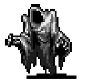
'화이트 핸드'(하얀 사신/White Hand)가 등장해 게임을 끝낸다. 화이트 핸드가 등장할 때는 종이 12번 울리면서[5] 화면이 점차 클로즈업되다가 왼쪽에서 등장하여 캐릭터에게 일정한 속도로 다가와 캐릭터와 닿으면 곧바로 즉사시킨다.[6] 화이트 핸드는 시스템상 게임을 끝내기 위한 강제 패턴이기 때문에 대미지를 주거나 잡는 것이 불가능하다.[7] 31분이 되기 전에 붉은 사신을 처치하면 자동으로 31분으로 고정되며 생존 과제를 달성한다.반전 모드에서는 골드 보너스 +200%, 행운 +20%, 적 체력 +200%의 보정을 단리로 받으며, 단축 모드에서는 시간 배속이 2배가 되는 대신 경험치 보너스 +25%를 단리로 받는다.
1.0 버전에서 스테이지 설명문이 바뀌었지만 한글 번역은 반영되지 않았다. 바뀐 경우에 한해 원문을 따로 기재한다.
 목록 바로가기
목록 바로가기2. 일반 스테이지
2.1. 광기의 숲
Mad Forest | |||||||||||||||||||
 | |||||||||||||||||||
Once a thriving haven, now a dumping ground for evil. A vampire is said to be the root of this evil, but we can find only mayhem and roast chicken. | |||||||||||||||||||
BGM(유튜브 링크) | |||||||||||||||||||
스테이지 구성 | |||||||||||||||||||
| |||||||||||||||||||
게임 시작부터 개방되어 있는 기본 스테이지. 전체적으로 넓게 뚫려 있는 초원이며, 덤불이나 나무, 비석 등이 존재하지만 크게 걸리적거리는 수준은 아니다. 신경 써야 하는 장애물이래봤자 덤불로 둘러싸인 작은 공간 정도다. 각종 동식물과 언데드들이 적으로 등장한다.
- 스테이지 해금 조건: 초기 개방
- 스테이지 구성
1스테이지답게 적 수가 적고 난이도는 널널한 편이다. 그러나 9분부터 등장하는 거대 박쥐는 높은 맷집과 넉백 저항으로 압박을 가하고, 11분부터는 적 수가 확 늘어나며 커트라인이 형성된다. 이후 16분부터 20분을 제외한 24분까지는 튼튼한 적 위주로 나오며 적 스폰이 격감하고, 25분부터 다시 늘어나기 시작한다. 28분과 29분에 등장하는 보스 박쥐 웨이브는 덩치가 작으므로 이후 스테이지보다 덜 압박적이다.
고유 압박 기믹은 3가지로 '박쥐 무리', '유령 무리', '플라워 벽'이 존재한다. 박쥐 떼와 유령 떼는 체력이 매우 낮은 박쥐와 유령이 떼거지로 돌진해오며, 마늘 같은 게 있다면 쉽게 막을 수 있다. 체력이 매우 높지만 이동속도와 공격력은 매우 낮은 꽃 벽이 30초에서 1분 동안 플레이어를 둘러싸서 포위하는데. 적끼리 밀치면서 생기는 틈으로 빠져나가거나 방어력이 있는 경우 그냥 뚫고 나가면 된다.
진화 상자는 1분, 그리고 10분 이후부터 드롭되며 아르카나 상자는 11분과 21분에 등장한다. 스테이지 보스 대부분이 보스 박쥐인데, 상자 드롭율이 유독 떨어지는 편이다.
스테이지 난이도와는 별개로, 1스테이지답게 골드 배율도 가장 낮고 30분짜리 스테이지 중 진화 기회도 가장 적어서 인기가 가장 떨어진다. 행운이 부족하면 12분과 14분 박쥐가 진화 상자를 안 떨구고, 16분부터 등장하는 미라와 식인꽃은 느려터져서 긴장감을 1%도 주지 않는 주제에 피만 더럽게 많고 스폰률이 떨어져서 황금 디스코를 통한 골드 파밍에도 불리하다. 웨이브 목록 (펼치기 · 접기)
- 0분대: 박쥐
- 1분대: 박쥐, 좀비, 오라 박쥐(보스, 진화1)
- 2분대: 박쥐, 박쥐 무리(이벤트)
- 3분대: 스켈레톤, 오라 박쥐(보스)
- 4분대: 유령, 스켈레톤, 박쥐 무리(이벤트)
- 5분대: 머드맨, 꽃 벽(이벤트), 거대 사마귀(보스)
- 6분대: 머드맨, 좀비
- 7분대: 박쥐, 머드맨, 박쥐 무리, 파란 오라 박쥐(보스)
- 8분대: 좀비, 박쥐 무리(이벤트), 거대 박쥐(보스, 상자x)
거대 박쥐는 데이터상 보스로 취급되지만 상자를 떨구지 않는다. - 9분대: 좀비, 거대 박쥐, 박쥐 무리(이벤트), 은빛 오라 박쥐(보스)
- 10분대: 머드맨, 꽃 벽(이벤트), 거대 사마귀(보스, 진화1)
보스 사마귀는 넉백 효과와 회중 시계 효과에 면역이다. - 11분대: 스켈레톤, 오라 박쥐(아르카나)
- 12분대: 유령, 늑대인간, 스켈레톤, 오라 박쥐(보스, 진화1)
- 13분대: 유령, 늑대인간, 유령 무리(이벤트)
- 14분대: 늑대인간, 거대 박쥐, 은빛 오라 박쥐(보스, 진화1)
- 15분대: 거대 박쥐, 늑대인간, 머드맨, 꽃 벽(이벤트), 늑대인간(보스, 진화1)
- 16분대: 사마귀, 머드맨, 파란 오라 박쥐(보스, 진화1)
- 17분대: 커다란 미라
- 18분대: 커다란 미라, 머드맨, 은빛 오라 박쥐(보스, 진화1)
- 19분대: 커다란 미라, 구울(회색)
- 20분대: 커다란 미라, 구울(초록), 거대 박쥐, 박쥐 무리(이벤트), 거대 커다란 미라(보스, 진화1)
- 21분대: 꽃 벽, 푸른 박쥐(아르카나)
- 22분대: 꽃 벽, 커다란 미라, 오라 박쥐(보스, 진화1)
- 23분대: 꽃 벽, 커다란 미라, 은빛 오라 박쥐(보스, 진화1)
- 24분대: 꽃 벽, 커다란 미라, 푸른 비너스(보스, 상자x)
9분대의 거대 박쥐처럼 푸른 비너스는 상자를 떨구지 않는다. - 25분대: 꽃 벽, 푸른 비너스, 푸른 비너스(보스, 진화1)
보스 푸른 비너스는 넉백 효과에 면역이다. - 26분대: 꽃 벽, 푸른 비너스
- 27분대: 머드맨, 커다란 미라, 푸른 박쥐(보스, 진화1)
- 28분대: 오라 박쥐, 거대 박쥐
- 29분대: 은빛 오라 박쥐, 오라 박쥐, 박쥐 무리(이벤트), 은빛 오라 박쥐(보스, 진화1)
- 해금 요소
- 여담
게임의 극초기부터 존재했던 스테이지로, 0.2.10 버전 이전에는 아무것도 없는 허허벌판이었다.


2.2. 화려한 도서관
Inlaid Library | |||||||||||||||||||
 | |||||||||||||||||||
조용하고 큰 도서관으로 휴식, 명상은 물론 구운 치킨을 찾으러 다니기에도 좋습니다. 그런데 돌가면은 왜 여기 있는 거죠? | |||||||||||||||||||
The Futile Scribe was cursed to know all and understand nothing. His endless library may gift us insight... or damnation. A mask of stone whispers endlessly within. | |||||||||||||||||||
BGM(유튜브 링크) | |||||||||||||||||||
스테이지 구성 | |||||||||||||||||||
| |||||||||||||||||||
2번째로 개방되는 정규 스테이지로, 좌우로는 무한하고 상하로는 좁은 구조를 지니고 있다. 언데드와 마법 생명체, 마녀 컨셉의 적들이 주로 등장한다.
- 스테이지 해금 조건: 광기의 숲에서 레벨 20 도달
- 스테이지 구성
시작 위치 상단의 탁자에 1레벨을 찍을 분량의 녹색 경험치 보석이 놓여 있다.(펼치기 · 접기)
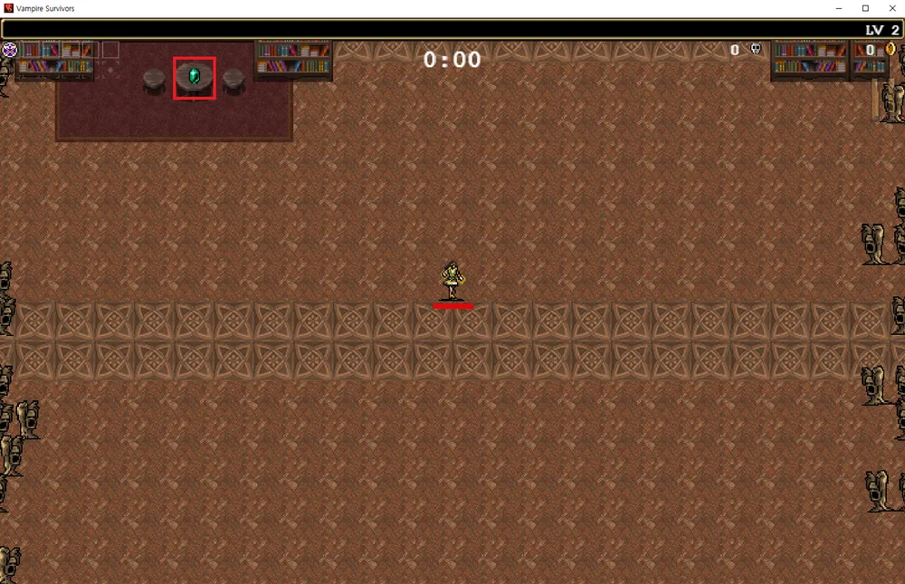
맵이 좁고 벽이 많으므로 벽에 반사되는 무기들의 효율이 좋으며, 적들이 좌우에서 웨이브치듯 몰려오는 특성상 마늘과 블러드 아스트로노미아 조합으로 하이퍼모드에서도 초반부를 날로 먹을 수 있다.
압박 기믹은 자폭 유령 '시뇨라 롯시', 메두사 무리, 두개골 무리가 존재한다. 자폭 유령은 이동속도가 매우 빠른 데다가 벽을 전부 통과하면서 일정 거리를 접근하면 붉은 원으로 깜빡인뒤 자폭 공격을 가한다. 대미지는 무려 50으로 2번 연속으로 맞으면 죽게 된다. 대신 넉백 내성이 낮기 때문에 딱히 잡으려고 하기보다는 넉백시켜 범위 밖에서 자폭시키는 방식이 가장 좋은 선택이다. 메두사 무리는 플레이어를 추적하지 않고 무리의 밀도도 낮아 존재감이 없다. 20분 이후 웨이브에서는 거대 두개골이 호를 그리며 돌진해오는 압박 기믹도 존재하는데, 딱히 강한 적도 아니고 않고 위협적인 패턴도 아니라 존재감이 없다.
전체적으로는 박쥐떼/소떼 이벤트 같은 돌발 러쉬가 없기에 한 번에 몰려서 극딜맞고 죽을 가능성이 낮고 처음부터 초록색 경험치 보석으로 리세마라가 가능해 일반 스테이지 중 클리어하기 가장 쉽다. 29분에 몰려오는 엄청난 웨이브 물량이 가장 어려운 구간이지만 고화력의 진화 무기를 충분히 마련해두었다면 클리어에는 무리가 없다.
정식 발매 후로는 1스테이지보다는 나은 취급을 받는다. 10분까지 진화가 없는 건 같지만, 10분 후부터 상자가 상당히 많이 쏟아져서 그나마 빠른 진화가 가능하다. 웨이브 목록 (펼치기 · 접기)
- 0분대: 먼지 정령, 시뇨라 롯시(이벤트)
- 1분대: 먼지 정령
- 2분대: 먼지 정령, 심령체, 메두사 무리(이벤트)
- 3분대: 미라, 커다란 미라(보스)
- 4분대: 먼지 정령, 미라
- 5분대: 미라, 커다란 미라(보스)
- 6분대: 듀라한, 심령체
- 7분대: 듀라한, 심령체, 시뇨라 롯시(이벤트)
- 8분대: 유령, 심령체, 거대 심령체(보스)
- 9분대: 유령, 미라
- 10분대: 심령체, 시뇨라 롯시(이벤트), 거대 사자 머리(보스, 진화1)
- 11분대: 사자 머리, 메두사 머리, 거대 메두사 머리(보스, 진화1), 오라 박쥐(아르카나)
- 12분대: 듀라한, 메두사 머리, 오라 박쥐(보스, 진화1)
- 13분대: 미라, 듀라한, 거대 먼지 정령(보스, 진화1)
- 14분대: 미라, 심령체, 메두사 머리, 은빛 오라 박쥐(보스, 진화1)
- 15분대: 메두사 머리, 메두사 무리(이벤트, 거대 메두사(보스, 진화1)
이 웨이브의 메두사 머리들은 플레이어를 적극적으로 추격하며, 거대 메두사는 넉백에 50% 저항이 있고 회중 시계 효과에 면역이다. - 16분대: 듀라한, 정예 듀라한, 마녀, 오라 박쥐(보스, 진화1)
- 17분대: 심령체, 마녀, 시뇨라 롯시(이벤트)
- 18분대: 마녀, 사자 머리, 거대 빗자루 마녀(보스, 진화1)
- 19분대: 마법사, 정예 듀라한
보스 빗자루 마녀는 넉백을 100% 더 받으며, 회중 시계 효과에 면역이다. - 20분대: 정예 듀라한, 사자 머리, 시뇨라 롯시(이벤트), 두개골 무리(이벤트), 네스페리트(보스, 진화3)
두개골 무리는 다른 무리 종류 적군과 동일하며 넉백 효과에 면역이 있다. - 21분대: 사자 머리, 오라 박쥐(아르카나)
- 22분대: 사자 머리, 빗자루 마녀, 시뇨라 롯시(이벤트), 파란 오라 박쥐(보스, 진화1)
- 23분대: 듀라한, 정예 듀라한, 빗자루 마녀, 사자 머리(보스, 진화1)
- 24분대: 빗자루 마녀
- 25분대: 거대 박쥐, 두개골, 빗자루 마녀, 박쥐 무리(이벤트), 두개골 무리(이벤트), 해그(보스, 진화1)
- 26분대: 메두사, 거대 메두사(보스, 진화1)
- 27분대: 메두사, 메두사 머리, 거대 메두사(보스, 진화1)
- 28분대: 거대 메두사 머리, 마법사, 거대 메두사(보스)
- 29분대: 거대 메두사 머리, 거대 먼지 정령, 거대 심령체, 거대 사자 머리, 시뇨라 롯시(이벤트)
- 스테이지 유물
- 해금 요소
- 레벨 40에 도달
유제품 공장 스테이지 해금 - 반전 모드에서 레벨 80에 도달
아스트랄 계단 스테이지 및 아스트랄 계단 하이퍼 모드 해금 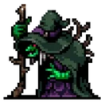
해그(Hag) 처치
하이퍼 모드 해금- 31분 생존 혹은 사신 처치
황금 디스코 아르카나 해금 - 아바타 인페르나스 캐릭터 해금
[비밀] 반전된 화려한 도서관에서만 감지할 수 있습니다. 그러면 좋은 친구들이 길을 보여줄지도 모릅니다. {해금 조건 펼치기 * 접기}
에우다이모니아 M. 스테이지에서 보스를 처치하고 엔딩을 본 뒤 접근 가능하다. 화려한 도서관 반전 모드에 진입해 검은 비둘기와 하얀 비둘기를 고른 후 진화하지 않고 스테이지 우측으로 쭉 가다 보면 금 반지 우측으로 3번째 피아노에서 기만의 사신이 튀어나온다. 처치하고 해당 피아노와 접촉하면 건반 화면이 나오며, 비둘기가 내려앉는 순서대로 건반을 5번 누르면 맵이 뒤틀리며 9개의 관이 나타난다. 적들을 뚫으며 모든 관을 열면 마지막 관에서 보스가 나오며, 처치하면 화이트 핸드가 나오고 게임이 자동 클리어된다. 이 이벤트는 캐릭터 해금 후에도 다시 해볼 수 있다.
- 여담
예전 BGM은 원래 Filippo Vicarelli라는 사람이 제작한 Crazy Escape라는 BGM을 그대로 사용했었는데, 문제는 이게 사용 허락이 없었다는 점과[20] 더불어 유튜브에서 저작권이 걸려서 노란 딱지가 붙었었다. 그래서 v0.2.10부터는 "스트리머 친화적인" BGM이 우선 나오며 기존 BGM은 옵션으로 선택할 수 있었다가 아예 삭제되어 버렸고, 이후 Filippo Vicarelli와의 관계는 완만해졌는지 그가 리믹스한 'Libro Inferno'로 어레인지되어 다시 추가되었다.[21]
이동속도가 매우 높은 캐릭터나 지형을 무시하는 캐릭터로 벽을 뚫고 바깥쪽으로 넘어가볼 수 있는데, 다른 도서관이 나온다. 다만 적 스폰은 정상적으로 되지 않는다.


2.3. 유제품 공장
Dairy Plant | |||||||||||||||||||
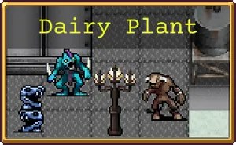 | |||||||||||||||||||
이 공장에 숨겨진 마법 지도는 우리를 뱀파이어에게 이끌지도 모릅니다. 아니라도 치킨은 더 얻을 수 있겠죠. | |||||||||||||||||||
The birthplace of Milk Magic churns with chaos. Here, it's not just blood that curdles. A secret map awaits the hero brave enough to enter this overthrown factory. | |||||||||||||||||||
BGM(유튜브 링크) | |||||||||||||||||||
스테이지 구성 | |||||||||||||||||||
| |||||||||||||||||||
v0.3.0b에서 추가된 3번째 정규 스테이지로, 광기의 숲보다 장애물이 크고 많아졌다. 주로 수인과 골렘 컨셉의 적들이 등장한다.
- 스테이지 해금 조건: 화려한 도서관에서 레벨 40 달성
- 스테이지 구성
경험치 보석 위치 (펼치기 · 접기)
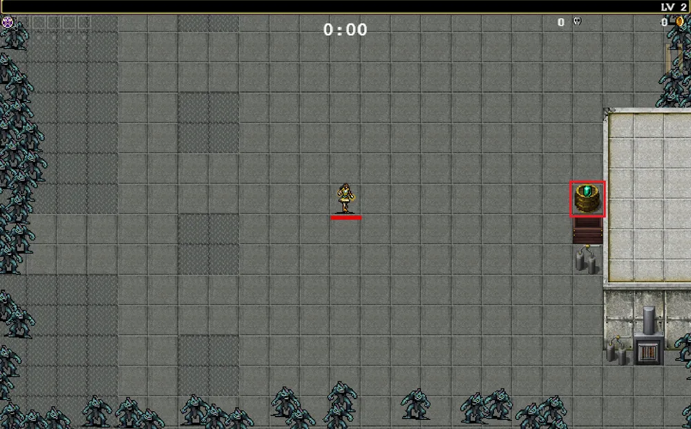
처음 진입하면 유물 아이템 은하수 지도와 괴물 도감이 위치한 곳을 가리키는 녹색 화살표가 등장한다. 우선 클리어보다는 4스테이지를 열기 위한 레벨 60 달성과 유물 아이템부터 먹는다는 생각으로 시작하는 게 좋다. 은하수 지도를 한번 획득한 후부터는 미니맵과 스테이지 아이템 가이드 기능이 영구적으로 활성화되고, 괴물 도감을 얻으면 우화집 메뉴를 사용할 수 있게 된다.
기본적으로 적들의 능력치가 높고, 더불어 오브젝트 및 가로등 수까지 적어 스테이지 중에서 전체 난이도가 상당히 높다. 시작하자마자 오른쪽에 초록 보석이 있기 때문에 일단 초록 보석을 먹고 1레벨업을 한 후 넓은 곳으로 이동하는 게 좋고, 시작 위치 위쪽에 흡입기(확률)가 있으니 회피하느라 먹지 못했던 경험치 보석을 몰아먹는 식으로 운용하는 게 좋다. 난이도 때문인지 1분 보스부터 진화 상자를 드롭한다.
전용 압박 기믹으로는 함정 장치[22]와 포탑형 적들의 원거리 공격[23], 포위 공격을 하는 해파리 떼[24] 및 특정 시간대가 되면 확률에 따라 '스토커'(녹색 사신/Stalker)가 등장하는 특수 패턴을 가지고 있다.[25]
'스토커'(녹색 사신/Stalker)가 등장하는 특수 패턴을 가지고 있다.[25]
가장 위험한 구간은 진화무기를 제대로 갖추지 못한 11분의 해골닌자 러쉬 인데 매우 많은 물량과 매우 빠른 적의 이동속도 덕분에 점점 피가 까이다가 사망하게 된다. 따라서 마력의 결정체나 정화자 같은 공방 일체형 무기들을 빠르게 마련하는 것이 매우 중요한 편이다. 또한 26분 이후의 거인 골렘들의 물량에도 압사당할 수 있는데 고화력의 무기 + 정화자 + 마력의 결정체를 모두 동원해도 점점 캐릭터를 포위해 들어오기 때문에 생존 및 방어 형태의 무기나 아르카나로 보완하는 것이 중요하다. 출시 초기에는 이 거인 골렘들의 물량에 압도당해 29분 50초에 아쉽게 클리어를 실패하는 경우가 많았으며, 지금도 뉴비가 처음 접하면 기존 맵에 비해 갑자기 튀어오른 난이도에 어려움을 느낀다는 반응이 많다.
적의 체력은 높고 넉백을 무시하는 적도 있지만 이 맵의 허점은 적의 공격력이 그렇게 높지 않다는 것이다. 마침 맵에 갑옷도 떨어져 있으니 풀업하고 괜히 움직이지 않으면 어떻게든 살아남을 수도 있다.
'스토커'(녹색 사신/Stalker)는 즉사 수준의 접촉 피해를 주고, 모든 피해와 빙결에 면역인 상태로 2분간 캐릭터를 추적한 후 사라진다. 대신 즉사 공격과 맵 기믹인 카트, 혹은 승리의 검으로 처치하면 진화 상자를 드롭한다. 보라색 오망성이 터지면 진화 상자도 같이 터지니 주의할 것. 웨이브 목록 (펼치기 · 접기)
- 0분대: 머맨
1% 확률로 '스토커'(녹색 사신)가 출현한다. - 1분대: 회색 머맨, 해골 탑(이벤트), 파랑 리자드맨(보스, 진화1)
- 2분대: 회색 머맨, 해파리 벽, 초록 리자드맨
해파리는 플레이어가 있던 위치에 생성되어서는 수축과 이완을 반복하다가 일정 시간이 지나면 소멸한다. - 3분대: 회색 머맨, 초록 리자드맨, 우유 정령, 해파리(이벤트), 오라 미노타우로스(보스, 진화1)
- 4분대: 회색 머맨, 초록 리자드맨, 우유 정령
- 5분대: 파란 리자드맨, 우유 정령, 해골 탑(이벤트), 오라 미노타우로스(보스, 진화1)
이 웨이브의 해골 탑은 6분이 되면 소멸한다. - 6분대: 머맨(회색, 빨강), 파란 리자드맨, 우유 정령 무리(이벤트)
- 7분대: 머맨(회색, 빨강), 칼잡이 머맨(노랑, 하늘), 파란 리자드맨, 해파리(이벤트), 거대 머맨(보스, 진화1)
- 8분대: 해골, 해골 암살자, 해골 무리(이벤트)
30% 확률로 '스토커'(녹색 사신)가 출현한다. - 9분대: 미노타우로스, 미뇽타우로스 무리(이벤트), 오라 미노타우로스(보스, 진화1)
미뇽타우로스 무리는 이전 박쥐, 유령 무리와는 달리 체력이 많은데, 넉백 내성은 또 이상하게 낮다. - 10분대: 미노타우로스, 정예 해골 탑(이벤트), 미뇽타우로스 무리(이벤트), 거대 미노타우로스(보스, 진화3)
- 11분대: 스켈레톤, 스켈레톤 암살자(초록), 해골 탑(이벤트), 스켈레톤 무리(이벤트) 오라 박쥐(아르카나)
- 12분대: 해골 탑, 붉은 해골 탑, 쌍칼잡이 스켈레톤(주황), 거대 해골 탑(보스, 진화1)
30% 확률로 '스토커'(녹색 사신)가 출현한다. - 13분대: 칼잡이 머맨, 리자드맨
- 14분대: 리자드맨, 골렘
- 15분대: 아콘 악시아, 강철 골렘, 정예 해골 탑
- 16분대: 아콘 란치아, 강철 골렘, 거대 트리톤(보스, 진화1)
보스 트리톤은 넉백에 면역이 있다. - 17분대: 미뇽타우로스, 아콘 란치아
- 18분대: 아콘 악시아, 미뇽타우로스, 해파리 벽(이벤트), 거대 아콘 악시아(보스, 진화1)
- 19분대: 아콘 란치아, 트리톤, 해파리 벽(이벤트)
- 20분대: 강철 골렘, 트리톤, 해파리, 양뿔 해골 탑, 거대 청동 골렘(보스, 진화3)
거대 청동 골렘은 넉백에 면역이다. - 21분대: 스켈레톤 암살자(주황, 초록), 날개 스켈레톤, 정예 해골 탑, 오라 박쥐(아르카나)
- 22분대: 강철 골렘, 거대 강철 골렘(보스, 진화1)
강철 골렘은 넉백에 면역이다. - 23분대: 미뇽타우로스
- 24분대: 아콘 악시아, 아콘 란치아, 강철 골렘, 소드 가디언
- 25분대: 소드 가디언, 거대 소드 가디언(보스, 진화1)
보스 소드 가디언은 넉백과 시계 바늘 효과에 면역이 있다. - 26분대: 미뇽타우로스, 코카트리스
- 27분대: 코카트리스, 소드 가디언, 거대 코카트리스(보스, 진화1)
- 28분대: 거대 미노타우로스, 거대 칼잡이 머맨(노랑, 하늘)
- 29분대: 거대 골렘(강철, 청동)
각 거대 골렘은 넉백에 면역으로, 이 면역은 마늘로 벗길 수 있다.
- 스테이지 유물
- 해금 요소


2.4. 갈로의 탑
Gallo Tower | |||||||||||||||||||
 | |||||||||||||||||||
이 위대한 탑에는 놀라운 마법의 유물과 과거의 괴물들이 봉인되어 있습니다. | |||||||||||||||||||
An edifice of science and sorcery where horror was made manifest in the name of progress. Its many artifacts and experiments may lead us to what we seek. | |||||||||||||||||||
BGM(유튜브 링크) | |||||||||||||||||||
스테이지 구성 | |||||||||||||||||||
| |||||||||||||||||||
v0.4에서 추가된 네 번째 스테이지로 화려한 도서관과 대조적으로 좌우가 막혀 있고 수직으로 무한히 뻗어있는 구조다. 언데드, 괴생물체, 마법사, 골렘 등의 적들이 주로 등장한다.
- 스테이지 해금 조건: 유제품 공장에서 레벨 60 달성
- 스테이지 구성
고유 압박 패턴으로 슈팅스타가 존재하며, 범위 표시 후 폭격하며 50가량의 강력한 대미지를 준다. 다른 압박 패턴으로 긴 용 새우가 화면을 좌우로 구불거리며 가로지르는 드래곤 스웜이 존재한다. 또한 유제품 공장처럼 함정 발판이 존재하는데, 밟으면 촛대 모양을 한 자폭 적이 플레이어를 포위하는'폴터가이스트 룰렛'[30]이 발생하거나 임프 무리가 스폰된다. 고정된 자폭 촛대는 파괴하면 낮은 확률로 광원 아이템을 드롭하며, 함정 발판의 쿨타임이 유제품 공장보다 훨씬 길다. 촛대는 체력이 매우 많고 자폭 피해도 2스테이지의 자폭맨과 동일한 50으로 매우 아프니 반격 빌드나 각성 아르카나 사용이 아니라면 피하는 것이 좋다.
특이한 중간 보스로는 15분에 등장하는 갈로가 존재한다. 플레이어와 거리 유지를 하며 원거리 공격을 날리고, 빙결 대신 둔화를 거는 시곗바늘을 사용하는데 크기가 작아서 잘 보이지 않는다. 명치 보호가 부실하다면 원거리 공격을 맞고 의문사할 수 있으니 보호할 만한 무기를 골라두는 것이 좋다.
본편의 5개 스테이지 중 고저주 플레이가 가장 어렵다. 특히 용 새우라는 적이 문제인데, 덩치가 크고 이동속도도 빠른 주제에 스폰까지 많아서 넉백되면서도 생성되는 적에 밀려서 기어이 플레이어에게 달려든다. 월계수(진홍빛 망토) 하나만으로는 29분 웨이브를 버틸 수 없으니 추가적인 유지력 확보가 필요하다.
25분에 등장하는 보스 몬스터 자이언트 에너미 크랩의 양쪽 집게발은 공격할수록 크기가 커지고, 파괴되어도 곧 재생된다.[31] 또한 자이언트 에너미 크렙의 아래쪽 방향에 6초 이상 위치해 있다면 익사의 사신(드라우너/Drowner)이 등장할 확률이 높아진다. 드라우너는 항상 맵 왼쪽 아래에 위치해서 플레이어가 절대로 접근할 수 없으며[32], 하단부터 점점 위쪽으로 차오르기 시작하는 물 장판을 생성한다. 물 장판에 닿으면 틱당 20의 피해를 받으며, 스토커처럼 즉사 무기나[33] 사신에게 통하는 무기로 공격할 수 있으며, 해치우면 상자를 드롭한다.
익사의 사신(드라우너/Drowner)이 등장할 확률이 높아진다. 드라우너는 항상 맵 왼쪽 아래에 위치해서 플레이어가 절대로 접근할 수 없으며[32], 하단부터 점점 위쪽으로 차오르기 시작하는 물 장판을 생성한다. 물 장판에 닿으면 틱당 20의 피해를 받으며, 스토커처럼 즉사 무기나[33] 사신에게 통하는 무기로 공격할 수 있으며, 해치우면 상자를 드롭한다.
30분이 경과하면 엄청난 양의 슈팅 스타 폭격과 함께 리퍼와 드라우너가 동시에 튀어나온다. 이때의 드라우너는 완전 무적이라 절대로 처치할 수 없으며 장판 생성 속도가 굉장히 빨라 상단 이동을 강제한다. 웨이브 목록 (펼치기 · 접기)
- 0분대: 두개골, 슈팅스타(이벤트)
- 1분대: 두개골, 붉은 두개골, 스칼레톤(보스, 상자x)
- 2분대: 두개골, 박쥐, 드래곤 스웜(이벤트)
- 3분대: 스칼레톤, 오라 데몬(보스)
- 4분대: 하얀 두개골, 스켈레톤, 슈팅스타(이벤트), 마법사(보스, 상자x)
- 5분대: 거대 두개골, 스칼레톤, 드래곤 스웜(이벤트), 오라 데몬(보스)
- 6분대: 붉은 두개골, 붉은 듀라한, 드래곤 스트림(이벤트)
- 7분대: 검은 박쥐, 붉은 박쥐, 보라 데몬, 흰 데몬, 드래곤 스트림(이벤트)
- 8분대: 붉은 두개골, 붉은 유령, 거대 두개골(보스)
- 9분대: 붉은 유령, 붉은 듀라한, 마법사(이벤트)
- 10분대: 임프, 마법사(이벤트), 하피(보스, 진화3)
- 11분대: 하피, 용 새우, 오라 박쥐(아르카나)
- 12분대: 보라 데몬, 하피, 드래곤 스웜(이벤트), 오라 데몬(보스, 진화1)
- 13분대: 보라 데몬, 하피, 거대 용 새우(보스, 진화1)
- 14분대: 붉은 유령, 붉은 듀라한, 하피, 오라 데몬(보스, 진화1)
- 15분대: 하피, 드래곤 스트림(이벤트), 슈팅스타(이벤트) 이구아나 갈로 발레토(보스, 진화1)
- 16분대: 마법사, 드래곤 스웜(이벤트), 오라 데몬(보스, 진화1)
- 17분대: 마법사, 용 새우
- 18분대: 용 새우, 날개 스켈레톤, 거대 아콘 디스코(보스, 진화1)
- 19분대: 스칼레톤
- 20분대: 붉은 듀라한, 용 새우, 거대 용 새우(보스, 진화3[34])
- 21분대: 아콘 스페이다, 오라 박쥐(아르카나)
- 22분대: 아콘 스페이다, 아콘 디스코, 오라 데몬(보스, 진화1)
- 23분대: 코카트리스, 하피, 거대 코카트리스(보스, 진화1)
- 24분대: 만티코어
- 25분대: 붉은 두개골, 자이언트 에너미 크랩(보스, 진화5), 익사의 사신(조건부, 진화5)
- 26분대: 고깃덩이 골렘, 거대 코카트리스(보스, 진화1)
- 27분대: 고깃덩이 골렘, 만티코어, 드래곤 스웜(이벤트), 거대 만티코어(보스, 진화1)
- 28분대: 고깃덩이 골렘, 거대 만티코어(보스, 진화1)
- 29분대: 거대 용 새우
- 스테이지 유물
- 해금 요소
- 레벨 80에 도달
마그나 예배당 스테이지 해금 - 반전 모드에서 레벨 80에 도달
작은 다리 스테이지 및 작은 다리 하이퍼 모드 해금 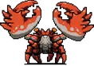
자이언트 크랩(Giant Enemy Crab) 처치
하이퍼 모드 해금- 31분 생존 혹은 사신 처치
한도 초과 아르카나 해금 - 레다 캐릭터 해금
[비밀] 갈로의 탑 하단을 조사하세요. {해금 조건 펼치기 * 접기}
따로 조건은 없고 스테이지만 해금하면 된다. 갈로의 탑은 내려갈수록 점점 어두워지는데, 캐릭터 주변을 제외하면 완전히 깜깜해져 화면이 아예 보이지 않고, 배경음악이 으스스한 바람 소리로 바뀌는 지점까지 쭉 내려가야 한다. 이후 천천히 내려가다 보면 등장하며, 처치하면 어둠이 가시며 배경이 원상복구된다. 캐릭터 해금 뒤에도 이벤트를 다시 해볼 수 있다.
- 여담
화려한 도서관처럼 일정 수치 이상의 이동속도를 가졌거나 지형을 무시하는 캐릭터로 벽을 뚫고 나갈 수 있다. 역시 가다 보면 적 스폰이 박살 난 다른 탑이 나온다.


2.5. 마그나 예배당
Cappella Magna | |||||||||||||||||||
 | |||||||||||||||||||
이런 우리가 너무 멀리 왔네요. 쫓아가던 닭과 함께 숲에서 야영을 할 수도 있었지만, 우리는 눈 앞에 있는 뱀파이어를 쫓아 가기로 했습니다. | |||||||||||||||||||
Conceited were they that ruled from so high yet stooped so low. This nexus of debased purity is the perfect place to find a vampire. Probably. | |||||||||||||||||||
BGM(유튜브 링크) | |||||||||||||||||||
스테이지 구성 | |||||||||||||||||||
| |||||||||||||||||||
v0.7에서 추가된 다섯 번째 스테이지로 거대한 발코니 때문에 운신의 폭이 좁은 편이다. 박쥐로 시작해서 천사와 악마 타입의 몬스터 및 하위급의 사신으로 보이는 수습 사신 몬스터들과 영혼을 빼앗긴 플레이어블 캐릭터(스테이지 킬러)까지 적으로 등장한다.
- 스테이지 해금 조건: 갈로의 탑에서 레벨 80 달성
- 스테이지 구성이나
시간대 상관없이 모든 상자에서 진화가 가능하다.
30분 이후에 리퍼뿐만 아니라 수많은 수습 사신들도 몰려나와 플레이어를 사냥한다. 수습 사신의 공격도 당연히 월계수 중첩을 깎기 때문에 리퍼를 잡거나 30분 이후에 오래 버티기 쉽지 않다. 황금디스코 아르카나 등을 이용해 체력을 회복해서 버티면 리퍼를 죽일 때까지 버틸 수는 있다.- 해금 초기
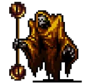
광기의 사신 '매드너', 익사의 사신 '드라우너', 집착의 사신 '스토커',  기만의 사신 '트릭스터',
기만의 사신 '트릭스터', 그냥사신 '리퍼'(30분), 화이트핸드(리퍼 처치 후)까지 사신을 모두 만날 수 있다.[40]
시작부터 생성되는 광기의 사신은 플레이어를 쫓아다닐 뿐 별다른 패턴은 없다. 광기의 사신이 존재하는 동안 박쥐들이 천사의 모습으로 바뀌는 게[41] 전부다. 5분에 등장하는 익사의 사신은 하단 이동을 방해해서 성가실 뿐만 아니라 플레이어와 거리 유지를 칼같이 해대서 직접 공격으로 없애는 게 힘드니 미리 대기해 뒀다가 묵주로 터트리는 게 가장 좋다. 10분에 나오는 집착의 사신은 시간이 지나도 디스폰이 안 되므로 역시 묵주로 처리해야 한다. 이후 15분에 등장하는 기만의 사신은 플레이어와 거리를 두고 주기적으로 아이템으로 위장한 자폭 적을 생성한다. 패턴이 별로 위협적이지도 않고 이쯤 되면 빌드업도 잘 진행됐을 테니 굳이 묵주를 챙기러 갈 필요는 없다. 즉사 내성이 없고 묵주가 확정적으로 등장하기 때문에 토스티 캐릭터를 해금하기에 가장 유리한 맵이기도 하다. - 종말의 사신 이벤트
달빛 스테이지에서 월식 이벤트를 마치고 나면 마그나 예배당 플레이 시 특별 이벤트가 진행된다. 게임 시작 시 디렉터가 박수를 치면서 맵에 숨겨져 있던 은 반지/금 반지/좌 메탈리오/우 메탈리오 아이템들을 소멸시키고, 4분 경에는 캐릭터가 흡수한 황금알을 모두 빼앗아 간다. 30분까지 버티면 다섯 사신들이 모두 융합한 보스 "종말의 사신(ender)"가 등장하여 캐릭터를 공격해오고, 일정 시간 안에 엔더를 잡지 못하면 하얀 사신이 등장해 캐릭터를 강제로 즉사시킨다. 엔더의 패턴에 대한 설명은 항목 참조. 엔더를 처치하는 데 성공하면 유물 아이템 위대한 복음을 얻을 수 있으며, 이후 플레이부터는 반지와 메탈리오들도 다시 사용할 수 있게 된다.
"종말의 사신(ender)"가 등장하여 캐릭터를 공격해오고, 일정 시간 안에 엔더를 잡지 못하면 하얀 사신이 등장해 캐릭터를 강제로 즉사시킨다. 엔더의 패턴에 대한 설명은 항목 참조. 엔더를 처치하는 데 성공하면 유물 아이템 위대한 복음을 얻을 수 있으며, 이후 플레이부터는 반지와 메탈리오들도 다시 사용할 수 있게 된다. - 이벤트 후
이 스테이지에서는 더 이상 특정 시간대에 등장하던 사신들이 등장하지 않는다. 기껏해야 랜덤 이벤트로 튀어나오는 게 전부. 다른 스테이지에서는 정상적으로 나온다. 이 때문에 적과의 공방만 신경 쓰면 되는 단순한 스테이지로 변모한다. 혹시 토스티 캐릭터를 아직 해금하지 않았다면 이 스테이지에서 조건을 채우도록 하자.
웨이브 목록 (펼치기 · 접기)
- 0분대: 작은 박쥐, 매드너[엔더]
- 1분대: 작은 박쥐, 거대 박쥐(보스, 진화1)
- 2분대: 작은 박쥐, 큰 박쥐
- 3분대: 작은 박쥐, 큰 박쥐, 노란 수습 사신, 미지의 존재(보스, 진화1)
- 4분대: 작은 박쥐, 큰 박쥐, 노란 수습 사신
- 5분대: 노란 수습 사신, 거대 박쥐, 거대 거대 박쥐(보스, 진화1), 드라우너[엔더]
- 6분대: 파란 수습 사신, 거대 박쥐
- 7분대: 파란 수습 사신, 큰 박쥐, 테트라브라키아
- 8분대: 파란 수습 사신, 회색 수습 사신, 노란 수습 사신, 테트라브라키아
- 9분대: 파란 수습 사신, 서큐버스, 미지의 존재(보스, 진화1)
- 10분대: 파란 수습 사신, 테트라브라키아, 서큐버스, 거대 서큐버스(보스, 진화3), 스토커[엔더]
- 11분대: 초록 수습 사신, 아콘 스페이다, 미지의 존재(아르카나)
- 12분대: 아콘 스페이다, 아콘 피아마, 미지의 존재(보스, 진화1)
- 13분대: 화염 기사
- 14분대: 초록 수습 사신, 아콘 레임
- 15분대: 아콘 레임, 아콘 오로, 거대 아콘 레임(보스, 진화1), 트릭스터[엔더]
- 16분대: 악령 야수, 악령 사제
- 17분대: 악령 야수, 악령 사제
- 18분대: 악령 야수, 악령 사제, 보라 수습 사신, 거대 아콘 악시아(보스, 진화1)
- 19분대: 악령 야수, 은색 악령 야수
- 20분대: 보라 수습 사신, 은색 악령 야수, 대악마, 붉은 대악마(보스, 진화3)
- 21분대: 스테이지 킬러, 미지의 존재(아르카나)
- 22분대: 타락한 케루브, 미지의 존재(보스, 진화1)
- 23분대: 타락한 케루벨로, 미지의 존재(보스, 진화1)
- 24분대: 타락한 스론, 미지의 존재(보스, 상자x)
- 25분대: 타락한 케루브, 타락한 케루벨로, 타락한 스론, 거대 트리나크니아(보스, 진화1)
- 26분대: 거대 스테이지 킬러
- 27분대: 트리나크니아, 미지의 존재(보스, 진화1)
- 28분대: 거대 타락한 케루벨로, 거대 서큐버스, 거대 아콘 레임, 거대 대악마
- 29분대: 거대 수습 사신
- 30분 이후: 리퍼, 붉은 수습 사신
- 종말의 사신 이벤트 한정: 엔더
- 스테이지 유물
- 해금 요소
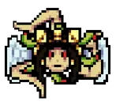
트리나크리아 처치
하이퍼 모드 해금- 코스모 파보네 캐릭터 해금
[비밀] 순수한 마음과 좋은 친구 2명과 함께 마그나 예배당의 불타는 발코니로 이동하세요. {해금 조건 펼치기 * 접기}
황금알이 0개인 캐릭터[50]로 마그나 예배당에 진입해, 검은 비둘기와 하얀 비둘기를 보유하고 왕관과 티라미수가 위치한 곳의 바로 위의 은두자 프리타를 집으면 은두자 프리타 바로 아래의 철창이 사라진다. 발코니에 앉아 퍼덕거리는 코스모 파보네에 접촉하면 해금된다. 비둘기와 은두자의 입수 순서는 상관없으며, 은두자를 먹고 비둘기를 뽑아도 인정된다.근데 버그로 비둘기 안 먹어도 될 때가 있다.
- 여담
종말의 사신 이벤트는 한 번 클리어하면 본편 게임에서는 더 이상 경험할 수 없다. 대신 '빛과 어둠의 세계' 어드벤처의 마지막 스테이지에서 다시 해볼 수 있으며, 어드벤처 승천으로 질릴 때까지 경험하는 것도 가능하고 보스 래쉬에서도 등장하므로 다시 싸워볼 수 있다. 다만 보스 래쉬의 엔더는 패턴과 체력이 살짝 다르다.


3. 보너스 스테이지
3.1. 일 몰리제
Il Molise | ||||||||||||||||||||||
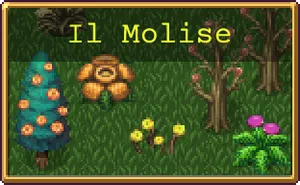 | ||||||||||||||||||||||
존재하지 않는 장소가 있습니다.[51] 자연을 존중하며 휴식을 취하고 인생을 즐기세요. | ||||||||||||||||||||||
The flowers seem to sing here, calling out to weary heroes. Is such an unspoilt place even real? Does it matter? Is there roast chicken? | ||||||||||||||||||||||
BGM(유튜브 링크) | ||||||||||||||||||||||
스테이지 구성 | ||||||||||||||||||||||
| ||||||||||||||||||||||
v0.3.1에서 추가된 보너스 스테이지. 스테이지 이름인 몰리제는 실제로 이탈리아의 지역 이름이다.
- 스테이지 해금 조건: 다섯 메인 스테이지 중 1곳의 하이퍼 모드 해금, 하이퍼 모드는 스테이지와 함께 해금된다.
- 스테이지 구성
푸른 초원과 비슷한 허허벌판에서 움직이지 않는 식물들만 스폰된다. 적 스폰은 화면 밖에서만 이루어지므로 열심히 뛰어다녀야 하며, 움직이지는 않아도 적은 적이라 닿으면 대미지를 준다.
골드를 주는 항아리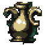
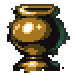
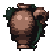
가 추가로 스폰되며, 이들은 보스 판정을 받기에 체력이 상당히 높은 편이다. 후반부로 갈수록 항아리의 등장 비율이 많아지면서 맵이 서서히 어두워진다.
무기 진화가 가능한 보물 상자는 10분 이후부터 나오며, 은상자나 금상자가 등장할 경우 2개 이상의 무기를 진화시킬 수도 있다. 아르카나는 11분, 21분에 나온다.
시간 제한인 15분이 되면 사신이 등장해 게임을 끝내지만, 월계수와 시곗바늘로 사신을 얼리면서 15분 이상 버티면 골드를 주는 항아리가 계속 생성되기에 골드를 상당히 많이 모을 수 있다. 15분 이후 항아리의 스폰이 점점 줄어들다가 21분이 되면 1분간 항아리가 엄청나게 생성되는 피버타임이 발동한 다음 더 이상 항아리가 스폰되지 않는다. 따라서 보너스 스테이지란 이름처럼 골드 벌이를 위해 만들어진 맵이다. 15분 이후에는 경험치가 나오지 않지만, 매혹의 달이 있다면 추가 경험치 보석은 생성된다. 무한 모드로 플레이할 때는 항아리 피버타임은 등장하지 않고 식물몹들만 등장한다.
적을 스폰시키려면 계속해서 움직여야 하고, 벌이도 영 시원치 않다 보니 빅 트라우저나 새미 같은 골드벌이 특화 캐릭터가 나온 뒤로는 외면받는 스테이지가 되었다. 굳이 저 캐릭터들이 아니더라도 달빛 스테이지보다 나은 점이 딱히 없다. 다만 캐릭터를 위협하는 요소가 전무하기 때문에 특정 캐릭터로 15분 생존 도전과제[53]를 날먹하기 가장 좋다. 랜덤 이벤트 끄고 단축 모드 켜고 들어가 7분 30초[54]동안 딴짓하다가 오면 된다. 웨이브 목록 (펼치기 · 접기)
- 0분: 슬픈 몰리사노
- 1분: 슬픈 몰리사노
- 2분: 슬픈 몰리사노
- 3분: 슬픈 몰리사노, 행복한 몰리사노, 항아리(보스)
- 4분: 슬픈 몰리사노, 행복한 몰리사노
- 5분: 행복한 몰리사노, 항아리(보스)
- 6분: 행복한 몰리사노, 귀여운 몰리사노
- 7분: 행복한 몰리사노, 항아리(보스)
- 8분: 행복한 몰리사노
- 9분: 행복한 몰리사노, 귀여운 몰리사노, 항아리(보스)
- 10분: 슬픈 몰리사노, 귀여운 몰리사노, 죽은 몰리사노(보스, 진화5)
- 11분: 귀여운 몰리사노 몰리사노, 죽은 몰리사노(보스, 진화5), 죽은 몰리사노(아르카나)
- 12분: 슬픈 몰리사노, 늙은 몰리사노
- 13분: 늙은 몰리사노, 죽은 몰리사노, 죽은 몰리사노(보스, 진화5)
- 14분: 슬픈 몰리사노, 행복한 몰리사노, 귀여운 몰리사노, 늙은 몰리사노, 죽은 몰리사노, 항아리
- 15분~20분: 항아리
- 21분: 항아리, 죽은 몰리사노(아르카나)
- 해금 요소
3.2. 달빛
Moongolow | ||||||||||||||||||||||
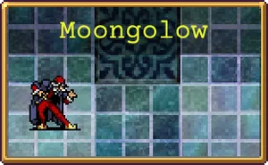 | ||||||||||||||||||||||
붉은 달이 떠오를 때 바다에 삼켜진 신비한 마을이 다양한 마법 유물들과 함께 수면위로 떠오릅니다. | ||||||||||||||||||||||
Legend tells of a city swallowed by the sea under a full moon's callous watch. Home to mysteries unknown, we ought to see what lies within its walls. | ||||||||||||||||||||||
BGM(유튜브 링크) | ||||||||||||||||||||||
스테이지 구성 | ||||||||||||||||||||||
| ||||||||||||||||||||||
v0.6에서 추가된 두 번째 보너스 스테이지. "바다에 삼켜진 마을의 잔해"라는 콘셉트에 걸맞게 해저형 몬스터들이 주로 등장한다. 이름인 Moongolow는 울티마 시리즈에 등장하는 도시 Moonglow의 패러디이며, 또한 Moonglow(달빛)의 glow를 go low(저급하게 또는 낮게)로 바꿔놓은 일종의 말장난이자, 바다 아래로 가라앉은 콘셉트를 표현한 중의적인 느낌도 가지고 있다.
- 스테이지 해금 조건: 다섯 메인 스테이지 중 4개의 하이퍼 모드 해금, 하이퍼 모드는 스테이지와 함께 해금된다.
- 스테이지 구성
일 몰리제처럼 처치하면 골드를 주는 항아리가 등장한다. 일 몰리제와 달리 시작할 때부터 떼거지로 나오는 등 스폰량은 더 많다. 한 번 골드 피버를 터뜨리면 스테이지가 끝날 때까지 골드를 벌어들일 수 있다. 15분 이후에도 계속 스폰되며, 무한 모드로 플레이할 때에는 15분 이후 2번째 사이클부터는 항아리 무더기들이 더 이상 스폰되지 않고 몬스터들만 스폰된다.
추가로 토로나의 상자를 제외하고 모든 장신구가 스테이지 아이템으로 등장한다는 특징이 있다. 떨어져 있는 아이템을 전부 먹는다고 페널티가 있진 않으니 한 번에 모두 먹어도 상관없지만, 6개를 초과하면 토로나의 상자를 레벨업 보상으로 얻을 수 없게 된다. 그러니 레벨업으로 토로나의 상자를 먼저 얻어야, 진정한 의미에서 모든 장신구를 얻었다고 말할 수 있다.
스테이지를 시작하자마자 암상인이 등장하며, 이 상인에게서 유물 아이템 유리 가면을 구입하면 모든 스테이지에서 암상인을 잠금해제할 수 있다.
일 몰리제와 달리 21분 아르카나 상자는 등장하지 않는다.
암상인 외에 특정 조건을 만족하면 숨겨진 상인이 등장한다. 자세한 건 아래의 특수 상인 문항을 참고하자. - 월식
월식 이벤트를 보기 전엔 스테이지 셀렉트 섬네일이 붉은 달 이미지로 점멸되며, 이 상태에서 통상 캐릭터로 진행하면 시간이 흐를수록 음악이 점점 느려지고 15분에 가까워지면 맵 배경이 붉은색으로 변경되면서 화면이 왜곡된다. 여기서 14분에 등장하는 트리나크리아[59]를 처치한 뒤, 15분이 되면 어딘가로 빨려들어간 뒤 새로운 공간에서 히든 스테이지 "Holy Forbidden"이 시작되는 '월식 이벤트(luna eclipse)'가 진행된다. 히든 캐릭터나 DLC 캐릭터로는 진행이 불가능하며, 상기한 트리나크리아를 처치하지 못할 경우 마찬가지로 진행이 불가능하다. 월식 이벤트가 가능할 경우 스테이지 이미지에 붉은 빛이 나오는 것으로 구분이 가능하다. Holy Forbidden 문단 참조.
이 월식 이벤트는 한 번 깨면 어떤 방법으로도 다시 진행할 수 없다. 그리고 월식 이벤트를 완료한 뒤부터는 달빛 스테이지의 몬스터 웨이브 구성이 달라지고, 15분에 '리퍼'(붉은 사신/Reaper)가 나와 게임을 끝낸다. 14분에는 달빛 아틀란티스인 3마리가 나오며 이들로부터도 각각 황금알을 얻을 수 있다.
3마리가 나오며 이들로부터도 각각 황금알을 얻을 수 있다. 웨이브 목록 (펼치기 · 접기)
- 0분: 해파리(비추적)
이 해파리들은 플레이어를 추적하지 않고 대신 수직으로 휘적거리며 이동한다. 이하 동일. - 1분: 메두사 헤드(비추적)
이 메두사 헤드들은 플레이어를 추적하지 않고 대신 수평으로 휘적거리며 이동한다. 이하 동일. - 2분: 덩굴 뱀
- 3분: 메두사 헤드(비추적), 자이언트 에너미 크랩(보스)
이 스테이지의 자이언트 에너미 크랩은 집게 기믹이 존재하지 않는다. - 4분: 해파리(비추적), 메두사 헤드(비추적)
- 5분: 덩굴 뱀, 자이언트 에너미 크랩(보스)
- 6분: 유령
- 7분: 유령, 시뇨라 블루
- 8분: 머맨, 자이언트 에너미 크랩(보스)
- 9분: 덩굴 뱀
- 10분: 논 자이언트 에너미 크랩, 자이언트 에너미 크랩(보스, 진화1)
- 11분: 나이트셰이드, 마늘, 거대 나이트셰이드(보스, 진화1), 거대 마늘(아르카나)
- 12분: 덩굴 뱀, 거대 마늘(보스, 진화1)월식: 작은 미지의 존재, 미지의 존재(보스, 진화5)
- 13분: 덩굴 뱀, 거대 마늘(보스, 진화1)월식: 작은 미지의 존재, 미지의 존재, 거대 미지의 존재(보스, 진화5)
- 14분: 덩굴 뱀, 달빛 아틀란티스인 3체(보스, 황금알)
달빛 아틀란티스인은 15분이 되어도 사라지지 않는다.월식: 덩굴 뱀, 미지의 존재 소용돌이(이벤트), 트리나크리아(보스, 상자x) - 15분 이후: 논 자이언트 에너미 크랩, 항아리
항아리는 이전 시간대처럼 뭉쳐서 스폰되며, 논 자이언트 에너미 크랩은 긴 간격으로 스폰된다.
- 스테이지 유물
 유리 가면
유리 가면
상인에게서 10,000골드로 구매해야 한다.
특수 상인 (펼치기 · 접기)
- 힐러
시작 지점 남쪽에 위치한다. - 판매 조건: 황금알 5,000개 / 20,000개 이상
- 판매 아이템: 문스펠의 불꽃
- 가격: 0
- 아이템 효과: 무작위 황금알 보너스를 최대 100개 영구적으로 제거합니다. 이는 실행 취소할 수 없습니다.
- 판매 아이템:
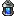
포스카리의 등불- 가격: 0
- 아이템 효과: 이동속도에 대한 모든 황금알 보너스를 영구적으로 제거합니다. 이는 실행 취소할 수 없습니다.
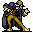
에그맨
시작 지점 북쪽에 위치한다.- 판매 조건: 황금알 5,000개 이상 / 100만 골드 보유
- 판매 아이템: 황금알
- 가격: 10,000
- 아이템 효과: 현재 플레이 중인 캐릭터의 무작위 능력치 한 가지를 영구적으로 소폭 증가시킵니다.
- 판매 아이템:
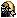
MAX EggS- 가격: 전부
- 아이템 효과: 모든 금액을 전부 사용하여 황금알을 구매합니다.
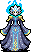
잔티아
시작 지점 서쪽에 위치한다.- 판매 조건: 특정 DLC 구입
- 판매 아이템:
 에메랄드 디스크
에메랄드 디스크- 가격: 50,000
- 아이템 효과: 에메랄드 디오라마 스테이지 개방
- 판매 아이템: 파일:VS_Relic_Joker Disc.png 조커 디스크
- 가격: 50,000
- 아이템 효과: 안테 챔버 스테이지 개방
- 해금 요소
- 빅 트라우저 캐릭터 해금
[비밀] 16개 장신구를 모두 마스터한 상태로 달빛에서 도망치세요. {해금 조건 펼치기 * 접기}
반지와 메탈리오를 제외한 16종의 장신구를 전부 최대 레벨까지 올린 상태로 게임에서 나가야 한다. 죽어서 부활 횟수가 2 미만으로 내려가면 티라미수 레벨이 차감되어 조건을 만족하지 못하므로 설명대로 무조건 도망쳐야 한다.
- 여담
0.6패치 이틀 전 공식 트위터에 베네치아 사진이 업로드되었는데, 달빛 스테이지의 콘셉트 모델로 베네치아를 참고했던 것을 힌트 겸 예고 겸으로 올린 것으로 보인다.
3.3. 화이트아웃
Whiteout | |||||||||||||||||||
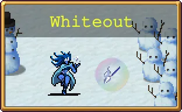 | |||||||||||||||||||
북극의 신기루와 느리고 끊임없는 눈보라에 둘러싸인 이 거대한 빙하 때문에 환경은 더욱 혹독해집니다. 그렇더라도 강력한 무기와 신비한 약, 온천이라면 질색하는 저주받은 여자의 신화는 거부할 수 없을 만큼 매혹적이죠. | |||||||||||||||||||
BGM(유튜브 링크) | |||||||||||||||||||
스테이지 구성 | |||||||||||||||||||
| |||||||||||||||||||
적들은 느리고 불에 약합니다. | |||||||||||||||||||
1.7.0에서 추가된 보너스 스테이지.
- 스테이지 해금 조건: 회중시계 누적 20번 발견, 하이퍼 모드는 스테이지와 함께 해금된다.
- 스테이지 구성
설명대로 전체적으로 적이 느리며, 불의 지팡이 등 화염 계열 공격에 최대 3배의 피해를 입으므로 긴장감은 적다. 단 반전 모드는 좀 빡세며, 특히 15분과 16분에 등장하는 보스 '키츠네'는 반전 모드에서는 딜이 모자르면 20분까지 안 죽을 정도로 압박적인 체력을 지니고 있다. 중간에 눈사람 '밤바맨'이 스폰되는데 박쥐 나라의 보석처럼 파괴하면 광원 아이템을 떨어트린다.
아르카나 상자는 7분, 14분에 나오며 진화 상자는 12분, 15분, 16분, 18분에만 나온다. 이 중 15분과 16분은 상술한 키츠네가 떨구는 상자이므로 딜이 부족하면 2개가 끝이다. 진화 없이도 성능을 내는 무기 위주로 조합하는 게 유리하다. 웨이브 목록 (펼치기 · 접기)
- 0분: 미라겔로스(두개골)
- 1분: 미라겔로스(두개골), 미라겔로스(정령)
- 2분: 미라겔로스(두개골), 미라겔로스(정령), 눈사람 미로(이벤트)
- 3분: 미라겔로스(유령), 은빛 오라 박쥐(보스)
- 4분: 유령, 미라겔로스(유령)
- 5분: 매드온나, 눈사람 미로(이벤트)
- 6분: 매드온나, 미라겔로스(정령), 은빛 오라 박쥐(보스)
- 7분: 매드온나, 미라겔로스(두개골), 은빛 오라 박쥐(아르카나)
- 8분: 미라겔로스(정령)
- 9분: 얼음 골렘, 미라겔로스(정령), 은빛 오라 박쥐(보스)
- 10분: 매드온나
- 11분: 미라겔로스(유령), 눈사람 미로(이벤트)
- 12분: 눈 골렘, 유령, 미라겔로스(유령), 은빛 오라 박쥐(보스, 진화1)
- 13분: 눈 골렘
- 14분: 눈 골렘, 얼음 골렘, 은빛 오라 박쥐(아르카나)
- 15분: 여우불, 키츠네(보스, 진화1)
- 16분: 여우불, 키츠네(보스, 진화1)
- 17분: 귀신 들린 눈사람, 눈사람 미로(이벤트)
- 18분: 귀신 들린 눈사람, 은빛 오라 박쥐(보스, 진화3)
- 19분: 귀신 들린 눈사람, 눈사람 미로(이벤트)
- 스테이지 유물
- 해금 요소
- 20분 생존
쉬문 에타 캐릭터 해금


3.4. 라이케움
The Lycaeum | |||||||||||||||||||
사람들이 햇살이 비치는 호수 아래 잠든 학교의 전설을 소곤대며 이야기합니다. 고요하고 깊은 호수 속에는 기이한 물고기들이 살아남았고, 학교 건물 꼭대기에는 사악한 악이 우글대고 있죠. | |||||||||||||||||||
BGM(유튜브 링크) | |||||||||||||||||||
스테이지 구성 | |||||||||||||||||||
| |||||||||||||||||||
1.15에서 추가된 보너스 스테이지다.
- 스테이지 해금 조건: 흡입기 누적 50개 발견, 하이퍼 모드는 스테이지와 함께 해금된다.
- 스테이지 구성
맵은 폐쇄된 구조이지만 벽뚫기로 나가면 자유롭게 다닐 수 있다. 우선 학교 하층에서 시작한다. 하층에 간간이 존재하는 서재마다 함정 발판이 하나씩 있는데, 이를 밟으면 갈로의 탑의 25분 보스였던 자이언트 에너미 크랩이 스폰된다. 처치하면 빈 책을 하나 드롭한다.
중앙에 펜신 파차가 있는 곳을 통해 탑으로 갈 수 있다. 탑에 들어서면 익사의 사신 드라우너가 스폰되어 하단을 봉쇄함과 동시에 배경음악이 격렬해진다.
올라가는 길에는 관이 일정 간격으로 놓여 있는데, 캐릭터는 나오지 않고 상자가 나와서 저 멀리 날아간다. 이 상자들은 광기의 그루브/지구의 모서리 아르카나로만 끌어올 수 있다.[64] 가끔 상자 대신 금/은 반지와 좌/우 메탈리오도 나오는데 이건 멀리 날아가지 않고 빙빙 돌다 캐릭터 근처에 떨어진다.
탑을 끝까지 올라가면 상인인 빅 트러블러가 위치한 작은 방이 있다. 상인에게서는 유물을 구입할 수 있고, 순간이동진이 영구적으로 활성화되어 이후의 모든 게임에서 이용 가능해진다.[65] 색이 바닥과 구분이 잘 안 되므로 잘 봐야 한다.
스테이지의 고유 압박 이벤트로는 다양한 스웜이 존재한다. 패턴은 전부 플레이어를 추적하지 않고 고정된 방향으로 움직이는 잡몹 무리가 웨이브를 그리며 횡방향으로 이동하는 것으로 통일되어 있다.. 달빛 스테이지의 0~1분 웨이브 적들을 생각하면 된다.
동선이 환장하게 길기 때문에, 첫 트라이를 할 때는 이동속도가 빠른 캐릭터를 써야 한다. 이후에는 순간이동진을 쓸 수 있으므로 상관없어진다. 웨이브 목록 (펼치기 · 접기)
- 0분대: 딥 엔젤렛
- 1분대: 딥 엔젤렛, 씨햄, 논 자이언트 에너미 크랩 스웜(이벤트)
- 2분대: 씨햄, 딥 슬러그, 붉은 연어 스웜(이벤트)
- 3분대: 씨 스피니치, 딥 슬러그, 에니프나스티스(보스, 진화 1), 파란 연어 스웜(이벤트)
- 4분대: 씨 스피니치, 이치오켄타우로스, 분홍 연어 스웜(이벤트)
- 5분대: 이치오켄타우로스, 에니프나스티스(보스, 진화 1), 해파리 스웜(이벤트)
- 6분대: 이치오켄타우로스, 씨햄, 거대 연어(보스, 아르카나[B]), 붉은 연어 스웜(이벤트)
- 7분대: 이치오켄타우로스, 딥 엔젤렛, 딥 엔젤렛 스웜(이벤트)
- 8분대: 이치오켄타우로스, 딥 슬러그, 에니프나스티스(보스, 진화 1), 해마 스웜(이벤트)
- 9분대: 이치오켄타우로스, 씨 스피니치, 딥 엔젤렛, 파란 연어 스웜(이벤트)
- 10분대: 이치오켄타우로스, 아위조틀, 씨햄, 에니프나스티스(보스, 진화 1), 분홍 연어 스웜(이벤트)
- 11분대: 아위조틀, 부클라바츠카, 딥 슬러그, 딥 엔젤렛 스웜(이벤트)
- 12분: 트리톤, 부클라바츠카, 딥 슬러그, 에니프나스티스(보스, 진화 1), 해파리 스웜(이벤트)
- 13분: 트리톤, 거대 연어(보스, 아르카나[B]), 붉은 연어 스웜(이벤트)
- 14분: 이치오켄타우로스, 씨 스피니치
- 15분: 씨 스피니치, 딥 스핑크스(보스, 진화 3)
- 16분: 올모, 이치오켄타우로스
- 17분: 올모, 씨 스피니치, 답 스핑크스(보스, 진화 1)
- 18분: 올모, 에니프나스티스
- 19분: 거대 이치오켄타우로스
- 스테이지 유물
- 해금 요소
- 20분 생존
파라 클레오 캐릭터 해금
- 여담
흔하디 흔한 20분 보너스 스테이지지만 연출에는 꽤 공이 들어가 있다. 스테이지를 올라갈수록 점차 밝아지고, 탑 중층을 지날 때 즈음부터는 바닥이 사라지고 점차 해수면이 보인다. 위에서 4번째 관이 있는 높이 정도에서 물 밖으로 나온다. 해수면이 밝고 푸른 색이어서 지상은 평온한 호숫가가 배경으로 나올 것 같아 보이는데, 실제로는 불타는 마을이 나온다.
일종의 비밀이 하나 있다. 하층에서 아래로 벽을 뚫고 조금 내려가면 골드를 드롭하는 항아리가 모든 웨이브에 섞여서 나오기 시작하며, 달빛 아틀란티스인 하나가 스폰되어 플레이어를 추적한다. 이 달빛 아틀란티스인을 처치하면 황금알을 하나 드롭한다. 맵 아래쪽에 있는 한 한 번에 하나씩 계속 스폰되나, 건물 내부로 돌아오면 아무것도 주지 않고 자동으로 소멸한다.


3.5. 협동 농장
The Coop | |||||||||||||||||||||||||
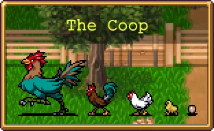 | |||||||||||||||||||||||||
공포 그 자체를 길러내는 농장. 이곳에서 사육된 짐승들은 협력의 치명적인 힘을 깨닫고, 맛있는 먹잇감에서 무시무시한 괴물로 변해버렸습니다. | |||||||||||||||||||||||||
BGM(유튜브 링크) | |||||||||||||||||||||||||
스테이지 구성 | |||||||||||||||||||||||||
| |||||||||||||||||||||||||
v1.13에 추가된 보너스 스테이지. 1분마다 우측의 울타리가 파괴되고 우측으로 이동할 수 있게 된다. 유물을 획득하지 않은 상태라면 갈수록 게임 속도가 점점 빨라지더니 나중엔 아예 광속이 된다. 맵 자체는 작은 다리처럼 양쪽에서만 적이 몰려오며, 대부분의 적은 고정 방향 스킬이 있어서 한쪽 방향에서 스폰되어 반대편 방향으로 달려가는 모습이 연출된다. 또한 대부분의 적을 화염 계열 무기로 처치하면 플로어 치킨이 된다. 불의 지팡이가 있는 게 일종의 복선이었던 셈.
- 스테이지 해금 조건: 치킨 500개를 습득해야 해금된다. 하이퍼 모드도 동시에 해금된다.
- 스테이지 구성
처음에는 웬 닭(병아리 보병대[72]) 1마리가 고속으로 뛰어다니는 걸 볼 수 있으며 타이머도 흐르지 않는데, 이 닭을 처치하면 그제야 타이머가 흐르기 시작하고 곧 수많은 닭이 몰려와 플레이어를 다굴한다.[73] 그 후 광란의 닭 러쉬가 시작된다.
상자는 아브락사스(초록색 닭)이 떨구지만 10분 이전엔 일반 상자뿐이고, 10분부터는 아브락사스 프로네시스(하얀 금발 닭)와 아브락사스 다이나미스(천사 헤일로가 있는 검은 닭)이 진화 상자를 떨군다. 그 외에도 8분과 18분에 등장하는 자폭형 폴로 로소(플로어 치킨과 외형이 동일)와 19분 압사 패턴[74]을 주의해야 하며 나머지 병아리와 달걀(에그 병기)은 별 존재감이 없는 꼽사리용 잡몹이다. 또한 물량은 많지만 경험치 보너스가 -65%로 시작하니 후반부터는 가인스 같이 성장 스탯이 성장하는 캐릭터가 아니라면 레벨업이 극도로 힘들어진다. 웨이브 목록 (펼치기 · 접기)
- 0분: 닭
- 1분: (왼쪽에서) 닭, 병아리, 수탉 중위, 에그 병기
- 2분: 닭, 병아리, 병아리 스웜(이벤트)
- 3분: 닭, 닭(고정 방향), 병아리, 거대 아브락사스(보스, 일반 상자)
- 4분: 수탉 중위, 병아리, 에그 병기, 닭 스웜(이벤트)
- 5분: 닭, 에그 병기, 수탉 중위(고정 방향), 닭 스웜(이벤트), 거대 아브락사스(보스, 일반 상자)
- 6분: 닭, 수탉 중위, 에그 병기(고정 방향), 병아리 스웜(이벤트), 거대 아브락사스(보스, 일반 상자)
- 7분: 닭, 수탉 중위, 에그 병기(고정 방향), 폴로 로소(고정 방향), 분홍 닭(보스, 아르카나 상자)
- 8분: 수탉 중위, 중위 병아리(고정 방향), 폴로 로소(자폭형), 닭 스웜(이벤트), 거대 아브락사스(보스, 일반 상자)
- 9분: 닭, 닭(고정 방향), 병아리 스웜(이벤트)
- 10분: 병아리(고정 방향), 에그 병기(고정 방향), 아브락사스, 닭 스웜(이벤트), 거대 아브락사스 프로네시스(보스, 진화 상자)
- 11분: 병아리, 아브락사스, 닭(고정 방향), 닭 스웜(이벤트)
- 12분: 수탉 중위, 플로어 치킨(고정 방향), 닭 스웜(이벤트), 거대 아브락사스 프로네시스(보스, 진화 상자)
- 13분: 닭, 아브락사스, 거대 아브락사스 프로네시스(보스, 진화 상자)
- 14분: 아브락사스(고정 방향), 수탉 중위, 분홍 닭(보스, 아르카나 상자)
- 15분: 수탉 중위, 닭(고정 방향), 아브락사스 프로네시스(1마리), 아브락사스 다이나미스(1마리) 거대 아브락사스 다이나미스(보스, 진화 상자)
- 16분: 아브락사스, 닭, 수탉 중위(고정 방향), 거대 아브락사스 프로네시스
- 17분: 수탉 중위, 아브락사스(고정 방향), 아브락사스 프로네시스(고정 방향), 닭 스웜(이벤트), 거대 아브락사스 다이나미스(보스, 진화 상자)
- 18분: 아브락사스, 아브락사스 프로네시스, 병아리 스웜(이벤트), 자폭형 폴로 로소 스웜(이벤트), 거대 아브락사스 다이나미스(보스, 진화 상자)
- 19분: 아브락사스(고정 방향), 아브락사스 프로네시스(고정 방향), 아브락사스 다이나미스(고정 방향),
- 스테이지 아이템
- (1분 이후부터 획득 가능) 파마산 보호구
- (5분 이후부터 획득 가능) 불의 지팡이
- 스테이지 유물
 가운데에 시계가 박힌 로스트 치킨
가운데에 시계가 박힌 로스트 치킨
스테이지 기믹 때문에 정확히 15분부터 얻을 수 있게 된다.
- 해금 요소
3.6. 스페이스 54
Space 54 | |||||||||||||||||||
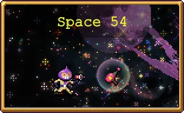 | |||||||||||||||||||
54번째 의식이 완료되었고, 우주는 무거운 이계의 의지에 짓눌려 스스로 접혀버렸습니다. 우주 평면 사이에 존재하는 이 장막은 차원이 어긋나 있어 예상치 못한 친구, 악몽 같은 적, 엄청난 혼돈의 힘이 잠재되어 있는 호기심이 단계적으로 출현합니다. | |||||||||||||||||||
BGM(유튜브 링크) | |||||||||||||||||||
스테이지 구성 | |||||||||||||||||||
| |||||||||||||||||||
v1.9에 추가된 보너스 스테이지. 화이트아웃과 구성이 비슷하다. 기본적으로 격자 형태의 맵이지만, 11분에 도달하면 모든 지형이 사라져 자유롭게 이동할 수 있게 된다. 11분 이전까지는 적 스폰이 특정 지점을 제외하면 잘 안 된다.
- 스테이지 해금 조건: 골드 핑거 누적 5번 발견, 하이퍼 모드는 스테이지와 함께 해금된다.
- 스테이지 구성
특정 시간대에는 큐브 형태의 적 '시니스트론즈'가 나오며, 파괴하면 광원 아이템을 떨어트린다. 18분과 19분 웨이브에도 몰려오는데, 이쪽도 파괴하면 광원 아이템을 떨어트린다. 치킨을 봉인해두지 않은 이상 계속 치킨이 나오므로 죽을 일은 딱히 없다.
아르카나 상자는 6분, 11분에 나오며 진화 상자는 8분 이후부터 등장한다. DLC 4 발매 기준으로 모든 스테이지 중 진화 기회가 가장 적다. 맵에 골드 핑거가 2개 있어 이론적으로는 이를 통해 진화 상자를 빨리 얻을 수는 있는데, 실제로는 11분 전에는 골드 핑거가 있는 위치의 적 스폰이 잘 안 되고, 11분 후에는 킬수 컷이 너무 높아져서 빌드업과 관계없이 악마 손가락 이상을 달성하는 게 거의 불가능하다. 그냥 진화 의존도가 낮은 빌드를 짜는 것이 좋다. 웨이브 목록 (펼치기 · 접기)
- 1분: 달 오리, 달 오리 스웜(이벤트)
달 오리는 플레이어를 추적하지 않고 좌우로 행단한다. - 2분: 머스크 머스크, 대형 머스크 머스크, 우주 피클, 갈라 인베이더(이벤트), 거대 ECMA 슬라임(보스)
보스 슬라임은 죽으면 작은 슬라임으로 분열한다. 이하 동일. - 3분: 머스크 머스크, 대형 머스크 머스크, 우주 피클, 갈라 인베이더(이벤트)
- 4분: 달 오리, 달 토끼, 달 오리 스웜(이벤트), 달 토끼 스웜(이벤트)
달 토끼는 달 오리와 마찬가지로 좌우만 횡단한다. - 5분: 대형 머스크 머스크, 우주 피클, 메두사 스웜(이벤트), 거대 ECMA 슬라임(보스)
- 6분: 머스크 머스크, 대형 머스크 머스크, 우주 개미, 횡단 큐브(이벤트), 거대 ECMA 슬라임(아르카나)
큐브는 메두사 헤드와 비슷한 궤도로 좌우로 횡단한다. - 7분: 대형 머스크 머스크, 우주 개미, 횡단 큐브(이벤트)
- 8분: 우주 개미, 뇌 우주 개미, 포물선 큐브(이벤트), 거대 ECMA 슬라임(보스, 진화1)
이 이벤트의 큐브는 도끼처럼 포물선을 그리며 움직인다. - 9분: 우주 개미, 뇌 우주 개미, 대형 머스크 머스크, 포물선 큐브(이벤트)
- 10분: 작은 ECMA 슬라임, 스페이스 인베이더(이벤트)
- 11분: ECMA 슬라임, 거대 ECMA 슬라임(아르카나)
- 12분: 거대 ECMA 슬라임
- 13분: 우주 개미, 뇌 우주 개미, 우주 피클, 대형 머스크 머스크
- 14분: 우주 개미, 뇌 우주 개미, 우주 피클
- 15분: 갈라 인베이더, 큐브 미로(이벤트)
진화 3번까지 가능하게끔 설정된 보물상자가 있지만, 정작 드롭하는 보스가 없어서 안 나온다. - 16분: 작은 ECMA 슬라임, ECMA 슬라임, 거대 ECMA 슬라임
- 17분: 거대 ECMA 슬라임, 거대 ECMA 슬라임(보스, 진화5)
- 18분: 큐브
- 19분: 큐브
- 20분 이후: 큐브
- 스테이지 유물
 용감한 이야기
용감한 이야기
18분에 생성된다. 한국어판에서는 스테이지 이름 스페이스 54와 헷갈렸는지 18분 54초에 생성된다고 오역되어 있다. 이동속도가 느린 캐릭터라면 19분부터 획득하기는 빠듯할 수 있으니 18분부터 움직여야 한다.
- 해금 요소
- 20분 생존
우주 친구 캐릭터 해금 - 스페이스 데트 캐릭터 해금
[비밀] 우주의 한계를 빠르게 격파하고 사랑을 찾으세요. {해금조건 펼치기 * 접기}
우주친구를 해금하고 난 뒤 스테이지 시작부분에서 오른쪽 아래로 가다 보면 외딴 좁은 섬에 큰 붉은 하트가 있는데, 이 하트에 접근하면 해금된다. 허나 이 섬으로 통하는 길이 없으므로 이동속도가 매우 빠르면 벽을 뚫을 수 있는 것을 이용해 붉은 죽음의 가면이나 강력한 멘야 문스펠등을 이용해 해금할 수 있다. 아니면 그냥 벽을 무시하는 교룬틴, 또는 수호자 피나, 유령 리노를 이용해 해금해도 된다. 11분에 모든 지형이 사라질 때 하트도 함께 사라진다.

3.7. 카를로 카트
Carlo Cart | ||||||||||||||||||||||
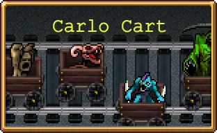 | ||||||||||||||||||||||
한때 지하에 있는 기차역, "성경"으로 알려진 터널입니다. 지금은 실험실 밑에서 도마뱀 사나이 킹 카를로가 운영하는 혼란스럽고 비밀스러운 데다 믿을 수 없을 정도로 위험한 고카트 경주가 열립니다. | ||||||||||||||||||||||
BGM(유튜브 링크) | ||||||||||||||||||||||
스테이지 구성 | ||||||||||||||||||||||
| ||||||||||||||||||||||
2.0에 추가된 보너스 스테이지. 기믹이 골 때리기로는 한 손가락 안에 들어가는 스테이지로, 캐릭터와 적은 카트를 타고 달리고 있고[76] 상인도 레일 상단에서 두 다리로 달리고 있다.
- 스테이지 해금 조건: 실험실 스테이지에서 기차로 25,120의 누적 피해를 입혀야 한다. 하이퍼 모드는 스테이지와 함께 해금된다.
- 스테이지 구성
진행 방향 반대편으로 이동하는 것은 기본적으로 불가능하며, 이동속도가 엄청 높지 않는 한 그냥 감속될 뿐이다. 또한 아이템과 광원은 전부 뒤에 남겨져 한 번 놓치면 얻을 수 없다. 상자는 계속 가다 보면 루프되어 전방에 생성되기는 하지만, 놓치면 또 한동안 손가락만 빨아야 하므로 진화 의존도가 높은 무기나 빌드는 피하는 것이 좋고, 매혹구도 필수로 챙겨둬야 하며 광기의 그루브는 오히려 상자를 먹기 힘들게 하므로 빼는 게 좋다. 이렇게까지 해도 뱀서 특유의 시인성 문제 때문에 후반에는 상자를 먹는 게 거의 불가능하므로 최대한 진화 의존도가 낮은 빌드를 짜는 것이 좋다.
전용 필드 아이템으로 부스터가 등장하는데, 자석의 영향을 받지 않으며 입수하면 잠시간 스크롤 속도가 빨라진다.
일정 간격으로 결승점이 나오며, 통과할 때마다 환호와 함께 이동속도, 행운, 성장, 탐욕, 저주 5% 보너스를 얻는다. 아르카나 상자는 5분과 10분에 드롭된다.
우유 공장에 나오는 적들이 주로 등장하며, 일정 시간마다 사신이 카트를 타고 나와 1분 동안 플레이어를 추적한다. 고유 패턴은 없고 전부 스토커처럼 속도를 바꾸며 따라다니며, 묵주나 오망성 등으로 처리하면 진화 상자를 드롭한다. 14분에 도달하면 네 사신이 한꺼번에 튀어나온다.
이 스테이지는 로스트 치킨 유물을 가지고 있어도 배속모드 설정이 불가능하다. 웨이브 목록 (펼치기 · 접기)
- 0분: 카트 머맨
- 1분: 박쥐, 카트 머맨, 카트 리자드맨(보스, 진화1)
- 2분: 카트 머맨, 카트 리자드맨, 레트로봇(보스, 상자x), 카트 트릭스터(이벤트)
- 3분: 카트 리자드맨, 카트 임프, 카트 머맨, 카트 미노타우로스(보스, 진화1)
- 4분: 카트 리자드맨, 카트 임프, 카트 머맨
- 5분: 카트 리자드맨, 박쥐, 카트 미노타우로스(보스, 진화1), 오라 박쥐(아르카나)
- 6분: 카트 머맨, 카트 리자드맨
- 7분: 카트 머맨, 카트 붉은 머맨, 카트 리자드맨, 카트 거대 머맨(보스, 진화1)
- 8분: 레트로봇, 박쥐, 카트 스토커(이벤트)
- 9분: 거대 박쥐, 박쥐, 레트로봇, 카트 미노타우로스(보스, 진화1), 카트 드라우너(이벤트)
- 10분: 사자 머리, 박쥐, 카트 미노타우로스(보스, 진화3), 오라 박쥐(아르카나), 카트 매드너(이벤트)
- 11분: 거대 박쥐, 박쥐, 사자 머리, 카트 블라인더(이벤트)
- 12분: 레트로봇, 카트 해골탑, 카트 거대 해골탑(보스, 진화1)
- 13분: 카트 머맨, 카트 리자드맨, 카트 해골탑
- 14분: 임프, 카트 거대 해골탑, 카트 트릭스터(이벤트), 카트 스토커(이벤트), 카트 드라우너(이벤트), 카트 매드너(이벤트)
- 스테이지 아이템
없음 - 해금 요소
- 교룬틴 캐릭터 해금
[비밀] 카를로 카트에서 관광하려면 승리를 포기하세요. {해금 조건 펼치기 * 접기}
진행 방향의 반대로 쭉 가려고 하다 보면 교룬톤과 관이 나오는데 교룬톤을 모두 쓰러트리고 관을 열면 된다.
4. 챌린지 스테이지
4.1. 푸른 초원
Green Acres | ||||||||||||||||||||||
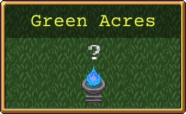 | ||||||||||||||||||||||
이 곳은 필멸자에게 허락된 곳이 아닙니다. 운명은 언제든지 바뀔 수 있습니다. | ||||||||||||||||||||||
Fate changes by the minute in a realm where mortals can only trespass. What rewards wait those who challenge its rules? Treasure? Glory? Poultry? | ||||||||||||||||||||||
BGM(유튜브 링크) | ||||||||||||||||||||||
스테이지 구성 | ||||||||||||||||||||||
| ||||||||||||||||||||||
v0.2.10에서 추가된 챌린지 스테이지. 스테이지 구성은 변경전 아무런 장애물도 스테이지 아이템도 없는 허허벌판의 광기의 숲과 같다.
- 스테이지 해금 조건: 다섯 메인 스테이지 중 2개의 하이퍼 모드 해금, 하이퍼 모드는 스테이지와 함께 해금된다.
- 스테이지 구성
자체 웨이브는 없고 본편의 메인 스테이지인 광기의 숲, 화려한 도서관, 유제품 공장, 갈로의 탑, 마그나 예배당 중 하나의 웨이브를 매 분마다 무작위하게 복사해온다. 물론 시간대도 맞춰서 등장하며, 집착의 사신이나 슈팅 스타 등의 기믹이 있는 웨이브라면 해당 기믹도 함께 발생한다. 상자 역시 해당하는 스테이지의 규칙을 따르며, 광기의 숲의 1분 웨이브나 유제품 공장과 마그나 예배당의 모든 웨이브의 보스는 10분 전에도 진화 상자를 드롭한다
본편 스테이지보다 적의 체력이 1.5배 더 많기에 잘 안 죽는다. 그보다 진짜 문제는 스테이지의 기믹에서 오는 극심한 복불복이다. 10분 전에 보스가 나오는 웨이브만 되면 칼같이 숲과 도서관, 탑의 웨이브만 나오지를 않나, 10분 이후에도 보스가 나오는 웨이브만 되면 상자를 잘 안 떨구는 숲의 웨이브로 고정되기도 하고, 21분부터 25분까지 내내 쓰레기 같은 광기의 숲의 식인꽃만 몰려오기도 한다. 29분에는 악명 높은 공장과 탑의 웨이브가 걸리는 상황도 자주 터진다. 전체적으로 플레이어의 운에 따라 난이도가 심하게 요동친다. - 스테이지 유물
- 해금 요소

4.2. 뼈의 대지
The Bone Zone | |||||||||||||||||||||||||
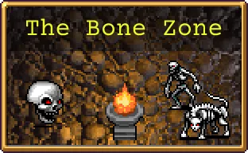 | |||||||||||||||||||||||||
이 불길한 장소에 당신의 저주받은 기도를 바치세요. | |||||||||||||||||||||||||
Calcified carnage awaits where the dead go to live. If we speak unholy vespers we will open the way, but should we not go home? Have we not dug too deep? | |||||||||||||||||||||||||
BGM(유튜브 링크) | |||||||||||||||||||||||||
스테이지 구성 | |||||||||||||||||||||||||
| |||||||||||||||||||||||||
v0.5.103(22년 4월)에서 추가된 챌린지 스테이지. 바닥이고 몹이고 전부 해골만 나오며 으스스한 bgm[81]이 흐르는 섬뜩한 분위기의 스테이지이다. 처음 번역명이 아즈텍 제국의 촘판틀리(Tzompantli)였으나 대중적이지 않다는 이유로 뼈의 대지로 변경되었다.
- 스테이지 해금 조건: 5개의 메인 스테이지 중 3개의 하이퍼 모드 해금, 하이퍼 모드는 스테이지와 함께 해금된다.
- 스테이지 구성
화로에서 골드를 제외한 아이템이 일체 나오지 않으며, 시간 흐름에 따라 적이 점점 더 강해진다는 특징이 있기 때문에 아이템 드롭을 통해 이득을 보는 행운의 가치가 줄어들게 된다. 무기 진화도 다른 통상 맵들처럼 10분부터 가능하다. 치킨을 통한 회복이 불가능하기 때문에 따로 회복템을 챙기거나 황금 디스코로 금을 먹어서 체력을 회복해야 한다.
또한 시간이 지날수록 적의 능력치가 증가하며, 캐릭터의 저주 능력치와 중첩되기 때문에 기본 저주를 최대로 적용한 상태라면 이동속도가 느린 캐릭터들[82]의 경우 약 10분대쯤부터 몬스터의 이동속도가 캐릭터의 이동속도보다 빨라지기 시작하며[83], 후반부에 들면 엄청난 속도와 체력을 자랑하는 몬스터웨이브가 계속 발생하는 높은 난이도를 자랑하게 된다.
드롭 아이템이 골드만 나온다는 점에 착안하여 황금 디스코를 사용한 채굴 빌드도 유용하게 쓰이는데, 다른 맵들에 비해 월등한 골드 피버로 노에그 기준 판당 골드 십만단위 이상을 벌어들이며 골드 피버를 통한 회복과 치유의 사라반드를 통한 회복 증폭+추가 대미지 효과로 살아남는 테크트리를 써먹을 수 있다. 딜 빌드에 비해 오히려 클리어가 더 쉽다는 장점도 있다.
클리어에 있어 큰 난관은 10분의 '스토커'(녹색 사신/Stalker)와 26분 이후에 등장하는 더욱 강력해진 대량의 몬스터 웨이브가 손꼽힌다. 10분에 등장하는 '스토커'의 경우 하이퍼 모드에서는 날개를 먹더라도 완전히 떨쳐버리지는 못하는 데다 진화 무기도 없기 때문에 오망성을 이용하여 쫓아내거나[84] 아니면 다른 몹들을 사이에 끼워 가로막아서 가까이 오지 못하게 막고 그것도 안 되면 스토커를 위에 두고 아래로 계속 이동하면 가까이 붙었을 때 직전에 멈추는 점을 이용하면 살 수 있다. 11분까지 버티면 스토커가 칼퇴근하므로 1분만 버티면 된다. 만약 뼈의 대지 스테이지에서 토스티 캐릭터 해금을 하려면 10분 전에 슈퍼 사탕상자를 얻어 매혹의 달을 뽑거나, 아니면 사신도 공격할 수 있는 승리의 검으로 직접 스토커를 처치하면 된다. 슈퍼 사탕상자나 승리의 검이 없더라도 오망성으로 10분 스토커를 쫓아내고 10분 이후에 매혹의 달로 진화하여 20분에 맵 하단에서 등장하는 드라우너를 처치할 수도 있다.
스토커 외에 난이도가 있는 몬스터 웨이브는 먼저 체력x레벨 스킬을 가지고 있는 Skullone(빅 스컬)인데 특히 저주가 매우 높거나 스테이지 모드로 난이도를 높일 경우 어지간한 무기로도 잘 죽지 않아 킬과 경험치를 밀리게 만드는 주범이 된다. Skullone는 6분에 처음 등장한 다음 12분부터 20까지 계속 등장하기 때문에 이를 대비하여 고화력 무기를 빠르게 마련하는 것이 도움이 된다. 또한 24~25분의 Skelewing(날개 해골) 웨이브 또한 뼈의 대지의 페널티 덕분에 이동속도가 매우 빨라서 무기의 공격범위를 뚫고 들어와 캐릭터에게 부딪혀 피해를 준다. 날개해골 러쉬에 제대로 대처하려면 영혼 포식자나 정화자 같은 캐릭터 주변을 막아주는 방어형태의 무기를 사용하는 것이 큰 도움이 된다. 마지막으로 26분 이후에 등장하는 Giant Skeleton(거인해골) 러쉬의 경우 몹들의 체력과 공격력 모두 상당히 높기 때문에 점점 쌓이는 몬스터떼들에게 압사당할 위험이 발생할 수도 있다. 전체적으로 얻을 수 있는 경험치도 일 몰리제마냥 적기 때문에 푸냘라, 콘체타 정도가 아니면 레벨당 능력치 증가 캐릭터는 효과를 크게 보기 어렵다. 몹이 강해서 잡기 힘들다는 점도 초중반 학살 무기를 이용한 스노우볼링을 어렵게 만든다. 15분만 되어도 마나의 노래, 번개 반지, 피에라지 같은 저데미지 무기는 잘 통하지 않는다. 따라서 뼈의 대지를 제대로 클리어하려면 생존형 무기나 아르카나를 반드시 하나 이상 사용하고, 나머지를 고화력 무기로 도배하여 페널티에 대비하는 것이 중요하다. 보스몹들이 '스토커', '드라우너' 포함 모두 즉사 내성이 없기 때문에 오망성/매혹의 달의 활용도가 높다.
V 0.10.103 패치로 굴러다니는 스켈레톤 덩어리인 덩어리 스켈레톤(Sketamari)가 등장한다.
이 적은 특이한 특수 능력을 보유하고 있다. 덩어리 스켈레톤에게 닿은 적은 즉사당하면서[85] 경험치, 보물 상자를 포함한 기타 아이템을 드랍하지 않으며, 이런 식으로 적을 처치할 때마다 대상을 "흡수"하여, 점점 충돌 크기와 피격 판정이 커지고 현재 체력을 회복하며 최대 체력도 점점 증가한다.[86] 또한 충돌 크기가 클수록 이동 속도도 느려지는 특성이 있다.성장을 천천히 해서 잡을 경우 가능하다면 무한 회랑을 들면 덩어리 스켈레톤을 좀 쉽게 잡을 수 있으며 1레벨에 엄청난 쿨타임 보너스를 받는 포르타+게임 킬러 아르카나 또는 근원 아르카나+암브로조 경 또는 고요한 옛 성역 아르카나+1무기런 등의 조합을 쓰거나 수많은 광역 공격 무기를 채용하여 아예 적들이 덩어리 스켈레톤 근처에 접근조차 못 하게 해서 덩어리 스켈레톤이 흡수할 적을 남기지 않는 전략도 있다.
상술했듯이 처치하면 금지된 모르베인의 두루마리 유물이 드랍되며 두루마리를 집은 후에도 덩어리 스켈레톤은 여전히 맵에 등장하여 굴러다닌다. 해금용 1회성 기믹이 아닌 뼈의 대지의 특색을 담당하는 적인 셈. 또한 반지와 메탈리오를 수호하는 아틀란티스인이 덩어리 스켈레톤에게 팀킬당하면 가면만 남는 버그가 있다.
DLC 4 캐릭터들의 공통 능력인 화로에서 전용 픽업 아이템 생성은 막히지 않는다. 이들 한정으로는 위대한 기념제의 밸류가 떨어지지 않는다. 웨이브 목록 (펼치기 · 접기)
- 0분: 두개골
- 1분: 두개골, 스켈레톤, 두개골 스웜(이벤트)
- 2분: 붉은 두개골, 스켈레톤, 두개골 스웜(이벤트)
- 3분: 스켈레톤, 두개골 스웜(이벤트), 발광 스켈레톤(보스)
- 4분: 스켈레톤, 스칼레톤, 두개골 스웜(이벤트)
- 5분: 스켈레톤, 흰 해골탑, 두개골 스웜(이벤트), 발광 스켈레톤(보스)
- 6분: 두개골, 거대 두개골, 두개골 스웜(이벤트)
- 7분: 스켈레톤, 붉은 해골탑, 두개골 스웜(이벤트)
- 8분: 스켈레톤, 스켈레톤 팬서, 두개골 스웜(이벤트), 발광 스켈레톤(보스)
- 9분: 스켈레톤, 두개골 스웜(이벤트)
- 10분: 스켈레톤, 스켈레톤 닌자, 거대 스켈레톤(보스, 진화1), 스토커(이벤트)
- 11분: 스켈레톤, 두개골, 오라 거대 두개골(아르카나)
- 12분: 거대 두개골, 흰 해골탑, 해골 스트림(이벤트)
- 13분: 거대 두개골, 스켈레톤 팬서, 해골 스트림(이벤트), 발광 스켈레톤(보스, 진화1)
- 14분: 거대 두개골, 해골 스트림(이벤트)
- 15분: 거대 두개골, 붉은 두개골, 해골 스트림(이벤트), 발광 스켈레톤(보스, 진화1)
- 16분: 거대 두개골, 스켈레톤 닌자, 해골 스트림(이벤트)
- 17분: 거대 두개골, 스켈레톤 팬서, 해골 스트림(이벤트), 발광 스켈레톤(보스, 진화1)
- 18분: 거대 두개골, 날개 스켈레톤, 해골 스트림(이벤트)
- 19분: 거대 두개골, 해골 스트림(이벤트), 발광 스켈레톤(보스, 진화1)
- 20분: 거대 두개골, 거대 스켈레톤(보스, 진화3), 드라우너(이벤트)
- 21분: 스켈레톤, 스켈레톤 닌자, 오라 거대 두개골(이벤트)
- 22분: 스칼레톤, 붉은 두개골, 전갈 둥지(이벤트)
- 23분: 짝 없는 해골탑, 스칼레톤, 발광 스켈레톤(보스, 진화1)
- 24분: 스칼레톤, 날개 스켈레톤, 전갈 둥지(이벤트)
- 25분: 날개 스켈레톤, 스켈레톤 닌자, 발광 스켈레톤(보스, 진화1)
- 26분: 거대 스켈레톤, 전갈 둥지(이벤트)
- 27분: 거대 스켈레톤, 두개골, 발광 스켈레톤(보스, 진화1)
- 28분: 거대 스켈레톤, 발광 스켈레톤(보스, 진화1)
- 29분: 스켈레톤이
- 스테이지 유물
- 해금 요소
- 가인스 보로스 캐릭터 해금
[비밀] 뼈의 대지에서 꽃이 피어나는 유일한 장소를 찾으세요. {해금 조건 펼치기 * 접기}
스테이지 시작 지점의 상단으로 가면 회전하는 꽃이 있으며, 들어가서 가만히 있다 보면 해금된다.

4.3. 보스 래쉬
Boss Rash | |||||||||||||||||||
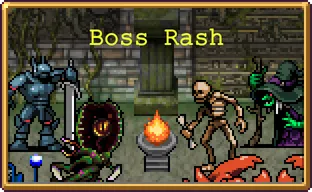 | |||||||||||||||||||
"귀빈 여러분, 우리 모두가 고대해왔던 순간이 드디어 왔습니다! 생존자들이 다시 나타난 적들에게 도전하는 모습을 지켜보죠!" | |||||||||||||||||||
The monsters want entertainment, and if we win their game, the loot is ours for the taking. Let us face these recycled assets and do what we do best... survive! | |||||||||||||||||||
BGM(유튜브 링크) | |||||||||||||||||||
스테이지 구성 | |||||||||||||||||||
| |||||||||||||||||||
v0.9로 추가된 세 번째 챌린지 스테이지. 설명대로 재사용된 보스와 연전을 펼치는 스테이지다.
- 스테이지 해금 조건: 5개의 메인 스테이지의 하이퍼 모드를 전부 해금, 하이퍼 모드는 스테이지와 함께 해금된다.
- 스테이지 구성
제한된 맵 구역 안에서 모든 스테이지에 등장했던 보스들이 순차적으로 등장하며, 1분이 지날 때마다 적의 체력이 증가한다. 맵 구성과 보스가 순차적으로 나오는 것이 마치 몬스터 투기장과 같은 모습이다. 붉은 사신을 제외한 사신 4형제도 등장하고, 심지어 융합 사신인 엔더도 등장한다. 다른 스테이지와 달리 마그나 예배당처럼 일반 무기로도 사신을 직접 공격할 수 있고 기본적으로 사신들의 이동속도가 느리게 설정되어 있기 때문에 잡는 것은 문제가 아니다.
만약 보스 래쉬에서 토스티를 해금하려면 일반 공격으로 드라우너, 스토커, 트릭스터를 순차적으로 처치하는 것으로는 안 되고 묵주나 매혹의 달을 이용해 세 마리 사신을 한꺼번에 처치해야만 인정된다. 광원에서 묵주를 뽑고 대기하거나, 10분에 등장하는 아르카나 보물상자로 광기의 그루브를 먹어 맵 바깥에 100% 생성되어 있는 묵주를 끌고 오면 된다. 그리고 11분에 사신 4형제가 등장한 뒤에 끌고 온 묵주를 먹고 사신들을 동시에 처치하면 토스티 해금조건을 만족할 수 있다.
9분 30초까지 매 30초마다 맵에 두 개의 발판이 생성되는데, 모래시계 그림이 그려진 푸른색 발판은 곧바로 다음 웨이브 시작 시간으로 시간을 빠르게 돌린다. 해골 그림이 그려진 붉은색 발판은 현재 웨이브의 보스를 한 번 더 생성한다. 두 발판 모두 밟지 않으면 30초 후 사라진다.
스테이지 아이템으로 토로나의 상자를 제외한 모든 장신구가 등장하지만, 맵 구역 바깥으로 벗어날 수 없기 때문에 획득할 수는 없다. 대신 광기의 그루브 아르카나를 사용하면 모든 장신구가 끌려오기에 모두 획득할 수 있다. 하지만 보스 투기장과 같은 성격의 맵이기 때문에 레벨업용 잡몹이 거의 나오지 않아 레벨링이 부족한 편이므로 꼭 필요한 장신구만 선택해서 먹어야 한다. charm 파워업을 해금했다면 다른 맵들처럼 잡몹이 쏟아지므로 레벨링이 좀 쉬워진다. 웨이브 목록 (펼치기 · 접기)
- 0분: 박쥐, 거대 거대 박쥐(보스), 거대 거대한 미라(보스)
- 1분: 박쥐, 박쥐 스웜(이벤트), 늑대인간(보스, 진화1), 거대 늑대인간(보스), 거대 사마귀(보스), 거대 푸른 비너스(보스)
거대 늑대인간은 체력이 1만으로 매우 높다. 유제품 공장의 치즈 이벤트와 동일한 개체이다. - 2분: 먼지 정령, 거대 머스크 머스크(보스, 진화1), 거대 먼지 정령(보스), 거대 사자 머리(보스)
- 3분: 메두사 헤드, 거대 메두사(보스, 진화1), 거대 메두사 헤드(보스), 거대 마녀(보스), 네스페리트(보스)
- 4분: 메두사 헤드, 두개골 스웜(이벤트), 해그(보스, 진화1), 거대 서큐버스(보스), 거대 대악마(보스)
- 5분: 스켈레톤, 유령 스웜(이벤트) 거대 두개골(보스, 진화1), 거대 스켈레톤(보스), 파란 거대 용 새우(보스), 하얀 거대 용 새우(보스), 거대 해골탑(아르카나)
- 6분: 하피, 거대 하피(보스), 거대 코카트리스(보스), 거대 팬서(보스, 진화1), 거대 만티코어(보스)
- 7분: 우유 정령, 해파리 스웜(이벤트), 거대 미노타우로스(보스, 진화1), 거대 머맨(보스), 거대 트리톤(보스), 자이언트 에너미 크랩(보스), 달빛 자이언트 에너미 크랩(보스)
- 8분: 소드 가디언, 드래곤 스웜(이벤트) , 거대 아콘 악시아(보스, 진화1), 거대 소드 가디언(보스), 거대 아콘 스페이다(보스), 거대 아콘 디스코(보스), 거대 아콘 레임(보스)
- 9분: 미지의 존재, 거대 나이트셰이드(보스, 진화1), 거대 마늘, 거대 트리나크리아(보스), 거대 미지의 존재(보스)
- 10분: 엔더(보스, 진화1), 수습 사신(아르카나)
- 11분: 박쥐, 스토커(보스, 진화1), 드라우너(보스), 트릭스터(보스), 매드너(보스)
스토커만 엄청나게 단단하다. - 12분: 거대 철 골렘, 거대 청동 골렘, 거대 철 골렘(보스), 거대 청동 골렘(보스, 진화1)
- 13분: 박쥐, 미믹(보스)
- 14분: 트라이 앵커스, 거대 트라이 앵커스(보스, 진화1)
- 스테이지 유물
 아틀라스 게이트
아틀라스 게이트
7분에 생성된다.
- 해금 요소
- 여담
0.9버전까지 최종 보스라고 여겨지는 융합 사신 '엔더'까지 포함하여 모든 보스전을 치르는데[96], 원문에서는 이들을 recycled assets, 즉 재활용 에셋쯤으로 여기고 있다. 최종보스인 The Directer가 게임 제작자인 탓인지 그냥 에셋 취급인 것이다...
4.4. 실험실
Laborratory | ||||||||||||||||||||||
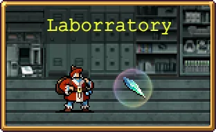 | ||||||||||||||||||||||
과거에는 아주 유명한 안티 뱀파이어 무기공학자, 산타 라돈나가 장신구를 수 없이 많이 만들어 내던 주조 공장이었습니다. 지금은 버려진 채 방치되어 있는 실험실에 불과하죠. 실험용 연금술로 절대 열지 말아야 할 문을 열자마자 산타가 이 실험용 작업장에서 도망쳤다는 속삭임이 울려 퍼집니다. | ||||||||||||||||||||||
BGM(유튜브 링크) | ||||||||||||||||||||||
스테이지 구성 | ||||||||||||||||||||||
| ||||||||||||||||||||||
2.0 패치로 추가된 챌린지 스테이지. 분류는 챌린지지만 실상은 화이트아웃과 비슷한 보너스 스테이지에 가깝다. 난이도도 낮은 편이고.
- 스테이지 해금 조건: 묵주 누적 33개 발견, 하이퍼 모드는 스테이지와 함께 해금된다.
- 스테이지 구성
좁고 구불구불한 복도와 이어진 방, 하단의 레일로 구성되어 있는 스테이지로 레일과 방에 레버가 위치해 있다. 레일 하단의 레버와 접촉하면 열차가 지나가며 닿는 적에게 큰 피해를 준다.
함정 발판이 매우 많으며, 밟으면 해파리나 로봇 스웜, 원거리 공격을 하는 현상금 사냥꾼, T-DCCC, 순경 로봇이 스폰되거나 머스크 머스크 무리가 등장한다.
방 안의 레버와 접촉하면 스테이지 아이템이나 광원 아이템을 생성한다. 레버는 일정 시간 후 재생성되지만 한 번 스테이지 아이템이 나온 레버는 오로지 광원 아이템만 뱉는다. 또한 스테이지 아이템은 입수하지 않고 버리면 다시 생성될 수 있다. 일일이 레버를 찾아가 당겨서 얻어야 하므로 이동속도가 빠르거나 지형을 무시하는 캐릭터가 유리하다. 같은 패치로 나온 신규 캐릭터인 교룬틴으로 재미 보기 좋다.
챌린지 스테이지 중에서는 이례적으로 1분부터 진화 상자가 나오고, 레버에서 묵주나 클로버가 잘 뜨기 때문에 난이도는 낮은 축에 든다. 다만 준비가 안 됐을 경우 19분 거대 트라이 블런더 웨이브는 전형적인 압사 패턴이므로 방어 무기 또는 생존 관련이 없다면 여기서 죽는다. 웨이브 목록 (펼치기 · 접기)
- 0분: 머맨, 칼잡이 머맨
- 1분: 머맨, 순경 로봇 스웜(이벤트), 먼지 엘리멘탈 스웜(이벤트), 거대 칼잡이 머맨(보스, 진화1)
순경 로봇은 로보캅의 패러디다. - 2분: 머맨, 리자드맨, 칼잡이 머맨, 먼지 엘리멘탈 스웜(이벤트)
- 3분: 리자드맨, 먼지 엘리멘탈 , 머맨, 해파리 포위(이벤트), 트라이 블런더(보스, 진화1)
- 5분: 리자드맨, 먼지 엘리멘탈 , 순경 로봇 포위(이벤트), 트라이 블런더(보스, 진화1) ER-2000(사격, 아르카나)
ER-2000은 ED-209의 패러디다. - 6분: 칼잡이 머맨, 리자드맨, 먼지 엘리멘탈 스웜(이벤트)
- 7분: 빨간 머맨, 리자드맨, 머맨, 해파리 포위(이벤트), 거대 칼잡이 머맨(보스, 진화1)
- 8분: 현상금 사냥꾼, 거대 워커, 먼지 엘리멘탈 , 머스크 머스크 스웜
- 9분: 순경 로봇, 먼지 엘리멘탈 , 레트로봇 스웜(이벤트), 거대 칼잡이 머맨(보스, 진화1)
레트로봇은 조니 5 파괴 작전(Short circuit) 영화에서 등장하는 주인공 로봇인 https://robots.fandom.com/wiki/Number_%22Johnny%22_Five|넘버 5의 패러디다. - 10분: 순경 로봇, 레트로봇 스웜(이벤트), 현상금 사냥꾼 스웜(이벤트), 거대 워커(사격, 아르카나)
- 11분: 현상금 사냥꾼, T-DCCC, 트라이 블런더 스웜(이벤트), 거대 미노타우로스(보스, 진화3)
- 12분: 현상금 사냥꾼, 칼잡이 머맨, 현상금 사냥꾼 포위(이벤트), 트라이 블런더 스웜(이벤트), 거대 해골탑(보스, 진화1)
- 13분: 칼잡이 머맨, 리자드맨
- 14분: 레트로봇, 칼잡이 머맨
- 15분: 레트로봇, 스페이스 사냥꾼
스페이스 사냥꾼은 프레데터의 패러디다. - 16분: 레트로봇, 거대 워커(보스, 진화1)
- 17분: 스페이스 사냥꾼, 트라이 블런더
- 18분: 스페이스 사냥꾼, 트라이 블런더, 해파리 포위(이벤트), 거대 트라이 블런더(보스, 진화1)
- 19분: 거대 트라이 블런더, 해파리 스웜(이벤트)
- 해금 요소
- 여담
- 스테이지명은 당연히 La Borra와 Laboratory의 말장난이다.
- 데이터의 스테이지 설명문은 Taken over by dark forces controlled by a corrupted milk magician, this is the lab where famous alchemist Santa Ladonna developed many weapons. Maybe part of her legacy still lies hidden between the dangerous walls.로 게임에 사용되는 설명문과 많이 다르다.


4.5. 웨스트우드
Westwoods | |||||||||||||||||||
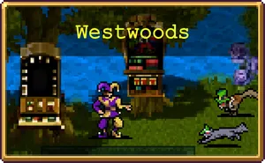 | |||||||||||||||||||
탐욕이 녹색으로 변했습니다. 아르케인의 탐욕이 한때 고요했던 숲을 피튀기는 도박장으로 바꾸고 있습니다. 모험을 두려워할 뱀파이어가 될 필요가 없는 쿠르지노에 온 것을 환영합니다. | |||||||||||||||||||
BGM(유튜브 링크) | |||||||||||||||||||
스테이지 구성 | |||||||||||||||||||
| |||||||||||||||||||
카지노 컨셉의 스테이지다. 맵 컨셉은 초반에는 평범한 숲이나, 진행할수록 슬롯머신이나 룰렛 등 도박기기가 점점 늘어나며 끝내는 완벽한 카지노로 바뀐다.
- 스테이지 해금 조건: 작은 클로버 누적 15개 발견. 하이퍼 모드는 스테이지와 함께 해금된다.
- 스테이지 기믹
기본 모드 기준으로 우측에서 좌측으로 진행하게 된다. 그러나 시작 시에는 진행 방향이 간섭할 수 없는 벽으로 막혀 있다. 벽 통과로 넘어가는 것도 아르카나 등으로 너머에 있는 아이템을 끌어오는 것도 불가능하다.
벽을 넘어갈 수 있는 방법은 오로지 상인인 파란 옷의 출라레에게서 룰렛을 돌려 입장 권한인 "성공하셨나요?"를 따내는 것뿐이다. 룰렛은 회당 99골드에 돌릴 수 있다. 5회(499), 10회(999) 연속으로 돌리는 것도 가능하지만 할인 같은 게 붙지는 않는다. 룰렛은 입장 권한 이외에도 골드 주머니, 골드 테마 , 스퀼러 스웜 등의 적 웨이브 호출을 발동시킨다.[101]
맵을 전부 뚫기 위해서는 입장 권한을 2번 따내야 한다.
이외에는 입수시 레벨업 선택지 새로고침을 1회 늘려주는 Rerollo와 작은 클로버가 많이 널려 있다. 또한 함정 발판도 있는데 밟으면 룰렛과 똑같은 효과가 나온다.
이 스테이지의 적들 대부분은 포스카리 DLC의 적들의 그래픽을 재활용한 것이다. 기아볼로나 하피는 기존 게임의 몹이고 도감엔 안 실리는 카지노 구울이나 변종 노아담, 스페이드 기사, 룰렛으로 나오는 적들도 마찬가지이다. 배경 텍스처 옵션도 포스카리 쪽으로 설정되어 있다. 웨이브 목록 (펼치기 · 접기)
- 0분: 바름, 스퀼러, 보석 포위(이벤트)
- 1분: 바름, 변종 노아담(EX_CLUBBIE로 되어 있음), 댄디브라인(보스, 진화 상자)
- 2분: 바름, 하피, 스퀼러, 스퀼러 스웜(이벤트)
- 3분: 바름, 댄디브라인(보스, 진화 상자)
- 4분: 하피, 변종 노아담, 금화 해골탑(이벤트), 보석 포위(이벤트)
- 5분: 갬블린, 바름, 머쉬룰렛(보스, 아르카나 상자), 댄디브라인(보스, 진화 상자)
- 6분: 갬블린, 바름, 스퀼러(이벤트), 보석 포위(이벤트)
- 7분: 기아볼로, 카지노 구울, 다이몬(보스, 진화 상자)
- 8분: 하피, 갬블린, 스퀼러
- 9분: 갬배르가르, 갬블린, 다이몬(보스, 진화 상자), 스퀼러(이벤트), 보석 포위(이벤트)
- 10분: 톨, 카드 샤프, 노움, 거대 버섯맨(보스, 아르카나 상자)
- 11분: 하피, 갬배르가르, 갬블린, 다이몬(보스, 진화 상자)
- 12분: 톨, 카지노 구울, 다이몬(보스, 진화 상자), 금화 해골탑(이벤트), 스퀼러(이벤트), 보석 포위(이벤트)
- 13분: 카드 샤프, 갬블린, 갬배르가르
- 14분: 톨
- 15분: 갬블린, 카지노 구울, 갬배르가르, 스퀼러(이벤트)
- 16분: 카지노 구울, 기아볼로, 스페이드 기사(보스, 진화 상자, 2마리가 나오지만 1마리만 상자를 떨굼)
- 17분: 댄디브라인, 갬배르가르, 스퀼러
- 18분: 댄디브라인, 다이몬, 갬배르가르, 발렌타인(보스, 진화 상자)
- 19분: 발렌타인, 기아볼로, 스퀼러
- 스테이지 유물
 가장무도회
가장무도회
지역 최심부에 놓여 있다. 접근 시 광대 다수가 튀어나와 수호한다.
- 해금 요소
- 20분 생존
출라레 캐릭터 해금


4.6. 박쥐 나라
Bat Country | ||||||||||||||||||||||
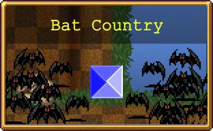 | ||||||||||||||||||||||
우리는 여기서 멈출 수 없습니다. | ||||||||||||||||||||||
BGM(유튜브 링크) | ||||||||||||||||||||||
스테이지 구성 | ||||||||||||||||||||||
| ||||||||||||||||||||||
v1.3.1에서 추가된 스테이지. 박쥐와 보석만 징그럽게 나온다.
- 스테이지 해금 조건: 아무 캐릭터로 반전 모드 광기의 숲에서 레벨 80에 도달, 하이퍼 모드는 스테이지와 함께 해금된다.
- 스테이지 구성
지형이 꽤 복잡하고 허공도 많지만 전부 장식으로, 실상은 전부 허허벌판으로 장애물조차 하나 없다. 모든 웨이브가 물량전으로 구성되어 있으며, 대신 경험치 페널티가 커서 초반만 지나가도 레벨링이 잘 안 된다. 골드 획득량 페널티는 따로 없으므로 초반만 잘 넘기면 황금 디스코로 상당한 돈을 벌어들일 수 있다. 특히 고유한 경험치 시스템을 사용하는 DLC 2의 새미로 재미 보기가 좋다.
보석은 일정 횟수 공격하면 파괴되며 높은 확률로 광원에서 나오는 아이템들을 남긴다. 일정 웨이브마다 보석이 대규모로 스폰된다. 웨이브 목록 (펼치기 · 접기)
- 0분: 박쥐, 포물선 박쥐(이벤트)
- 1분: 박쥐, 포물선 보석(이벤트), 오라 박쥐(보스, 상자x)
- 2분: 박쥐, 포물선 보석(이벤트), 오라 박쥐(보스, 상자x)
- 3분: 박쥐, 보석 길(이벤트), 오라 박쥐(보스)
대량의 보석이 2열 종대로 생성된다. 큰 박쥐도 나오는데, 작은 박쥐와 능력치상 차이는 없다. - 4분: 박쥐, 포물선 보석(이벤트)
- 5분: 박쥐, 보석 포위(이벤트), LV128 황금 박쥐(아르카나, 진화2)
보석 스퀘어는 다수의 보석이 네모꼴로 플레이어를 포위하는 이벤트다. 아르카나 상자는 특이하게 1번째 보상이 아르카나, 2~3번 보상이 진화다. 다만 아르카나 상자는 기본적으로 1개 보상만 뜨므로 게임 킬러 아르카나를 채용했을 때만 진화가 가능하다. - 6분: 박쥐, 포물선 보석(이벤트), 오라 박쥐(보스)
- 7분: 박쥐, 보석 미로(이벤트), 오라 박쥐(보스, 상자x)
대량의 보석이 미로를 형성한다. - 8분: 박쥐, 노란 박쥐
- 9분: 노란 박쥐, 유물함(이벤트), 오라 박쥐(보스, 진화5)
유물과 함께 대량의 보석이 플레이어 근처에 생성되며, 유물 입수 후에도 이벤트는 발생한다. - 10분: 노란 박쥐, 초록 박쥐, 포물선 보석(이벤트), LV128 황금 박쥐(아르카나, 진화2)
- 11분: 초록 박쥐, 포물선 보석(이벤트)
- 12분: 초록 박쥐, 보라 박쥐, 보석 길(이벤트), 오라 박쥐(보스, 진화5)
- 13분: 보라 박쥐, 포물선 보석(이벤트), 오라 박쥐(보스, 상자x)
- 14분: 보라 박쥐, 거대 박쥐, 보석 포위(이벤트)
- 15분: 박쥐, 거대 박쥐, 포물선 보석(이벤트), 오라 박쥐(보스, 진화5)
- 16분: 박쥐, 초록 박쥐, 보라 박쥐, 거대 박쥐, 보석 미로(이벤트)
- 17분: 거대 박쥐
- 18분: 박쥐, 초록 박쥐, 보라 박쥐, 거대 박쥐, 오라 박쥐(보스, 진화5)
- 19분: LV128 황금 박쥐
- 스테이지 유물
- 해금 요소
- 배트 배트 배트 캐릭터 해금
[비밀] 방법은 아주 간단합니다. 반지 중의 반지를 차지해 보세요. {해금 조건 펼치기 * 접기}
스테이지 유물을 모두 입수하면 맵에 금 반지 9개가 스테이지 아이템으로 생성된다. 전부 입수하면 된다.
- 여담
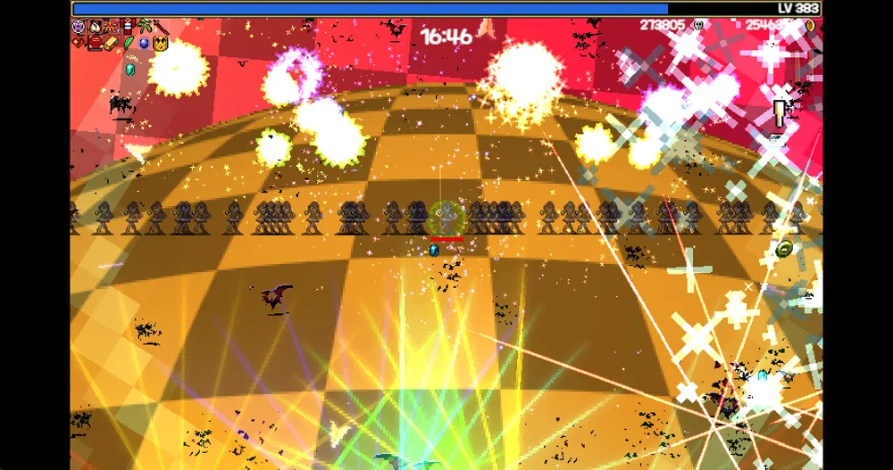
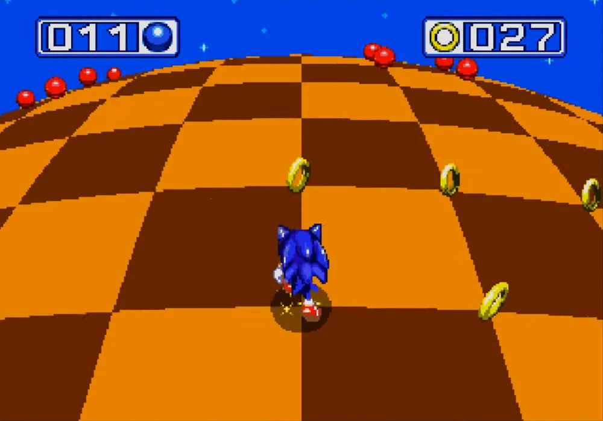
배경은 일정 시간마다 바뀌며, 배경 자체가 소닉 더 헤지혹 시리즈의 그린 힐과 많이 닮았다. 소닉 시리즈의 링을 연상케하는 금 반지 다수도 이 분위기에 한몫한다. - 안드로이드 버전에서는 9분 유물 아포폴렉시를 먹지 않고 18분 유물인 카오스 말라카이트를 먼저 먹으면 아포폴렉시가 사라져 버리는 버그가 있다.


4.7. 아스트랄 계단
Astral Stair | ||||||||||||||||||||||
 | ||||||||||||||||||||||
다른 세계와 차원으로 가기 위한 고속도로입니다. 혼자서 여행을 떠나는 건 위험하지만, 제가 아무리 이렇게 말해도 안 들으실 것 같은데요? | ||||||||||||||||||||||
BGM(유튜브 링크) | ||||||||||||||||||||||
스테이지 구성 | ||||||||||||||||||||||
| ||||||||||||||||||||||
v1.5.101에 추가된 스테이지. 유물 입수와 관계없이 랜덤 이벤트가 발생한다.
- 스테이지 해금 조건: 아무 캐릭터로 반전 모드 화려한 도서관에서 레벨 80에 도달, 하이퍼 모드는 스테이지와 함께 해금된다.
- 스테이지 구성
[맵 지도] {펼치기 * 접기}
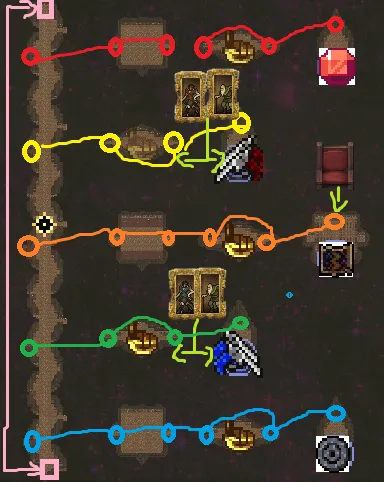
시작 직후 약 30초 동안 떨어지다가 디렉터의 손이 잡아서 맵으로 내려주며 본격적으로 시작된다. 스테이지 내의 유물을 전부 입수하면 해당 이벤트는 더 이상 발생하지 않는다.
긴 수직 회랑과 차원문[104]으로 오갈 수 있는 고립된 구역으로 구성되어 있으며, 회랑의 양쪽 끝 역시 차원문으로 이어져 있다. 차원문은 약간 녹색을 띠고 있고, 문 앞에 붉은 카펫이 존재하는 것으로 구분이 가능하다. 차원문은 약간의 쿨타임이 걸려 나온 차원문으로 바로 다시 들어갈 수는 없고, 주요한 해결책이 켜진 상태에서는 이용할 수 없다.
배경음악의 박자에 따라 적의 색이 빨간색과 파란색을 오가며, 바뀐 색과 같은 색을 내는 무기에만 제대로 피해를 입는 귀찮은 기믹이 있다. 스테이지 유물 전부 입수시에는 이 기믹을 제거하는 발판이 시작지점 근처에 생긴다. 워낙 귀찮은 기믹이므로 시작하자마자 밟아서 없애는 것이 좋다. 15분, 18분에는 우주 알이라는 무한 회랑을 써서 플레이어의 체력을 지속적으로 절반으로 깎는 적이 보스 형태로 등장한다. 이후 19분대에 우주 알이 떼거지로 등장하는데, 수많은 우주 알이 플레이어에게 무한회랑을 쏘면서 풀피였던 플레이어가 체력 1까지 까이는 진풍경을 볼 수 있다. 19분대 우주알 러시는 적을 지속적으로 죽여서 우주 알이 플레이어에게 못 닿게 하거나, 문을 와리가리해서 피하는 방법으로 버틸 수 있다.
진화 상자는 9분부터 등장하나, 맵 곳곳에 있는 골드 핑거를 먹어 악마 손가락을 달성하면 진화 상자가 바로 생성되니 이를 잘 이용해 빠르게 진화 무기를 갖출 수 있다. 이 골드 핑거는 광기의 그루브 아르카나로 끌려오지 않으므로 무조건 직접 가서 입수해야 한다.
그 외에도 포초상화와 아스트랄 의자는 적 웨이브에는 절대로 나오지 않고 특정한 장소에만 등장한다. 그러므로 우화집 목록을 채우기 위해서는 구석구석 탐사해야 한다. 또한 차원문을 타고 넘어가는 널찍한 구역에는 중앙에 함정 발판이 있으며 이걸 밟으면 적이 등장한다. 웨이브 목록 (펼치기 · 접기)
- 0분: 아스트랄 엘리멘탈(정령)
- 1분: 아스트랄 엘리멘탈(정령), 시뇨라 롯시(이벤트), 고스트경(보스, 상자x)
- 2분: 아스트랄 엘리멘탈(정령), 아스트랄 엘리멘탈(폴터), 아스트랄 메두사 스웜(이벤트), 고스트경(보스, 상자x)
- 3분: 언데드 별(정령), 아스트랄 엘리멘탈(거대한 미라, 보스)
- 4분: 아스트랄 엘리멘탈(미라), 언데드 별(정령), 슈팅스타(이벤트)
- 5분: 아스트랄 엘리멘탈(미라), 아스트랄 메두사 스웜(이벤트), 아스트랄 엘리멘탈(거대한 미라, 보스, 상자x), 고스트경(아르카나, 진화2)
아르카나 상자의 2~3번째 보상으로 진화가 가능하지만, 역시 게임 킬러 아르카나 없이는 2~3번째 보상이 뜨지 않는다. - 6분: 아스트랄 유령, 슈팅스타(이벤트), 고스트경(보스)
- 7분: 아스트랄 엘리멘탈(정령), 아스트랄 엘리멘탈(해골), 고스트경(보스, 상자x)
- 8분: 아스트랄 엘리멘탈(해골), 슈팅스타(이벤트)
- 9분: 아스트랄 엘리멘탈(해골), 언데드 별(정령), 시뇨라 롯시(이벤트), 고스트경(보스, 진화5)
- 10분: 아스트랄 엘리멘탈(머드맨), 슈팅스타(이벤트), 고스트경(아르카나, 진화2)
- 11분: 아스트랄 엘리멘탈(머드맨), 언데드 별(머드맨)
- 12분: 언데드 별(머드맨), 언데드 별(머리), 슈팅스타(이벤트), 고스트경(보스, 진화5)
- 13분: 언데드 별(머리), 시뇨라 롯시(이벤트), 고스트경(보스, 상자x)
- 14분: 언데드 별(머리), 아스트랄 엘리멘탈(골렘), 슈팅스타(이벤트)
- 15분: 아스트랄 엘리멘탈(골렘), 우주 알(보스, 진화5)
- 16분: 아스트랄 엘리멘탈(모든 바리에이션), 언데드 별(머드맨), 슈팅스타(이벤트), 고스트경(보스, 상자x)
- 17분: 아스트랄 커튼, 아스트랄 엘리멘탈(거대한 미라), 시뇨라 롯시(이벤트)
- 18분: 언데드 별(모든 바리에이션), 슈팅스타(이벤트), 우주 알(보스, 진화5)
- 19분: 우주 알
- 스테이지 유물
- 해금 요소
- 로즈 드 인페르나스 캐릭터 해금
[비밀] 충성스러운 그림자가 46번째 문 뒤에 숨어 있습니다. {해금 조건 펼치기 * 접기}
차원문을 누적 46번 사용하면 흰색 관이 있는 곳으로 갈 수 있다. 게임 모드나 적 처치 여부는 상관없으니 그냥 열면 된다.
흰색 관이 있는 곳으로 갈 수 있다. 게임 모드나 적 처치 여부는 상관없으니 그냥 열면 된다.
- 여담
- BGM은 화려한 도서관의 Libro Inferno를 다시 한 번 리믹스한 것이다.
- 다른 세계로 가기 위한 공간이라는 스테이지 설명문에 걸맞게, 이 스테이지가 추가된 뒤로 콜라보 DLC가 나오기 시작했다.


4.8. 마제렐라
Mazerella | |||||||||||||||||||
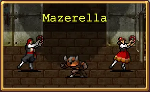 | |||||||||||||||||||
유당 미로가 유제품 공장의 버터 지하실에 묻혀 있습니다. 미노타우로스의 고향이자 낙수 효과로 인한 밀크노믹스가 지배하는 곳입니다. 황소의 뿔을 잡고 이 돌아버린 미로를 치즈로 만드는 것이 유일한 승리 공식입니다. | |||||||||||||||||||
BGM(유튜브 링크) | |||||||||||||||||||
스테이지 구성 | |||||||||||||||||||
| |||||||||||||||||||
미궁 컨셉의 스테이지다.
- 해금: 아무 캐릭터로 반전 모드 유제품 공장에서 레벨 80에 도달, 하이퍼 모드는 스테이지와 함께 해금된다.
- 스테이지 기믹
스테이지 유물 2종이 시작 위치 좌우에 각각 놓여 있지만, 곧바로 댄서들이 강탈해 버린다. 이 댄서들은 무적 상태로 플레이어와 거리를 유지하며[105], 상자나 스테이지 아이템을 비롯한 모든 아이템을 강탈하는 짜증나는 적들이다. 내내 열받는 춤을 추는 건 덤.
댄서에게 접근하면 일정 거리를 유지하며 도망친다. 계속 추격하다 보면 도망치다가 막다른 나무 플랫폼 방에 갇히는데, 이때 댄서의 무적이 풀려 공격할 수 있다. 죽이면 지금까지 강탈했던 아이템을 모두 토해낸다. 같은 방식으로 반대쪽 댄서도 처리하면 아이템을 뺏길 일은 없어진다.
기믹도 기믹이고 맵 구조도 미궁이기 때문에 이동할 일이 매우 많아, 이동속도가 높거나 비행 특성을 가진 캐릭터들이 유리하다. 이동속도가 매우 빠른 캐릭터는 댄서가 유물을 강탈하기 전에 먼저 입수할 수도 있다.
이 스테이지의 새로운 적군인 토리노, 조야타우로, 아큐뮬라 토리는 황색 개체를 제외한 노란색, 붉은색 개체는 붉은 선으로 경고 표시를 한 뒤 엄청난 속도로 돌진하는 기믹이 있다. 돌진 개체들은 웨이브에 상관없이 계속 등장하며[106] 돌진 타이밍은 랜덤이다. 웨이브 목록 (펼치기 · 접기)
- 0분: 토리노, 댄서(이벤트)
- 1분: 토리노, 우유 엘리멘탈(이벤트), 미뇽타우로스(보스)
- 2분: 우유 엘리멘탈, 거대 미뇽타우로스(보스), 비열한 머리 스웜(이벤트)
- 3분: 하피, 미뇽타우로스(보스, 일반 상자)
- 4분: 토리노, 우유 엘리멘탈(이벤트)
- 5분: 우유 엘리멘탈, 거대 미뇽타우로스(보스), 비열한 머리 스웜(이벤트), 사자 머리(보스, 아르카나 상자)
- 6분: 하피, 조야타우로, 미뇽타우로스(보스, 일반 상자)
- 7분: 조야타우로, 비열한 머리, 거대 미뇽타우로스(보스)
- 8분: 우유 엘리멘탈, 미뇽타우로스 스웜(이벤트)
- 9분: 비열한 머리, 하피, 미뇽타우로스(보스, 진화 상자)
- 10분: 조야타우로, 미뇽타우로스 스웜(이벤트), 사자 머리(보스, 아르카나 상자)
- 11분: 하피, 우유 엘리멘탈
- 12분: 조야타우로, 비열한 머리, 미뇽타우로스 스웜(이벤트), 거대 아콘 디스코(보스, 진화 상자)
- 13분: 하피, 우유 엘리멘탈, 거대 미뇽타우로스(보스)
- 14분: 하피, 조야타우로, 비열한 머리 스웜(이벤트)
- 15분: 아큐뮬라 토리, 거대 만티코어(보스, 진화 상자)
- 16분: 하피, 아큐뮬라 토리, 비열한 머리, 거대 아콘 디스코(보스)
- 17분: 미뇽타우로스, 우유 엘리멘탈, 우유 엘리멘탈 스웜(이벤트)
- 18분: 미뇽타우로스, 아큐뮬라 토리, 거대 만티코어(보스, 진화 상자)
- 19분: 거대 만티코어, 거대 아콘 디스코
- 스테이지 유물
- 해금 요소
- 여담


4.9. 작은 다리
Tiny Bridge | |||||||||||||||||||
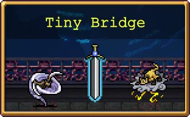 | |||||||||||||||||||
두 개의 반대 진영이 이 작은 다리를 둘러싼 싸움을 갑자기 중단했습니다. 의심할 여지 없이 이 중지의 원인은 무해한 것으로 판명될 것입니다. | |||||||||||||||||||
BGM(유튜브 링크) | |||||||||||||||||||
스테이지 구성 | |||||||||||||||||||
| |||||||||||||||||||
v1.1.100에서 추가된 네 번째 챌린지 스테이지.
- 스테이지 해금 조건: 아무 캐릭터로 반전 모드 갈로의 탑에서 레벨 80 달성
- 스테이지 구성
매우 좁은 다리 위에서 좌우로 밀려들어오는 적들을 처치하면서 20분간 생존하면 되는 단순한 스테이지. 그러나 챌린지답게 적의 능력치가 시간에 따라 증가해 난이도가 제법 있는 편이며, 매력 강화를 찍었다면 적이 서로 어깨빵을 하며 다리 밖으로 밀려나갔다가 상하에서까지 덮쳐온다.
좁아터진 이동 가능 영역 때문에 경험치를 포함한 픽업 아이템을 챙기기 쉽지 않다. 자석 능력치가 부족하다면 광기의 그루브 아르카나를 써도 경험치와 아이템이 지형 바깥으로 나가 얻을 수 없으므로, 매혹구를 챙겨야 한다. 웨이브 목록 (펼치기 · 접기)
- 0분: 노란 수습 사신
- 1분: 두개골, 노란 수습 사신, 거대 플라잉 소드(보스, 상자x)
- 2분: 노란 수습 사신, 임프, 두개골, 슈팅스타(이벤트), 거대 플라잉 소드(보스, 상자x)
- 3분: 임프, 거대 플라잉 소드(보스)
- 4분: 임프, 거대 두개골, 슈팅스타(이벤트)
- 5분: 붉은 유령, 거대 두개골, 플라잉 소드 비(이벤트), 거대 플라잉 소드(아르카나, 진화2)
아르카나 상자의 2, 3번째 보상으로 진화가 가능하다. - 6분: 붉은 유령, 하피, 슈팅스타(이벤트), 거대 플라잉 소드(보스)
- 7분: 메두사 헤드, 하피, 거대 플라잉 소드(보스, 상자x)
- 9분: 브릿지 미니언, 브릿지 미니언 2, 플라잉 소드 비(이벤트), 거대 플라잉 소드(보스, 진화5)
- 10분: 테트라브라키아, 브릿지 미니언, 브릿지 미니언 2, 슈팅스타(이벤트), 거대 플라잉 소드(아르카나, 진화2)
- 11분: 테트라브라키아
- 12분: 날개 스켈레톤, 테트라브라키아, 슈팅스타(이벤트), 거대 플라잉 소드(보스, 진화5)
- 13분: 날개 스켈레톤, 테트라브라키아, 플라잉 소드 비(이벤트), 거대 플라잉 소드(보스, 상자x)
- 14분: 거대 박쥐, 박쥐, 슈팅스타(이벤트)
- 15분: 거대 박쥐, 아콘 레임, 아콘 오로, 거대 플라잉 소드(보스, 진화5)
- 16분: 아콘 레임, 아콘 오로, 슈팅스타(이벤트), 거대 플라잉 소드(보스, 상자x)
- 17분: 아콘 레임, 아콘 오로, 날개 스켈레톤, 플라잉 소드 비(이벤트)
- 18분: 코카트리스, 슈팅스타(이벤트), 거대 플라잉 소드(보스, 진화5)
- 19분: 플라잉 소드
- 스테이지 유물
- 해금 요소
- 스코레지 오니 캐릭터 해금
[비밀] 작은 다리에서 요란한 천둥의 근원을 찾아보세요. {해금 조건 펼치기 * 접기}
오른쪽으로 쭉 가다 보면 히든 보스인 오니가 등장한다. 처치하면 된다. 스코레지 오니와 가까워지면 배경에 천둥 소리가 희미하게 들리는데 듣기 힘든 편이다.
- 여담
- 맵뚫기나 지형 무시로 다리 밖으로 나가면 역시나 적 스폰이 안 되는 다른 다리가 나온다.
- 갈로의 탑의 데이터를 복붙해서인지 레다 이벤트가 똑같이 발생한다. 그러나 지형 무시나 맵 뚫기가 되어야 다리를 뚫고 하단으로 내려갈 수 있으며, 내려가도 정상적인 스폰 지점이 없기 때문에 레다가 스폰되지 않는다.
- 또한 스코레지 오니, 브릿지 미니언, 브릿지 미니언 2는 이후 등장하는 문스펠의 유산 DLC의 스테이지의 적군인 천둥 오니, 키마이타치, 라이주의 그래픽으로 재활용된다. 다만 작은 다리 스테이지가 문스펠의 유산 DLC보다 좀 더 일찍 나왔었는데, 어쩌면 일종의 맛보기 기믹으로 등장시킨 듯하다.


5. ???
5.1. Hidden Ground - Holy Forbidden
Holy Forbidden | ||||||||||||||||
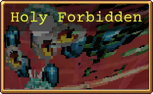 | ||||||||||||||||
잠깐 이것도 보인다고? 뭔가 잘못됐어... | ||||||||||||||||
BGM(유튜브 링크) | ||||||||||||||||
스테이지 구성 | ||||||||||||||||
| ||||||||||||||||
달빛 스테이지의 종반부와 더불어 호러 연출이 돋보이는 스테이지로 달빛 스테이지의 14분에 등장하는 동시에 자동으로 이어서 플레이할 수 있는 '월식 이벤트'를 통하여 진입할 수 있다. 스테이지 시작 시 캐릭터의 능력치 업그레이드, 황금알, 아르카나, 부활 횟수를 전부 빼앗는 연출과 함께 레벨 1에 기본 무기만 장착한 상태에서 게임을 시작하게 되며, 이후 12시 위치에서
맵의 패턴은 다음과 같다.참고
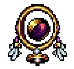
'타락한 스론(Fallen Throne)'이 등장하게 되고 정해진 시간에 따라 특정한 패턴을 구사하며 공격을 개시한다.[111]맵의 패턴은 다음과 같다.참고
- 시작부터 피피스트렐로(박쥐)가 3초마다 꾸준히 무한 생성된다.
- 타이머가 15초가 되는 순간 갑자기 화면이 한 번 점멸하고 타이머 위에 타락한 스론이 등장하며 모든 박쥐의 외형이 영구적으로 타락한 케루브로 변한다. 그리고 타이머가 삭제되어 시간이 얼마나 지났는지 알 수 없게 되고 현재 캐릭터의 외형이 변색된다.[112]
- 27초부터 타락한 스론이 중앙을 중심으로 원형으로 총 8번 돌면서[113] 플레이어를 향해 공격력이 3이고 체력이 15인 노란 타락한 케루브를 1마리씩 총 56마리를 발사한다.
- 52초부터 타락한 스론이 화면 아래쪽으로 이동한 뒤 그대로 좌우로 왕복하면서 자폭 능력이 있는 타락한 케루벨로를 생성한다. 총 40마리가 0.4초 간격으로 생성되며 케루벨로는 플레이어의 거리와 관계없이 생성 즉시 기폭이 켜지고 2초 후에 폭발한다.
- 1분 4초부터 배경에 수많은 눈알이 플레이어를 쳐다본다. 단순한 겁주기용 효과이다.
- 1분 12초부터 타락한 스론이 플레이어 바로 왼편에 붙어서 눈알 폭격을 날린다. 폭격은 경고 표시 이후 2초 후에 해당 지역으로 떨어지며 15의 피해를 주고, 정확성이 조금 낮다.
- 1분 17초부터 배경에 수많은 붉은 사신들이 지나가기 시작한다. 역시나 별 효과 없는 이펙트이다.
- 1분 21초부터는 눈알 폭격의 정확성이 높아지고 폭격 속도가 더욱 빨라지며, 1분 27초부터는 아예 플레이어의 위치를 정확히 노리고 쏜다.
- 1분 35초부터는 타락한 스론의 폭격이 1초 동안 점점 느려지다 갑자기 왼쪽으로 휙 사라져 버리고, 1분 38초에 아무 이유 없이 즉사하고 게임 오버가 된다. 즉 1분 38초가 되기 전엔 무조건 맵 끝 부분의 묵주를 먹어야만 한다.
- 맵 끝의 복도 코너에 접근 시 트리나크리아들이 무더기로 쏟아져 나온다.
맵이 상당히 좁고 플레이어는 완전 비무장이나 다름없는 상태인데 적들이 계속 방해해대서 순식간에 비명횡사할 수 있다. 대신 일반 타락한 케루벨은 스탯이 박쥐와 동일하므로 이동만 잘 하면서 타락한 스론의 공격만 어떻게 좀 피해주고 길을 따라 빠르게 움직인다면 쉽게 클리어할 수 있다. 기본적으로 체력이나 이동속도가 다른 캐릭터들보다 높으면서 무기 조준이 쉬운 캐릭터들을 쓰는 것이 좋다. 특히 1레벨에 큰 보너스를 받는 클레리씨나 포르타가 좋은 편이며, 강화 창의 저주는 무조건 꺼두는 것이 좋다. 또한 전진하면서 보이는 광원들은 가능하다면 전부 쓸어담는 게 좋다. 도우미 아이템 풀이 좁아져서 은두자 프라타와 치킨, 그리고 골드만 나오므로 비교적 두 아이템을 보기 쉬워진다.
만약 실패하더라도 스테이지 선택 단계에 Holy Forbidden이 해금되어 있으므로 다시 달빛에서 시작할 필요 없이 즉시 재도전이 가능하다. 다만 월식 이벤트처럼 히든 캐릭터나 DLC 캐릭터로는 불가능하고 오로지 통상 캐릭터로만 진입이 가능하니 주의.
맵의 끝 부분까지 이동하면 트리나크리아들이 무한히 생성되어 공격해오지만 맵 끝에 있는 묵주를 먹으면 모든 적들이 전멸하며 클리어가 된다. 이후 오른쪽 벽을 뚫고 더 진행하면 유물 아이템 노란색 신호를 획득할 수 있다. 노란색 신호를 획득하면 기괴하게 화면이 암전된 뒤[114]게임이 재시작된다.[115] 재시작 후에는 스테이지 목록에서 영구적으로 사라지고, 시곗바늘과 월계수의 진화 무기 2개와 조합 장신구 4개가 해금된다. 하지만 묵주를 먹은 상태인데 30초 이상 아무것도 하지 않을 경우 강제로 스테이지가 종료된다.
묵주를 먹어서 스테이지를 클리어할 경우 타락한 스론은 사신 형태인 '매드너'(노란 사신/Maddener)로 변화한다.
스테이지명인 Hidden Ground - Holy Forbidden 은 .hack에 등장하는 Hidden Forbidden Holy Ground의 패러디이다. .hack 게임 영상을 보면 뱀서의 Holy Forbidden과 맵 구성이나 분위기가 많이 닮아있다.
뼈의 대지에서 모르베인의 금지된 두루마리를 입수했다면 비밀 페이지에서 iwanttoseeitagain 코드를 입력하는 것으로 다시 진입해 볼 수 있다. 마지막으로 플레이한 기본 캐릭터로 진행하며, 비밀 캐릭터나 DLC 캐릭터로 진입하려 할 시 안토니오로 강제 변경된다. 매력과 저주 강화는 비활성화해야 정상적으로 진행이 가능하다. 노란색 신호는 이미 입수했으므로 당연히 나오지 않으며, 노란색 신호가 있던 곳으로 가면 월식 이벤트 때처럼 화면이 뒤틀리다가 끝난다.
- 스테이지 유물
5.2. 에우다이모니아 M.
Eudaimonia M. | ||||||||||||||||
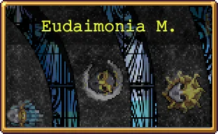 | ||||||||||||||||
우리 세상의 가장자리로 가는 길. 바닥은 용암입니다. | ||||||||||||||||
A space between spaces. The culmination of something, or simply another beginning? Tag, you're it. | ||||||||||||||||
BGM(유튜브 링크) | ||||||||||||||||
스테이지 구성 | ||||||||||||||||
| ||||||||||||||||
그리시아의 거울과 일곱 번째 나팔을 제외한 본편의 모든 유물을 습득한 뒤 열리는 스테이지. 그라시아의 거울과 일곱 번째 나팔은 에우다이모니아에 순차적으로 입장하여 한 번에 하나씩 얻을 수 있다. 하나의 유물을 얻고 난 뒤 해당 유물을 획득 시 해금되는 모드[116]로 게임을 한번 시작(완료할 필요는 없음)해야 다시 스테이지가 열린다.
두 개의 스테이지 유물을 얻고 난 뒤 다시 스테이지에 진입하면 유물을 나눠주던 거대한 몬스터 디렉터와 보스전을 시작하게 된다. 디렉터와의 보스전 설명은 도감 문서 참조. 보스전을 클리어하고 나면 엔딩 크레딧이 올라오면서 게임이 종료된다. 엔딩 크레딧에도 다양한 이스터에그가 숨겨져 있으니 시간이 된다면 지켜보는 것도 즐길거리가 될 수 있다.
진입 시 황금알 획득 후의 능력은 강제로 해제되며, 캐릭터의 기본 상태로 돌아간다.
에우다이모니아를 클리어하면 신규 무기 위대한 기념제가 즉시 해금되고, 이후 일반 스테이지 화려한 도서관에서 반전 모드로 플레이할 때 신규 캐릭터 아바타 인페르나스를 해금할 수 있게 된다.
스테이지 이름인 에우다이모니아는 행복이나 웰빙으로 표현할 수 있는 그리스어로서, 철학적으로는 최고선(善)을 뜻하는 용어이다.
두 개의 스테이지 유물을 얻고 난 뒤 다시 스테이지에 진입하면 유물을 나눠주던 거대한 몬스터 디렉터와 보스전을 시작하게 된다. 디렉터와의 보스전 설명은 도감 문서 참조. 보스전을 클리어하고 나면 엔딩 크레딧이 올라오면서 게임이 종료된다. 엔딩 크레딧에도 다양한 이스터에그가 숨겨져 있으니 시간이 된다면 지켜보는 것도 즐길거리가 될 수 있다.
진입 시 황금알 획득 후의 능력은 강제로 해제되며, 캐릭터의 기본 상태로 돌아간다.
에우다이모니아를 클리어하면 신규 무기 위대한 기념제가 즉시 해금되고, 이후 일반 스테이지 화려한 도서관에서 반전 모드로 플레이할 때 신규 캐릭터 아바타 인페르나스를 해금할 수 있게 된다.
스테이지 이름인 에우다이모니아는 행복이나 웰빙으로 표현할 수 있는 그리스어로서, 철학적으로는 최고선(善)을 뜻하는 용어이다.
- 스테이지 유물


5.3. 1665호실
Room 1665 | |||||||||||||
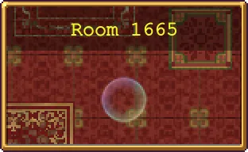 | |||||||||||||
바닥이 존재하지 않을 것처럼 보이는 이 거대하고 지옥 같이 무시무시한 장치의 아래쪽에는 몬스터의 피를 섭취하지 않으면 절대로 열리지 않는 문이 있습니다. 오랫동안 우리가 잊고 지냈던 일족의 끔찍한 행동으로 소환된 이 유령의 홀은 헤아릴 수 없을 만큼 깊은 곳으로부터 썩어빠진 기운에 놀아날 순진한 영혼들을 갈망하며 속삭이고 있습니다. | |||||||||||||
BGM(유튜브 링크) | |||||||||||||
스테이지 구성 | |||||||||||||
| |||||||||||||
v1.11.107에서 추가된 특수 스테이지. 포스카리 심연 이후로 간만에 등장한 호러 컨셉의 스테이지다.[117] 게임 시작 시 하이퍼 모드, 반전 모드, 무한 모드, 단축 모드, 랜덤 이벤트는 강제로 비활성화된다.
- 스테이지 해금 조건
비밀 화면에서 주문 'forbiddenbox'[118]를 입력한다. 주문을 입력하는 즉시 마지막에 플레이했던 캐릭터로 스테이지가 시작된다. - 스테이지 구성
이 스테이지에서는 황금알 효과를 받을 수 없고, 시작 시에 아르카나 선택도 주어지지 않는다. 대신 지도상에 아르카나 상자 2개가 존재한다.
아래쪽에 막힌 문이 있는 작은 방에서 시작한다. 벽은 지형 무시 캐릭터로도 뚫고 나가는 것이 불가능하며, 오로지 적 100마리를 죽여 문을 개방하는 것 이외에 빠져나갈 방법은 없다. 문을 열고 내려가면 광원이 늘어선 좁은 복도를 지나 다른 방에 도착한다. 즉 100킬을 반복하며 최하층으로 가는 게 목표인 스테이지다. 킬 수마다 달라지는 적의 맷집이 기하급수적으로 늘어나는 데다가, 이 맵을 플레이할 시점이라면 매력, 저주가 매우 높을 확률이 높기에 적의 능력치와 물량 때문에 난이도가 굉장히 높은 맵이다.[119] 1400킬까지는 100킬마다 문이 열리며, 1665킬을 하면 마지막 문이 열리고 다르카소가 있는 최하층이 나온다. 아르카나 상자가 있는 방은 100킬, 500킬을 하면 열린다.
첫 플레이에서는 최하층에서 적이 스폰되지 않으며, 유물을 입수하고 나서야 다시 스폰되기 시작한다. 또한 스테이지 기믹이 좀 특이한데, 킬 수마다 적 공세가 달라지며[120] 1분마다 진화 상자를 항상 떨구는 레바티 다르카소(초록 난쟁이)와 레바씨 다르카소(눈알)가 꾸준히 등장하므로[121] 상자를 그냥 아예 퍼주다시피하는 맵이다.
성능이 압도적인 시그마로 매우 쉽게 클리어할 수 있으며, 아직 해금하지 못했다면 붉은 죽음의 가면, 레다 등 기본 무기가 강력한 캐릭터로 1무기런을 해도 좋다.[122] 특히 레다의 경우 획득이 엄청 크게 어렵진 않고 방어력이 있어서 안정적인 편이다. - 스테이지 유물
웨이브 목록 (펼치기 · 접기)
- 0~100킬: 작은 도깨비
- 100~200킬: 손에 든 두개골
- 200~400킬: 기아볼로
- 400~500킬: 스카사 카소스 (기아볼로 형태)
- 500~600킬: 악령 사제
- 600킬~700킬: 유다 알카소
- 700~800킬: 악령 야수
- 800~900킬: 스카사 카소스 (악령 야수 형태)
- 900~1000킬: 스카사 카소스 (염소 악마 형태)
- 1000킬~1100킬: 푸오리 다르카소
- 1100킬~1200킬: 스카사 카소스 (대악마 형태)
- 1200킬~1300킬: 쉔디 다르카소
- 1300킬~1400킬: 스폰다토 다르카소
- 1400킬~1655킬: 에레브테 다르카소
- 1665킬 이상: 1665킬 달성 시 1분마다 작은 도깨비, 손에 든 두개골, 악령 사제, 악령 야수, 기아볼로, 레바티 다르카소, 레바씨 다르카소를 제외한 1665호실 전용 적들로 구성된 웨이브가 등장. 적 구성은 무작위

6. DLC 스테이지
6.1. 문스펠 산
Mt.Moonspell | ||||||||||||||||
 | ||||||||||||||||
몰락한 일족의 선조가 살던 고향으로, 이제 요괴와 오니에게 점령당했습니다. 태양이 빛나지 않는이 세계에서는 밤이 승리합니다. | ||||||||||||||||
BGM(유튜브 링크) | ||||||||||||||||
스테이지 구성 | ||||||||||||||||
| ||||||||||||||||
2022년 12월 15일 출시된 첫 번째 DLC에 포함된 스테이지로 일본의 요괴를 모티브로 한 적들이 등장한다. 무한히 생성되던 본편의 스테이지들과 달리 맵에 경계가 있고 구조도 고정되어 있다. 버려진 성, 요괴의 마을, 눈 덮인 산, 동굴 등 다양한 지역을 찾아볼 수 있다.
- 스테이지 해금 조건: Legacy of the Moonspell DLC 구매
- 스테이지 구성
[맵 지도] {펼치기 * 접기}

맵 구조는 항상 고정되어 있으며 어떤 수단으로도 맵 밖으로 나갈 수 없다. 12시의 동굴에 접근하면 거대 오니, 6시 방향의 호숫가와 11시의 얼어붙은 호수에 접근하면 캇파, 각 반지와 메탈리오 아이템이 배치된 신사가 있는 지역에는 타누키, 시작 지점 남쪽 방향에 보이는 마을 지역에는 히토츠메코즈 등 특정 지역에는 고유한 적들이 스폰되는 기믹이 있으며, 우화집을 전부 채우려면 거대 오니, 캇파, 히토츠메코즈, 고샤도쿠로는 꼭 만나야 한다.
하술하듯 스테이지 아이템이 많은데, 반지와 메탈리오를 제외하면 접근 시 무조건 고샤도쿠로가 튀어나와 이동 속도 증진과 빨간 작은 유령 스웜 소환으로 플레이어를 공격한다. 대신 처치하면 진화 상자를 떨어트리므로 일일이 찾아갈 가치는 충분하다. 여기에 3분과 5분 보스를 제외한 모든 보스가 진화 상자를 드롭하고 보스 수도 많기 때문에 진화 기회가 매우 많다. 웨이브 목록 (펼치기 · 접기)
- 0분: 작은 유령
- 1분: 작은 유령, 좀비, 오라 작은 유령(보스, 진화1)
- 2분: 박쥐, 작은 유령 스웜(이벤트)
- 3분: 츠치노코, 작은 유령 스웜(이벤트), 오라 작은 유령(보스)
- 4분: 츠치노코, 작은 유령, 작은 유령 스웜(이벤트)
- 5분: 카마이타치, 문스펠 꽃 벽 포위(이벤트), 미코시뉴도(보스)
- 6분: 카마이타치, 작은 유령, 작은 유령 스웜(이벤트)
- 7분: 라이주, 작은 유령, 작은 유령 스웜(이벤트), 거대 라이주(보스, 진화1)
- 8분: 라이주, 작은 유령 스웜(이벤트), 천둥 오니(보스, 상자x)
- 9분: 야맘바, 좀비, 작은 유령 스웜(이벤트), 오라 작은 유령(보스, 진화1)
- 10분: 카마이타치, 라이주, 문스펠 꽃 벽 포위(이벤트), 바람 오니(보스), 천둥 오니(보스, 진화1)
- 11분: 츠치노코, 작은 유령 스웜(이벤트), 오라 작은 유령(아르카나)
- 12분: 야맘바, 작은 유령, 츠치노코, 작은 유령 스웜(이벤트), 거대 타누키(보스, 진화1)
- 13분: 야맘바, 작은 유령, 작은 유령 스웜(이벤트)
- 14분: 야맘바, 오라 작은 유령(보스, 진화1)
- 15분: 야맘바, 미코시뉴도, 문스펠 꽃 벽 포위(이벤트), 오라 작은 유령(보스, 진화1)
- 16분: 야맘바, 미코시뉴도, 오라 작은 유령(보스, 진화1)
- 17분: 텐구
- 18분: 텐구, 라이주, 오라 작은 유령(보스, 진화1)
- 19분: 텐구, 미코시뉴도
- 20분: 텐구, 카마이타치, 야맘바, 작은 유령 스웜(이벤트), 거대 카마이타치(보스, 진화1)
- 21분: 천둥 오니, 츠치노코(보스, 상자x), 오라 작은 유령(아르카나)
- 22분: 바람 오니, 오라 작은 유령(보스, 진화1)
- 23분: 바람 오니, 텐구, 거대 텐구(보스, 진화1)
- 24분: 천둥 오니, 텐구, 거대 츠치구모(보스, 상자x)
- 25분: 츠치구모, 오로치마리오(보스, 진화1)
- 26분: 츠치구모, 바람 오니
- 27분: 텐구, 천둥 오니, 바람 오니, 작은 유령 스웜(이벤트), 오라 작은 유령(보스, 진화1)
- 28분: 거대 라이주, 거대 카마이타치, 거대 츠치구모
- 29분: 거대 천둥 오니, 거대 바람 오니, 작은 유령 스웜(이벤트), 오라 작은 유령(보스, 진화1)
- 스테이지 유물
- 해금 요소
- 오로치마리오 처치
하이퍼 모드 해금 - 갓파 누적 6,000마리 처치
가베트 오니 캐릭터 해금
- 여담
DLC 1이 발매됐을 때는 지도가 없었으나 DLC 2 발매 이후 후속 패치로 지도가 추가되었다.


6.2. Foscari 호수
Lake Foscari | ||||||||||||||||
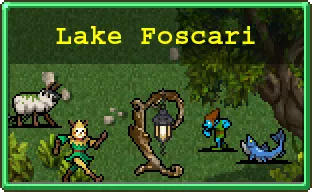 | ||||||||||||||||
신비로운 요정의 미스터리, 신화 속에서 탄생한 존재가 가득한 마법에 걸린 숲입니다. 복잡함을 탈피하여 평범한 모험을 즐기기에 완벽한 장소죠. | ||||||||||||||||
BGM(유튜브 링크) | ||||||||||||||||
스테이지 구성 | ||||||||||||||||
| ||||||||||||||||
DLC 2의 기본 스테이지로 하이 판타지 컨셉의 적들이 등장한다. 문스펠 산과 마찬가지로 맵이 고정되어 있으며 지도가 존재한다.
- 스테이지 해금 조건: Tides of the Foscari DLC 구매
- 스테이지 구성
[맵 지도] {펼치기 * 접기}
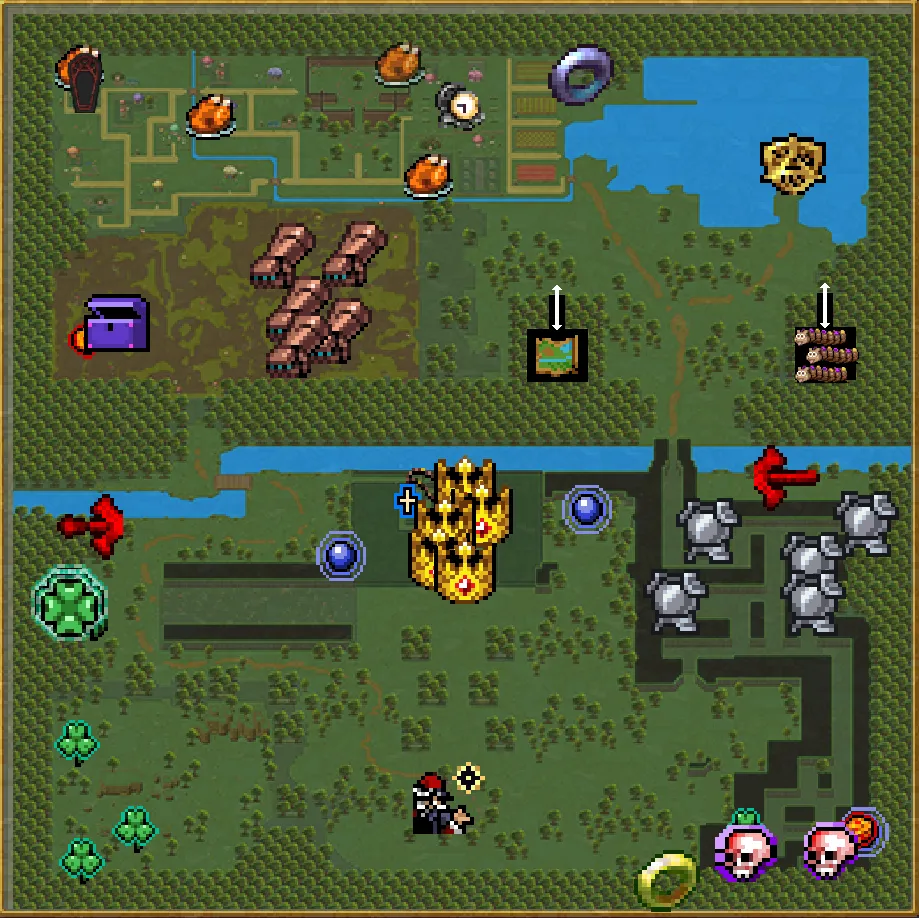
진화 상자는 2분, 그리고 10분과 그 이후에 등장한다. 맵에 아르카나 상자가 하나 배치되어 있다. 아르카나의 총량은 바뀌지 않아, 필드 상자와 21분 상자 중 늦게 입수된 쪽은 진화 상자로 바뀐다. 맵 반대편에 위치해 있지만, 광기의 그루브 아르카나로 끌려오기 때문에 아르카나 세팅에 따라서는 시작부터 아르카나 2~3개를 달고 다닐 수 있다.
스테이지 아이템 수호자는 따로 존재하지 않고, 특정 지역에서 특정 적이 스폰되는 기믹이 존재한다. 전체적으로 평이한 스테이지로, 아래 기믹을 전부 풀고 난 후에는 보스 기믹이 좀 골 때리다는 것 빼고는[130] 큰 특징이 없다. - 스테이지 기믹
처음에는 맵의 6시 방향에서 시작한다. 7시 방향에는 작은 클로버가 3개 있다. 9시 방향에는 클로버 장신구가 n개 있으며 비너스와 아콘 악시아가 등장한다. 10시 방향에는 아르카나 상자 하나와 팔보호대가 n개 있으며 버섯맨이 등장한다.
11시에는 엘리노어가 갇혀있는 관이 있다. 접근 시 버섯맨 다수가 습격한다.
1시에는 호수의 봉인이 있으며 케이타의 기본무기 섬광의 화살를 진화시킨 밀리오네어로 파괴할 수 있다. 봉인을 파괴하면 현재 게임이 자동으로 클리어 처리되며 Foscari 심연으로 전이된다. 봉인 파괴 후에는 봉인 위치에 아카데미 배지가 배치된다.
1~2시의 호수 지역 숲에는 숨겨진 지역이 두 곳 있다. 한 곳에는 Foscari 숲 상세 지도가 있고 반대편 위치에는 새미가 무한 팝업된다. 새미 캐릭터를 해금하기 위해서는 새미를 6000마리 잡아야 하므로 한 번은 꼭 들러야 한다. 다르카나 숨겨진 혐오감을 해금하기 위한 가제보로 음식 357개 먹기도 쉽게 달성할 수 있다. 웨이브 목록 (펼치기 · 접기)
- 0분: 촘포, 새미(이벤트)
- 1분: 촘포
- 2분: 촘포, 브라우니, 와이즈파케 스웜(이벤트), 거대 코카트리스(보스, 진화1)
- 3분: 세푸스, 거대 코카트리스(보스)
- 4분: 촘포, 세푸스
- 5분: 브라우니, 언덕배기 트로우, 바다 트로우, 와이즈파케 스웜(이벤트), 거대 코카트리스(보스)
- 6분: 와이즈파케, 언덕배기 트로우, 바다 트로우, 새미(이벤트)
- 7분: 와이즈파케, 언덕배기 트로우, 바다 트로우, 새미(이벤트)
- 8분: 와이즈파케, 넛멕(보스)
- 9분: 세푸스, 와이즈파케, 분홍 와이즈파케, 광대 스웜(이벤트)
- 10분: 넛멕, 와이즈파케, 분홍 와이즈파케, 광대 스웜(이벤트), 거대 뉴글스(보스, 진화1)
- 11분: 불비오, 넛멕, 거대 광대(보스, 진화1), 거대 코카트리스(아르카나)
- 12분: 불비오, 램무가, 와이즈파케 스웜(이벤트), 거대 코카트리스(보스, 진화1)
- 13분: 불비오, 뉴글스, 거대 코카트리스(보스, 진화1)
- 14분: 불비오, 뉴글스, 램무가, 거대 뉴글스(보스, 진화1)
- 15분: 광대, 램무가, 와이즈파케 스웜(이벤트), 거대 불비오(보스, 진화1)
- 16분: 광대, 램무가, 거대 광대(보스, 진화1)
- 17분: 광대, 노아담, 광대 스웜(이벤트)
- 18분: 크로시프리지토르, 노아담, 브라우니, 거대 램무가(보스, 진화1)
- 19분: 크로시프리지토르, 노아담
- 20분: 신앙충, 부유 신앙충, 스넉 스웜(이벤트), 거대 신앙충(보스), 거대 부유 신앙충(보스, 진화3)
- 21분: 빨강 촘포, 거대 코카트리스(아르카나)
- 22분: 빨강 녹색 기사[131], 빨강 촘포, 거대 녹색 기사(보스, 진화1)
- 23분: 빨강 녹색 기사, 녹색 기사, 거대 녹색 기사(보스, 진화1)
- 24분: 녹색 기사, 촘포
- 25분: 오싹한 유령, 짙은 오싹한 유령, 가에야의 아바타(보스, 진화1)
- 26분: 녹색 기사, 거대 녹색 기사(보스, 진화1)
- 27분: 녹색 기사, 평범한 노파, 거대 녹색 기사(보스, 진화1)
- 28분: 거대 빨강 녹색 기사, 거대 녹색 기사, 거대 녹색 녹색 기사[132](보스, 진화1)
- 29분: 마론나, 영광의 손
- 스테이지 유물
 Foscari 호수 지도
Foscari 호수 지도 - 해금 요소
- 가에야의 아바타 처치
하이퍼 모드 해금 - 새미 누적 6,000마리 처치
새미 캐릭터 해금

6.3. Foscari 심연
Abyss Foscari | ||||||||||||||||
고대에 루미네어가 어둠을 봉인해두었던 지하 유적입니다. 이제 비로소 접근할 수 있게 되었지만, 동시에 깊은 곳에 봉인되었던 악의 세력도 바깥 세계에 접근할 수 있게 되었죠. | ||||||||||||||||
BGM(유튜브 링크) | ||||||||||||||||
스테이지 구성 | ||||||||||||||||
| ||||||||||||||||
DLC 2의 추가 스테이지로 다크 판타지풍의 적이 등장한다. 다른 DLC 맵과 마찬가지로 고정된 맵이지만 지도 아이템은 존재하지 않는다. 반전 모드에서는 폭포가 핏물 같은 붉은색으로 바뀐다.
- 스테이지 해금 조건: Foscari 호수에서 케이타 무오르트로 호수의 봉인 파괴
- 스테이지 구성
[맵 지도] {펼치기 * 접기}
모든 시간대에서 진화 상자가 드롭되며, 맵 중앙에 아르카나 상자가 하나 있다. 적들이 박자에 따라 멈칫거리면서 다가오는 기믹이 있는데, 이는 Crypt of the NecroDancer의 패러디다. 시작 위치 바로 위에 있는 모래시계 모양 발판을 밟거나 제네비와 조우하는 순간 해당 기믹은 사라진다. 이외에는 다른 DLC 스테이지처럼 특정한 지역에 특정한 적이 스폰된다.[143]
유제품 공장과 비슷하게 특정 시간대에 일정 확률로 검은 사신인 블라인더[144]가 나올 수 있다. 블라인더는 묵주, 오망성, 승리의 검, 프리즈마틱 미사일(진화형인 루미네어 포함) 등으로 제거가 가능하며, 오망성 이외의 수단으로 성공적으로 제거하면 진화 상자를 드롭한다. 12분까지 스폰할 확률이 존재하며 12분의 스폰 확률이 가장 높고, 한 번 등장하거나 12분까지 스폰되지 않았다면 남은 시간 동안은 절대로 스폰되지 않는다.
스테이지 아이템은 작은 블라인더 3~5체가 지키고 있다. 따로 면역이 없고 허약하므로 크게 신경 쓰지 않아도 된다.
또한 5시 왕관이 배치된 지역은 왼쪽의 흡입기가 있는 통로엔 함정 발판 4개가 있으며, 왼쪽의 비밀방은 토로나의 상자로 가는 길의 중앙에 함정 발판 하나가 존재한다. 함정을 밟을 경우 상실의 머리 포위[145], 붉은 머리 해파리 벽, 부패 구울 스웜, 피의 이끼 스웜, 불타는 해골 스웜 이벤트 중 하나가 발동하며 함정 쿨타임은 20초이다.
특이하게 맵 중앙 좌측에 반지와 메탈리오가 모여 있고, 그 사이에 아르카나 상자가 배치되어 있다. 아르카나 상자를 직접 가서 먹으려면 아틀란티스 4명이 전부 튀어나온다. 그리고 반지와 메탈리오를 줍지 않고 스폰된 아틀란티스인만 처리한 뒤, 광기의 그루브 아르카나로 반지와 메탈리오를 끌어와 주우면 아틀란티스인이 또 스폰된다. 또한 이 구역에선 상술했듯이 영광의 손이 적 웨이브에 섞여 계속해서 몰려온다.
제네비가 있는 방 기준으로 왼쪽 공간은 비밀 통로로만 접근이 가능하다. 비밀통로의 위치는 대충 제네비의 방으로 들어가는 복도 왼쪽 벽 어딘가로, 날아가는 무기가 부자연스럽게 감춰지는 부분으로 들어가면 된다. 이 중 토로나의 상자가 있는 위치에서는 작은 아틀란티스인이 대량으로 스폰된다. 당연히 황금알을 하나씩 드롭한다. 황금알을 골드 소모 없이 대량으로 얻을 수 있으나, 강력한 적이니 준비를 충분히 하고 들어가는 것이 좋다. 어느 정도 강력한 캐릭터나 황금알을 적당히 먹인 캐릭터라면 골드런을 하는 것보다 여기서 황금알을 캐는 게 효율이 더 좋다.
DLC 3 발매 기준으로는 최고의 혜자 스테이지로 평가받는다. 골드 획득 배율이 뼈의 대지와 같은데, 무기 진화도 빠르고 스테이지 아이템도 수북이 쌓여 있으며 황금알 채굴까지 가능하고 적은 훨씬 약하며 블라인더도 나오는 둥 마는 둥 해서 존재감이 없다. - 스테이지 기믹
첫 진입 한정으로 이전 스테이지에서 들고 있던 아이템들이 시작 위치 주변에 스테이지 아이템의 형태로 생성되는 기믹이 있다. 처음에는 맵 절반이 막혀 있으며, 마루토 컷츠의 기본 무기 에스키치버를 레지오네어로 진화시켜 6시에 존재하는 심연의 봉인을 부숴야 해금된다.
심연의 봉인을 부숴야 해금된다.
다음으로 엘리노어 유지론의 진화 무기인 마법주문 통합본으로 12시에 존재하는 추방자의 봉인을 부수면 제네비가 봉인에서 풀리고, 잠깐 동안의 정적 후 BGM이 The World Eater로 변경되며 모든 황금알 보너스가 초기화되고 검은 뱀 "스넉" 웨이브가 3회 몰려온 뒤 제네비가 움직이기 시작한다.[146]
추방자의 봉인을 부수면 제네비가 봉인에서 풀리고, 잠깐 동안의 정적 후 BGM이 The World Eater로 변경되며 모든 황금알 보너스가 초기화되고 검은 뱀 "스넉" 웨이브가 3회 몰려온 뒤 제네비가 움직이기 시작한다.[146]
깨어난 제네비는 약 10초간 플레이어를 추격하고, 잠시 뒤 제네비가 힘을 모으더니 그대로 방출하여 엘리노어를 흡수한다.[147] 흡수된 순간 모든 무기를 전부 빼앗기고[148] 필드에 채찍과 마법 지팡이가 떨어져 배치된다.
그 후 이걸로 계속해서 화면 밖에서 등장해오는 일시무적[149] 스넉과 자폭형 스넉들을 제거하고 제네비가 일정 주기마다 발산하는 오피온 폭격을 피하면서 주기적으로 스테이지 아이템으로 생성되는 프리스마틱 미사일과 왕관(없거나 만렙이 아니라면)을 얻어야 한다. 다 모이면 상자가 나오며, 루미네어로 진화시키는 순간 BGM이 The Heart of the World로 바뀌면서 루미네어 포스카리가 등장해 제네비에게 여러 차례 레이저 빔을 발사하며, 플레이어는 계속 버티기만 하면 제네비가 쓰러지게 된다. 그 후 화이트 핸드가 나와 게임을 끝낸 뒤 하이퍼 모드가 해금된다.
채찍과 마법 지팡이를 안 먹고 버틸 수도 있다. 고요한 옛 성역을 집었고 승리의 검처럼 기본 성능이 뛰어난 무기가 나왔다면 루미네어를 완성하기 전에 제네비를 썰어버릴 수도 있다. 그래도 정상적으로 클리어 처리가 되긴 한다.
또한 엘리노어 유지론 한정으로, 제네비를 쓰러트린 뒤에도 스테이지 진입 시 추방자의 봉인이 남아있어 이벤트를 다시 진행해 볼 수 있다. 다만 이 때문에 엘리노어 유지론으로 플레이할 때는 스테이지 아이템으로 그림자 시종이 나오지 않는다.
맵 기믹을 전부 푼 후에도 파란 봉인석이 있던 위치로 가면 제네비를 다시 만날 수 있다. 이때는 따로 연출 없이 접근하면 달려들기 시작한다. 쓰러트리면 구 엔진 한정으로 진화 상자 하나가 드롭되나, 신 엔진에서는 아무것도 안 주고 그냥 소멸한다. 또한 조우 즉시 배속 기능이 사라지므로 그냥 무시하는 게 낫다. 웨이브 목록 (펼치기 · 접기)
- 0분: 컬드, 부패 구울 스웜(이벤트)
- 1분: 컬드, 상실의 머리 포위(이벤트), 피의 이끼 스웜(이벤트), 부패 구울(보스, 진화1)
- 2분: 컬드, 레두사헤드, 피의 이끼 스웜(이벤트)
- 3분: 레두사헤드, 붉은 해파리, 컬드, 붉은 해파리 포위(이벤트), 거대 레두사헤드(보스, 진화1)
- 4분: 레두사헤드, 컬드, 피의 이끼, 상실의 머리 포위(이벤트)
- 5분: 부패 구울, 큰 피의 이끼, 상실의 머리 포위(이벤트), 거대 레두사헤드(보스, 진화1)
- 6분: 컬드, 부패 구울
- 7분: 불타는 해골, 레두사헤드, 컬드, 붉은 해파리 포위(이벤트), 거대 불타는 해골(보스, 진화1)
- 8분: 신앙충, 스넉, 스넉 스웜(이벤트)
- 9분: 해골 미트볼, 큰 피의 이끼, 부패 구울 스웜(이벤트), 거대 레두사헤드(보스, 진화1)
- 10분: 해골 미트볼, 상실의 머리, 큰 피의 이끼, 부패 구울 스웜(이벤트), 상실의 머리포위(이벤트), 거대 레두사헤드(보스, 진화3)
- 11분: 신앙충, 스넉, 스넉 스웜(이벤트), 거대 레두사헤드(아르카나)
- 12분: 부유 신앙충, 상실의 머리, 상실의 머리 포위(이벤트), 스넉 스웜(이벤트), 거대 불타는 해골(보스, 진화1)
- 13분: 팔로와, 부패 구울, 레두사헤드
- 14분: 팔로와, 냉혹한 컬드
- 15분: 에드나, 냉혹한 컬드, 상실의 머리
- 16분: 냉혹한 컬드, 우물의 지배자, 거대 냉혹한 컬드(보스, 진화1)
- 17분: 우물의 지배자, 축축한 뉴글스
- 18분: 에드나, 축축한 뉴글스, 붉은 해파리 포위(이벤트), 거대 에드나(보스, 진화1)
- 19분: 우물의 지배자, 크로시프리지톤
- 20분: 크로시프리지톤, 그래봤자 노아담, 상실의 머리 포위(이벤트), 거대 우물의 지배자(보스, 진화3)
그래봤자 노아담의 원문은 Still Notadam이다. - 21분: 신앙충, 부유 신앙충, 상실의 머리, 거대 레두사헤드(아르카나)
- 22분: 냉혹한 컬드, 거대 냉혹한 컬드(보스, 진화1)
- 23분: 해골 미트볼, 축축한 뉴글스, 부패 구울 스웜(이벤트), 거대 해골 미트볼(보스, 진화1)
- 24분: 에드나, 우물의 지매자, 냉혹한 컬드, 마론나 메아(보스, 상자x)
- 25분: 포모리안, 거대 포모리안(보스, 진화1)
- 26분: 영광의 장갑, 축축한 뉴글스
- 27분: 영광의 장갑, 마론나 메아, 거대 마론나 메아(보스, 진화1)
- 28분: 거대 불타는 해골, 거대 레두사헤드
- 29분: 거대 해골 미트볼, 거대 팔로와
- 해금 요소
- 제네비 처치
하이퍼 모드 해금 - 썩어가는 구울 누적 6,000마리 처치
썩어가는 구울 캐릭터 해금


6.4. Polus 레플리카
Polus Replica | ||||||||||||||||
 | ||||||||||||||||
별들 사이에 있는 신비한 과학 기지로 소환되었지만, 생존을 장담할 수 없는 상황입니다. 모든 우주 암석 뒤에는 외계의 악과 차원 간 이중성이 숨어 있습니다. | ||||||||||||||||
BGM(유튜브 링크) | ||||||||||||||||
스테이지 구성 | ||||||||||||||||
| ||||||||||||||||
DLC 3의 추가 스테이지로 이름답게 어몽어스의 Polus 맵과 구성이 비슷하다. SF풍의 적들이 등장한다.
- 스테이지 해금 조건: Emergency Meeting DLC 구매
- 스테이지 구성
[맵 지도] (펼치기 · 접기)
5분, 10분, 15분에는 긴급사태 이벤트가 발생하며[156] 2분의 제한 시간 내에 화살표가 가리키는 곳으로 가서 발판을 밟아 문제를 해결해야 한다. 5분과 10분에는 1개, 15분에는 2개의 발판이 등장한다. 해결하면 보물상자가 하나 나오는데, 시간대 상관없이 한 번의 진화가 가능하며 무조건 5개 보상이 나오는 상자다. 빠른 진화는 물론이고 사탕상자와 슈퍼 사탕상자를 뽑아먹기에도 더할 나위 없이 좋다. 만약 제한 시간을 초과했다면 상자는 물건너가고 대신 용암 장판이 생성되어 플레이어를 공격하거나 '우주 피클'이 스폰되어 공격해온다. 이동속도 페널티가 있는 캐릭터로 노멀 모드를 진행하는 중이라면 제한 시간 내에 찾아가기 힘들 수 있으므로 날개를 미리 먹어두는 것이 좋다.
아르카나 상자는 맵 최하단에 하나 배치되어 있고, 이후 11분 보스가 드롭한다.
대체로 적의 맷집이 강하고 반대로 넉백 저항은 낮은 편이다. 특히 하이퍼 해금을 위해 잡아야 하는 25분 보스 '확신의 희번득'이 꽤 튼튼하므로 천 개의 칼날이나 임포스메롱 등 보스 상대용 무기를 채용해두는 것이 좋다.[157]
이외에는 맵 지도에서 많이 보이는 눈밭에서는 "콜드리니", 시작 지점에서 아래로 조금만 내려가면 바로 보이는 어두운 시설 한 곳 내부와 큰 나무가 있는 식물관 위쪽의 방 1칸 또는 시작 지점의 출구 양쪽의 구석탱이에서는 "호옥시나", 용암이 들끓는 장소 내부 또는 근처에선 "핀핫", 적 웨이브로 3차례 등장하는 "우주 유령"[158]이라는 '의심스러워 보이는 적'들이 스폰된다. 특히 콜드리니와 호옥시나는 접근하기 전까지는 활동하지 않지만 전신무적 상태인 데다 적 웨이브 스폰 최대 수량에 포함되므로 너무 놔뒀다가는 스폰 한도에 걸려서 적이 제대로 스폰되지 않는다. 그래서 콜드리니 또는 호옥시나가 스폰되는 지역에서 싸우고 있을 경우, 주기적으로 청소해 주거나 아예 이 지역 근처에 접근하지 않는 것이 좋다.
이 "수상해 보이는 적"들을 6000마리 이상 처치하여 말 캐릭터를 해금하는 작업 자체는 DLC2의 부패하는 구울 캐릭터처럼 크게 어렵지 않다. 일단 우주 유령이 적 웨이브에 3차례나 포함되어 있으며 핀핫은 7시나 1시 용암 지역에 조금이라도 접근하면 엄청나게 몰려오기 때문에 6000킬 달성은 일도 아니다. 게다가 우주 유령과 핀핫은 저 둘과는 달리 별 특성도 없고 스폰되자마자 알아서 와주는 일반 잡몹이라 처치도 쉽다. 강화에서 매력+저주 풀강일시 14분부터 우주 유령 6000킬을 달성하게 된다.- 스테이지 유물
웨이브 목록 (펼치기 · 접기)
- 0분: 브레이노이드
- 1분: 브레이노이드, 고추리카, 배틀봇(보스, 진화1)
- 2분: 고추리카, 브레이노이드, 갈라 인베이더 스웜(이벤트)
- 3분: 형상 변환자, 갈라 인베이더 스웜(이벤트), 배틀봇(보스)
- 4분: 형상 변환자, 우주 유령, 갈라 인베이더 스웜(이벤트)
- 5분: 모콜로, 화성의 얼굴(보스)
1번째 긴급사태 이벤트가 발생한다. - 6분: 수색꾼, 모콜로, 갈라 인베이더 스웜(이벤트)
- 7분: 박쥐, 브레이노이드, 모콜로, 갈라 인베이더 스웜(이벤트), 배틀봇(보스)
- 8분: 수색꾼, 갈라 인베이더 스웜(이벤트), 프랑켄슈타인(보스)
- 9분: 우주 개미, 뇌 우주 개미, 갈라 인베이더 스웜(이벤트), 배틀봇(보스)
- 10분: 모콜로, 거대 화성의 얼굴(보스, 진화1)
2번째 긴급사태 이벤트가 발생한다. - 11분: 형상 변환자, 갈라 인베이더 스웜(이벤트), 배틀봇(아르카나)
- 12분: 스펑키, 우주 유령, 형상 변환자, 갈라 인베이더 스웜(이벤트), 배틀봇(보스, 진화1)
- 13분: 스펑키, 우주 유령, 폴루스 유령 스웜(이벤트)
- 14분: 프랑켄슈타인, 스펑키, 배틀봇(보스, 진화1)
- 15분: 스펑키, 프랑켄슈타인, 모콜로, 거대 프랑켄슈타인(보스, 진화1)
3번째 긴급사태 이벤트가 발생한다. - 16분: 화성의 얼굴, 모콜로, 배틀봇(보스, 진화1)
- 17분: 스테로이드
- 18분: 스테로이드, 모콜로, 배틀봇(보스, 진화1)
- 19분: 스테로이드, 모콜로
- 20분: 스테로이드, 모콜로, 프랑켄슈타인, 갈라 인베이더 스웜(이벤트), 거대 스테로이드(보스, 진화1)
- 21분: 우주 피클, 트라이포드(보스, 상자x), 배틀봇(아르카나)
이전 스테이지와 비슷하게 아르카나 한도에 도달한 상태로 배틀봇을 처치하면 진화 상자가 드롭된다. 트라이포드는 간간이 나오던 다음 웨이브 예고편에 불과하고. - 22분: 우주 피클, 스테로이드, 배틀봇(보스, 진화1)
- 23분: 우주 피클, 스테로이드, 배틀봇(보스, 진화1)
- 24분: 우주 피클, 스테로이드, 트라이포드(보스, 상자x)
- 25분: 트라이포드, 플라워 벽(이벤트), 확신의 희번득(보스, 상자1)
- 26분: 트라이포드, 우주 피클
- 27분: 스테로이드, 모콜로, 폴루스 유령 스웜(이벤트), 배틀봇(보스, 진화1)
- 28분: 프랑켄슈타인, 배틀봇
- 29분: 배틀봇, 갈라 인베이더 스웜(이벤트), 배틀봇(보스, 진화1)
- 해금 요소
- 확신의 희번뜩 처치
하이퍼 모드 해금 - 의심스러워 보이는 적 누적 6,000마리 처치
말 캐릭터 해금


6.5. 네오 갈루가
Neo Galuga | ||||||||||||||||
콘트라 포스와 함께 정글에서 네오 시티까지, 그리고 그 너머에 숨어 있는 공포를 뚫고 갈루가의 끝없이 펼쳐진 수평선을 달리며 방아쇠를 당기세요. 결단코 살아남자고요! | ||||||||||||||||
BGM(유튜브 링크) | ||||||||||||||||
스테이지 구성 | ||||||||||||||||
| ||||||||||||||||
DLC 4의 첫 번째 추가 스테이지로 정글, 시가지, 외계인 둥지 세 가지 테마를 가진 좌우로 길쭉한 맵이다. 당연히 콘트라 시리즈에서 나오던 적들이 나온다.
- 스테이지 해금 조건: Operation Guns DLC 구매
- 스테이지 구성
[맵 지도] (펼치기 · 접기)
픽업 아이템들의 경우 이 스테이지를 들어올 때마다 위치가 바뀐다.
스테이지 고유 오브젝트로 공격하면 폭발해 범위 내 적에게 피해를 주는 드럼통과 폐차가 스폰된다. DLC 4의 캐릭터가 아니더라도 DLC 4 전용 픽업 아이템을 얻을 수 있으며, 주기적으로 등장하는 캡슐 드론을 파괴해도 전용 픽업 아이템이 등장한다. 포스카리 이후의 DLC답게 아르카나 상자가 존재하며, 시작 위치의 반대편인 외계인 둥지 구석에 배치되어 있다.
27분이 되면 네오 시티 북동부에서 거대한 에일리언 사이보그의 존재를 감지했습니다. 격렬하게 공격하세요! 라는 경고 문구가 아래로 계속해서 지나가며 네오 시티 구역 상단에 보스 방으로 향하는 문이 활성화된다. 화살표 방향을 따라서[163] 붉은 발판을 눌러 진입하면 보스인 빅 퍼즈가 등장한다. 여기서는 벽을 통해서만 움직일 수 있으며 밟고 있는 바닥의 반대 방향 이동키를 입력하면 아래로 떨어진다.
빅 퍼즈의 공격 패턴은 눈 레이저[164], 화염 방사[165], 폭탄 투척[166]으로, 연출과 패턴 구성은 원작에 충실하지만, 화염 방사를 빼면 그렇게 강하지는 않으며 설령 엄청난 쓰레기 무기들을 들고 갔더라도 클리어가 가능한 보스다. 아무튼 죽이면 거기서 화이트 핸드가 나오며 스테이지가 끝나고 클리어 처리된다. 보스전을 무시하면 다른 스테이지처럼 진행된다.
그 외에도 20분 이후부터 빅 퍼즈 보스 방으로 진입할 수 있는 건물 안으로 들어가서 기다리다 보면 희귀 몬스터인 시몬도 벨몬트가 적 웨이브에 섞여서 1마리가 등장한다. 도감을 전부 채우려면 이 녀석도 처치해야 하므로 필수적으로 찾아야 한다. 다만 이동 속도가 5로 느린 데다 어디에 있는지 알기 힘들어서 20분 이후부터 1분 간격으로 안 보인다 싶으면 양쪽을 한 번씩 와리가리해야 한다. 어딘가에 낑겨서 벽 잡고 뛰고 있는 경우도 있기 때문.
적들의 체력이 미친 듯이 높고 즉사 면역을 가진 적도 많다. 특히 반전 모드에는 분당 hp 추가까지 존재하므로 징그럽게 단단해진다. 반면에 넉백 저항은 없다시피 하므로 넉백이 심한 무기를 조금만 챙겨도 도통 죽질 않는다. 빙결 효과를 좀 챙기는 것이 좋다. 또 다른 특징으로는 일부 적들이 사망 모션이 있다는 점이다. 기존처럼 그냥 분해되거나 소멸하는 게 아니라 쓰러져서 죽는 모습이 나온다.웨이브 목록 (펼치기 · 접기)
- 0분: 비무장 레더
- 1분: 비무장 레더, 탐욕자, 레더 스웜(이벤트), 캡슐 드론(이벤트), 워로드(보스)
이벤트로 생성되는 레더는 공격력이 15이고 상쇄 가능한 작은 탄 1발을 발사하며 생성 5초 후에 소멸한다.
캡슐 드론은 플레이어와 세로축(Y축) 거리가 항상 일정하다. - 2분: 탐욕자, 캡슐 드론(이벤트), 워로드(보스)
- 3분: 비무장 레더, 모스키토, 레더 스웜(이벤트), 워로드(보스)
- 4분: 사악한 눈사람, 비무장 레더, 캡슐 드론(이벤트), 레더 스웜(이벤트)
- 5분: 탐욕자, 모스키토, 거대 굴칸 탱크(보스)
- 6분: 모스키토, 사악한 눈사람, 레더 스웜(이벤트)
- 7분: 워로드, 탐욕자, 외계 지네, 캡슐 드론(이벤트), 거대 굴칸 탱크(보스)
- 8분: 워로드, 비무장 레더, 탐욕자, 캡슐 드론(이벤트), 레더 스웜(이벤트), 거대 굴칸 탱크(보스)
- 9분: 사악한 눈사람, 탐욕자, 거대 메탈 에일리언(보스, 진화1)
- 10분: 인면견, 비무장 레더, 헬라이더 스웜(이벤트)
- 11분: 가스, 탐욕자, 캡슐 드론(이벤트), 레더 스웜(이벤트), 거대 폐차장 자동차(아르카나)
- 12분: 인면견, 볼 워커, 헬라이더 스웜(이벤트), 캡슐 드론(이벤트)
- 13분: 가스, 사악한 눈사람, 레더 스웜(이벤트), 캡슐 드론(이벤트), 거대 폐차장 자동차(보스, 진화1)
- 14분: 플라이트 자코, 볼 워커, 인면견, 헬라이더 스웜(이벤트)
- 15분: 가스, 탐욕자, 볼 워커, 캡슐 드론(이벤트), 거대 M78(보스, 진화1)
- 16분: 볼 워커, 외계 지네, 모스키토, 레더 스웜(이벤트)
- 17분: 가스, 플라이트 자코, 헬라이더 스웜(이벤트), 거대 폐차장 자동차(보스, 진화1)
- 18분: 가스, 볼 워커, 캡슐 드론(이벤트)
- 19분: 폐차장 자동차, 사악한 눈사람, 헬라이더 스웜(이벤트)
- 20분: 플라이트 자코, 볼 워커, 빅 봇 고데아(보스, 진화1)
- 21분: 버거, 캡슐 드론(이벤트), 독충 젤 스웜(이벤트), 거대 돌연변이 크롤러(아르카나)
- 22분: 번들, 독충 젤, 버거 스웜(이벤트), 거대 돌연변이 크롤러(보스, 진화1)
- 23분: 자코 에일리언, 캡슐 드론(이벤트), 거대 킴코(보스, 진화1)
- 24분: 번들, 기가파리, 버거 스웜(이벤트)
- 25분: 자코 에일리언, 기가파리, 타카(보스, 진화1)
타카는 짧은 주기마다 번들을 1마리씩 생산하며 공격력이 20이고 상쇄 가능한 소형 탄 1발을 쏜다. - 26분: 돌연변이 크롤러, 캡슐 드론(이벤트), 버거 스웜(이벤트), 거대 킴코(보스, 진화5)
- 27분: 굴칸 탱크, 메탈 에일리언, 외계 지네, 기가파리 스웜(이벤트), 거대 킴코(보스, 진화5)
빅 퍼지 보스방이 열린다. - 28분: 플라이트 자코, M78, 볼 워커, 캡슐 드론(이벤트), 독충 젤 스웜(이벤트)
- 29분: 킴코, 돌연변이 크롤러, 기가파리, 거대 킴코(보스, 진화5)
- 픽업 아이템
픽업 아이템의 위치는 이 스테이지에 들어올 때마다 바뀐다.
- 흡입기 4개
- 수류탄 7개
- 장벽 6개
- 래피드 파이어 4개
- 작은 클로버 1개 - 스테이지 유물
- 해금 요소
- 빅 퍼즈 처치
대령 바하무트 캐릭터 해금 - 타카 처치
하이퍼 모드 해금


6.6. 빡빡한 하이웨이
Hectic Highway | |||||||||||||||||||
콘트라 포스, 제트바이크의 회전수를 높여 빠르게 주행하고 발사 속도를 가속할 시간입니다. 레드 팔콘 반역자들이 역모를 일으키려는 목적으로 C-1 고속도로를 침범하고 있으며, 당신은 중요한 인프라를 방어해야 합니다. | |||||||||||||||||||
BGM(유튜브 링크) | |||||||||||||||||||
스테이지 구성 | |||||||||||||||||||
| |||||||||||||||||||
DLC 4의 2번째 추가 스테이지로 보너스 스테이지에 가까운 구성을 취하고 있다.
- 스테이지 해금 조건: C-U-레이저 진화, 하이퍼 모드는 스테이지와 함께 해금
웨이브 목록 (펼치기 · 접기)
질주는 도로 위에 스폰되고, 비행은 화면 상단에서 스폰되는 적들이다. 보스는 잡몹 버전과 공유한다.- 0분: 질주 헬라이더, 캡슐 드론(이벤트)
- 1분: 질주 헬라이더, 비행 모스키토, 캡슐 드론(이벤트)
- 2분: 질주 돌연변이 크롤러, 비행 모스키토, 캡슐 드론(이벤트), 거대 볼 워커(보스, 진화1)
- 3분: 질주 돌연변이 크롤러, 질주 헬라이더, 캡슐 드론(이벤트)
- 4분: 질주 돌연변이 크롤러, 질주 볼 워커, 캡슐 드론(이벤트), 거대 볼 워커(보스, 진화1)
- 5분: 비행 모스키토, 질주 사악한 눈사람, 폐차장 자동차(아르카나)
- 6분: 비행 모스키토, 질주 사악한 눈사람, 비행 플라이트 자코, 캡슐 드론(이벤트), 거대 플라이트 자코(보스, 진화1)
- 7분: 질주 헬라이더, 비행 플라이트 자코, 캡슐 드론(이벤트)
- 8분: 질주 헬라이더, 비행 플라이트 자코, 캡슐 드론(이벤트), 거대 굴칸 탱크(보스, 진화1)
- 9분: 질주 폐차장 자동차, 비행 번들, 캡슐 드론(이벤트)
- 10분: 질주 폐차장 자동차, 비행 번들, 캡슐 드론(이벤트), 거대 굴칸 탱크(보스, 진화1)
- 11분: 질주 돌연변이 크롤러, 캡슐 드론(이벤트), 폐차장 자동차(아르카나)
- 12분: 질주 헬라이더, 캡슐 드론(이벤트), 거대 메탈 에일리언(보스, 진화1)
- 13분: 질주 굴칸 탱크, 비행 모스키토, 캡슐 드론(이벤트)
- 14분: 질주 굴칸 탱크, 비행 플라이트 자코, 캡슐 드론(이벤트), M78(보스, 진화1)
- 15분: 비행 메탈 에일리언, 비행 플라이트 자코, 캡슐 드론(이벤트)
- 16분: 비행 메탈 에일리언, 질주 볼 워커, 질주 사악한 눈사람, 캡슐 드론(이벤트), 빅 봇 고데아(보스, 진화1)
- 17분: 질주 M78, 비행 번들, 캡슐 드론(이벤트)
- 18분: 질주 M78, 비행 메탈 에일리언, 캡슐 드론(이벤트), 타카(보스, 진화1)
- 19분: 질주 M78, 질주 굴칸 탱크, 질주 폐차장 자동차, 질주 사악한 눈사람, 질주 볼 워커, 비행 메탈 에일리언, 비행 플라이트 자코, 캡슐 드론(이벤트)
- 스테이지 아이템은 전무하다.
- 해금 요소
6.7. Ode to Castlevania
Ode to Castlevania | |||||||||||||||||||
전 세계의 수많은 인간이 한마음으로 베스퍼에 합류하자 혼돈의 힘이 공명하여 그들의 어두운 소원을 들어주었습니다. 공포의 왕이 악마의 성, 캐슬바니아를 다시 한 번 일으켰습니다. | |||||||||||||||||||
BGM(유튜브 링크) | |||||||||||||||||||
스테이지 구성 | |||||||||||||||||||
| |||||||||||||||||||
다섯 번째 DLC인 악마성 시리즈와의 콜라보인 Ode to Castlevania의 스테이지.
- 스테이지 해금 조건: Ode to Castlevania DLC 구매
하이퍼 모드는 25분대 보스인 말파스를 처치하면 해금된다. - 스테이지 구성
맵 지도 및 해금 위치 + 공략 영상 (펼치기 · 접기)
맵 지도를 보면 알겠지만 뱀파이어 서바이버즈에서 가장 크고 방대한 스테이지로, 로딩 시간도 다른 스테이지보다 훨씬 길다. 그리고 특정 지역에서만 등장하는 적들과 보스[172], 그리고 아이템들이 배치되어 있다. 이 스테이지에서 악마성 콜라보와 관련된 모든 캐릭터와 무기들을 해금할 수 있다.
첫 플레이 때는 먼저 "캐슬바니아 지도" 유물을 획득하여 지도를 밝혀야 한다. 시작하자마자 왼쪽 아래로 이동하면 나무로 둘러싸인 곳이 나오는데, 겉보기엔 접근이 불가능해 보이지만, Foscari 호수 스테이지나 네오 갈루가 스테이지처럼 길이 나무로 가려져 있으며, 입구는 아래쪽이다. 그 후 티라미수 장신구가 배치된 3시 방향의 레온 벨몬드가 있는 관을 열어야 한다. 관에 접근 시 9마리의 임프가 튀어나와 관을 수호하지만 약체이므로 그냥 잡고 열면 기본적인 준비가 끝난 것이다.
특정 보스를 처치하면 게이트 유물이 드롭된다. 입수하면 맵이 확장되고 해당하는 게이트가 개방되어 순간이동할 수 있게 된다. 게이트는 해당 유물의 아이콘으로 지도에 표시된다.
거대한 규모에 걸맞게, 플레이어가 위치한 지형(biome)에 따라 다른 웨이브가 나온다. 한 번 시작된 웨이브는 다른 지역으로 가도 바뀌지 않는다. 지형은 총 9종류가 존재하며, 어떤 지형도 아닌 곳에 위치해 있다면 기본 웨이브가 나온다. 코드
지역을 탐사할수록 더 많은 보스를 소환해 진화 상자를 더 많이 입수할 수 있기 때문에, 후반 지형은 전반적으로 웨이브에서 나오는 보스 수가 적다. 예외로 수로 지형처럼 후반 지형으로 볼 수 없는 데도, 보스가 적은 함정 같은 곳도 존재한다.
스테이지의 전용 압박 이벤트는 2가지로, 벼룩맨 무리가 최대 3번까지 플레이어 위치로 빠르게 돌진하는 '벼룩맨 스웜(이벤트)'과, 고정형 적이 플레이어를 30초간 둘러싸는 '(시체초/뼈 기둥) 포위'가 있다. - 웨이브 목록(공통)
시작 위치가 고정되어 있기 때문에, 0분 웨이브는 지형과 관계없이 아래의 것으로 고정되어 있다.- 0분: 플라잉 좀비
웨이브 목록(기본) (펼치기 · 접기)
플레이어가 위치한 곳이 어떤 지형으로도 판정되지 않을 때 나오는 웨이브다.- 1분: 비터플라이
- 2분: OG 고스트
- 3분: 비터플라이, 붉은 오라 박쥐(보스, 진화 x)
- 4분: OG 고스트
- 5분: 꼬마 도깨비, 붉은 오라 박쥐(보스, 진화 x)
- 6분: 유코백
- 7분: 꼬마 도깨비
- 8분: 킬러 인형, 붉은 오라 박쥐(보스, 진화 x)
- 9분: 유코백
- 10분: 프로즌 셰이드, 버그베어(보스, 진화 1)
- 11분: 킬러 인형, 붉은 오라 박쥐(보스, 아르카나)
- 12분: 프로즌 셰이드, 메두사(보스, 진화 1)
- 13분: 하피
- 14분: 서큐버스, 버그베어(보스, 진화 1)
- 15분: 하피, 데빌(보스, 진화1), 뼈 기둥 포위(이벤트)
- 16분: 서큐버스, 붉은 오라 박쥐(보스, 진화 1)
- 17분: 벼룩이 라이더
- 18분: 스펙터, 버그베어(보스, 진화 1)
- 19분: 벼룩이 라이더
- 20분: 스펙터, 데빌(보스, 진화 1)
- 21분: 아마라릭 스나이퍼, 붉은 오라 박쥐(보스, 아르카나)
- 22분: 스펙터, 버그베어(보스, 진화 1)
- 23분: 히포그리프, 데빌(보스, 진화 1)
- 24분: 아마라릭 스나이퍼
- 25분: 히포그리프, 말파스(보스, 진화 1)
- 26분: 알라스토르
- 27분: 히포그리프, 붉은 오라 박쥐(보스, 진화 1)
- 28분: 알라스토르, 버그베어(보스, 상자 x)
- 29분: 벼룩 갑옷, 벼룩이 라이더, 거대 벼룩맨, 붉은 오라 박쥐(보스, 상자 x), 벼룩맨 스웜(이벤트)
웨이브 목록(숲) (펼치기 · 접기)
Forest. 성 외부의 숲에 위치해 있을 때 등장하는 웨이브다.- 1분: 플라잉 좀비, 비터플라이, 붉은 오라 박쥐(보스, 진화 x)
- 2분: 플라잉 좀비, 비터플라이, 벼룩맨 스웜(이벤트)
- 3분: 플라잉 좀비, 사커 보이, 붉은 오라 박쥐(보스, 진화 x)
- 4분: 플라잉 좀비, 비터플라이, 사커 보이, 벼룩맨 스웜(이벤트)
- 5분: 비터플라이, 사커 보이, 메두사(보스, 진화 x), 시체초 포위(이벤트)
- 6분: OG 인어남, 플라잉 좀비
- 7분: OG 인어남, 사커 보이, 플라잉 좀비, 붉은 오라 박쥐(보스, 진화 x)
- 8분: OG 인어남, 사커 보이, 벼룩맨 스웜(이벤트)
- 9분: OG 인어남, 듈라한, 메두사(보스, 진화 x)
- 10분: OG 인어남, 비터플라이, 버그베어(보스, 진화 1), 시체초 포위(이벤트)
- 11분: 듈라한, 곰팡이 시체, 붉은 오라 박쥐(보스, 아르카나), 벼룩맨 스웜(이벤트)
- 12분: 동굴 트롤, 듈라한, 메두사(보스, 진화 1)
- 13분: OG 인어남, 곰팡이 시체, 동굴 트롤, 벼룩맨 스웜(이벤트)
- 14분: OG 인어남, 동굴 트롤, 버그베어(보스, 진화 1)
- 15분: 동굴 트롤, OG 인어남, 비터플라이, 데빌(보스, 진화 1), 시체초 포위(이벤트)
- 16분: 와그, OG 인어남, 듈라한, 붉은 오라 박쥐(보스, 진화 1)
- 17분: 와그, 곰팡이 시체, 동굴 트롤, 벼룩맨 스웜(이벤트)
- 18분: 듈라한, 쿠크리 단검의 달인, 메두사(보스, 진화 1)
- 19분: 동굴 트롤, 쿠크리 단검의 달인
- 20분: 쿠크리 단검의 달인, OG 미노타우로스(보스, 진화 1), 시체초 포위(이벤트)
- 21분: 디스크 아머, 쿠크리 단검의 달인, 붉은 오라 박쥐(보스, 아르카나), 벼룩맨 스웜(이벤트)
- 22분: 발할라 기사, 쿠크리 단검의 달인, 버그베어(보스, 진화 1)
- 23분: 발할라 기사, 디스크 아머, 데빌(보스, 진화 1)
- 24분: 디스크 아머, 구르카 단검의 달인
- 25분: 디스크 아머, 구르카 단검의 달인, 발할라 기사, 말파스(보스, 진화 1)
- 26분: 와그, 와그 라이더, 벼룩맨 스웜(이벤트)
- 27분: 와그, 와그 라이더, 붉은 오라 박쥐(보스, 진화 1), 벼룩맨 스웜(이벤트)
- 28분: 발할라 기사, 와그 라이더, 와그, OG 미노타우로스(보스, 진화 1)
- 29분: 벼룩 갑옷, 벼룩이 라이더, 거대 벼룩맨, 붉은 오라 박쥐(보스, 진화 1), 벼룩맨 스웜(이벤트)
웨이브 목록(입구) (펼치기 · 접기)
Entrance. 성 상부 루트의 입구 ~ 모래시계형의 전시관으로 통하는 복도에 위치해 있을 때 등장하는 웨이브다.- 1분: 플라잉 좀비, 벼룩맨 스웜(이벤트)
- 2분: 플라잉 좀비, 알티바티라에
- 3분: 알티바티라에, 페르세포네, 붉은 오라 박쥐(보스, 진화 x)
- 4분: 알티바티라에, 페르세포네, 마법의 청소기, 벼룩맨 스웜(이벤트)
- 5분: 페르세포네, 마법의 청소기, 메두사(보스, 진화 x), 뼈 기둥 포위(이벤트)
- 6분: 엑스 아머, 알티바티라에
- 7분: 페르세포네, 마법의 청소기, 엑스 아머
- 8분: 엑스 아머, OG 인어남, 듈라한, 붉은 오라 박쥐(보스, 진화 x)
- 9분: 엑스 아머, OG 인어남, 벼룩맨 스웜(이벤트)
- 10분: 듈라한, 사커 보이, 알티바티라에, 버그베어(보스, 진화 1)
- 11분: OG 인어남, 알티바티라에, 붉은 오라 박쥐(보스, 아르카나), 벼룩맨 스웜(이벤트)
- 12분: 해골 유인원, 듈라한, 알티바티라에, 메두사(보스, 진화 1)
- 13분: 페르세포네, 마법의 청소기, 벼룩맨 스웜(이벤트)
- 14분: 해골 유인원, 듈라한, 메두사(보스, 진화 1)
- 15분: 해골 유인원, 사커 보이, 알티바티라에, 데빌(보스, 진화 1), 뼈 기둥 포위(이벤트)
- 16분: 해골 유인원, OG 인어남, 듈라한, 붉은 오라 박쥐(보스, 진화 1)
- 17분: 쿠크리 단검의 달인, 듈라한, 알티바티라에, 벼룩맨 스웜(이벤트)
- 18분: 쿠크리 단검의 달인, OG 인어남, 듈라한, 버그베어(보스, 진화 1)
- 19분: 엑스 아머, 쿠크리 단검의 달인
- 20분: 해골 유인원, 듈라한, OG 미노타우로스(보스, 진화 1), 뼈 기둥 포위(이벤트)
- 21분: 디스크 아머, 페르세포네, 마법의 청소기, 붉은 오라 박쥐(보스, 아르카나), 벼룩맨 스웜(이벤트)
- 22분: 디스크 아머, 쿠크리 단검의 달인, 버그베어(보스, 진화 1)
- 23분: 발할라 기사, 쿠크리 단검의 달인, 듈라한, 데빌(보스, 진화 1)
- 24분: 발할라 기사, 디스크 아머, 듈라한
- 25분: 와그, OG 인어남, 발할라 기사, 말파스(보스, 진화 1)
- 26분: 디스크 아머, 쿠크리 단검의 달인, 벼룩맨 스웜(이벤트)
- 27분: 와그, 붉은 오라 박쥐(보스, 진화 1), 벼룩맨 스웜(이벤트)
- 28분: 와그, 와그 라이더, OG 미노타우로스(보스, 진화 1)
- 29분: 벼룩 갑옷, 벼룩이 라이더, 거대 벼룩맨, 붉은 오라 박쥐(보스, 상자 x), 벼룩맨 스웜(이벤트)
웨이브 목록(전시관) (펼치기 · 접기)
Gallery. 성 상부 루트 초반의 그림이 잔뜩 걸려있는 모래시계 형태의 회랑에서 나오는 웨이브다.- 1분: 플라잉 좀비, 벼룩맨 스웜(이벤트)
- 2분: 플라잉 좀비, 알티바티라에
- 3분: 알티바티라에, 페르세포네, 붉은 오라 박쥐(보스, 진화 x)
- 4분: 알티바티라에, 페르세포네, 마법의 청소기, 벼룩맨 스웜(이벤트)
- 5분: 페르세포네, 마법의 청소기, 메두사(보스, 진화 x), 뼈 기둥 포위(이벤트)
- 6분: 엑스 아머, 알티바티라에
- 7분: 페르세포네, 마법의 청소기, 엑스 아머
- 8분: 엑스 아머, OG 인어남, 듈라한, 붉은 오라 박쥐(보스, 진화 x)
- 9분: 엑스 아머, OG 인어남, 벼룩맨 스웜(이벤트)
- 10분: 듈라한, 사커 보이, 알티바티라에, 버그베어(보스, 진화 1), 뼈 기둥 포위(이벤트)
- 11분: OG 인어남, 알티바티라에, 붉은 오라 박쥐(보스, 아르카나), 벼룩맨 스웜(이벤트)
- 12분: 해골 유인원, 듈라한, 알티바티라에, 메두사(보스, 진화 1)
- 13분: 페르세포네, 마법의 청소기, 벼룩맨 스웜(이벤트)
- 14분: 해골 유인원, 듈라한, 메두사(보스, 진화 1)
- 15분: 해골 유인원, 고기동 해골기둥, 알티바티라에, 데빌(보스, 진화 1), 뼈 기둥 포위(이벤트)
- 16분: 해골 유인원, OG 인어남, 듈라한, 붉은 오라 박쥐(보스, 진화 1)
- 17분: 쿠크리 단검의 달인, 듈라한, 알티바티라에, 벼룩맨 스웜(이벤트)
- 18분: 쿠크리 단검의 달인, OG 인어남, 듈라한, 버그베어(보스, 진화 1)
- 19분: 엑스 아머, 쿠크리 단검의 달인
- 20분: 해골 유인원, 듈라한, OG 미노타우로스(보스, 진화 1), 뼈 기둥 포위(이벤트)
- 21분: 디스크 아머, 페르세포네, 마법의 청소기, 붉은 오라 박쥐(보스, 아르카나), 벼룩맨 스웜(이벤트)
- 22분: 디스크 아머, 쿠크리 단검의 달인, 버그베어(보스, 진화 1)
- 23분: 발할라 기사, 쿠크리 단검의 달인, 듈라한, 데빌(보스, 진화 1)
- 24분: 피 묻은 그림, 디스크 아머, 듈라한
- 25분: 쿠크리 단검의 달인, 페르세포네, 발할라 기사, 말파스(보스, 진화 1)
- 26분: 디스크 아머, 쿠크리 단검의 달인, 피 묻은 그림, 벼룩맨 스웜(이벤트)
- 27분: 뼈 골렘, 피 묻은 그림, 붉은 오라 박쥐(보스, 진화 1), 벼룩맨 스웜(이벤트)
- 28분: 디스크 아머, 쿠크리 단검의 달인, 피 묻은 그림, OG 미노타우로스(보스, 진화 1)
- 29분: 벼룩 갑옷, 벼룩이 라이더, 거대 벼룩맨, 붉은 오라 박쥐(보스, 상자 x), 벼룩맨 스웜(이벤트)
웨이브 목록(연금술 연구동) (펼치기 · 접기)
Alchemy. 성 상부 루트 초반의 온갖 수조가 배치된 공간에서 나오는 웨이브다.- 1분: 플라잉 좀비, 프로즌 셰이드, 벼룩맨 스웜(이벤트)
- 2분: 플라잉 좀비, 알티바티라에, 킬러 인형
- 3분: 킬러 인형, 프로즌 셰이드, 붉은 오라 박쥐(보스, 진화 x)
- 4분: 알티바티라에, 페르세포네, 마법의 청소기, 벼룩맨 스웜(이벤트)
- 5분: 사커 보이, 유코백, 메두사(보스, 진화 x), 뼈 기둥 포위(이벤트)
- 6분: 엑스 아머, 알티바티라에, OG 인어남
- 7분: OG 인어남, 킬러 인형, 알티바티라에
- 8분: 고르곤, 유코백, 듈라한, 붉은 오라 박쥐(보스, 진화 x)
- 9분: 엑스 아머, 고르곤, 벼룩맨 스웜(이벤트)
- 10분: 듈라한, 사커 보이, 킬러 인형, 버그베어(보스, 진화 1)
- 11분: 해골 유인원, 듈라한, 킬러 인형, 붉은 오라 박쥐(보스, 아르카나) 벼룩맨 스웜(이벤트)
- 12분: 고기동 해골기둥, 듈라한, 고르곤
- 13분: 페르세포네, 해골 유인원, 메두사(보스, 진화 1)
- 14분: 페르세포네, 마법의 청소기, 듈라한, 메두사(보스, 진화 1)
- 15분: 해골 유인원, 고르곤, 데빌(보스, 진화 1), 뼈 기둥 포위(이벤트)
- 16분: 해골 유인원, OG 인어남, 듈라한, 붉은 오라 박쥐(보스, 진화 1)
- 17분: 뼈 골렘, 엑스 아머, 프로즌 셰이드, 벼룩맨 스웜(이벤트)
- 18분: 뼈 골렘, OG 인어남, 듈라한, 버그베어(보스, 진화 1)
- 19분: 엑스 아머, 고르곤
- 20분: 해골 유인원, 듈라한, OG 미노타우로스(보스, 진화 1), 뼈 기둥 포위(이벤트)
- 21분: 디스크 아머, 페르세포네, 마법의 청소기, 붉은 오라 박쥐(보스, 아르카나), 벼룩맨 스웜(이벤트)
- 22분: 디스크 아머, 쿠크리 단검의 달인, 버그베어(보스, 진화 1)
- 23분: 뼈 골렘, 쿠크리 단검의 달인, 듈라한, 데빌(보스, 진화 1)
- 24분: 발할라 기사, 디스크 아머, 듈라한
- 25분: 뼈 골렘, OG 인어남, 발할라 기사, 말파스(보스, 진화 1)
- 26분: 디스크 아머, 쿠크리 단검의 달인, 벼룩맨 스웜(이벤트)
- 27분: 뼈 골렘, 벼룩맨 스웜(이벤트)
- 28분: 뼈 골렘, 해골 유인원, 아마라릭 스나이퍼
- 29분: 벼룩 갑옷, 벼룩이 라이더, 거대 벼룩맨, 붉은 오라 박쥐(보스, 상자 x), 벼룩맨 스웜(이벤트)
웨이브 목록(장서고) (펼치기 · 접기)
Library. 성 상부 루트의 중앙 상단의 장서고에서 나오는 웨이브다.- 1분: 플라잉 좀비, 주문서, 벼룩맨 스웜(이벤트)
- 2분: 플라잉 좀비, 알티바티라에
- 3분: 알티바티라에, 페르세포네, 사커 보이, 붉은 오라 박쥐(보스, 진화 x)
- 4분: 주문서, 페르세포네, 마법의 청소기, 벼룩맨 스웜(이벤트)
- 5분: 페르세포네, 마법의 청소기, 메두사(보스, 진화 x), 뼈 기둥 포위(이벤트)
- 6분: 엑스 아머, 킬러 인형, 알티바티라에
- 7분: 페르세포네, 마법의 청소기, 듈라한
- 8분: 엑스 아머, 고르곤, 듈라한, 붉은 오라 박쥐(보스, 진화 x)
- 9분: 엑스 아머, 페르세포네, 벼룩맨 스웜(이벤트)
- 10분: 듈라한, 사커 보이, 버그베어(보스, 진화 1)
- 11분: 해골 유인원, 알티바티라에, 붉은 오라 박쥐(보스, 아르카나), 벼룩맨 스웜(이벤트)
- 12분: 해골 유인원, 듈라한, 알티바티라에
- 13분: 페르세포네, 주문서, 벼룩맨 스웜(이벤트)
- 14분: 해골 유인원, 듈라한
- 15분: 해골 유인원, 사커 보이, 알티바티라에, 뼈 기둥 포위(이벤트)
- 16분: 해골 유인원, 고르곤, 듈라한
- 17분: 히포그리프, 듈라한, 페르세포네, 벼룩맨 스웜(이벤트)
- 18분: 히포그리프, 스펙터, 듈라한
- 19분: 엑스 아머, 뼈 골렘
- 20분: 해골 유인원, 듈라한, OG 워울프, OG 미노타우로스(보스, 진화 1), 뼈 기둥 포위(이벤트)
- 21분: OG 워울프, 페르세포네, 마법의 청소기, 붉은 오라 박쥐(보스, 아르카나), 벼룩맨 스웜(이벤트)
- 22분: 히포그리프, 뼈 골렘
- 23분: OG 워울프, 뼈 골렘, 듈라한, 데빌(보스, 진화 1)
- 24분: 말라기, 히포그리프, 듈라한
- 25분: 뼈 골렘, 스펙터, 해골 유인원, 말파스(보스, 진화 1)
- 26분: OG 워울프, 뼈 골렘, 벼룩맨 스웜(이벤트)
- 27분: OG 워울프, 벼룩맨 스웜(이벤트)
- 28분: 말라기
- 29분: 벼룩 갑옷, 벼룩이 라이더, 거대 벼룩맨, 붉은 오라 박쥐(보스, 상자 x), 벼룩맨 스웜(이벤트)
웨이브 목록(탑) (펼치기 · 접기)
Tower. 성 상부 루트의 중앙의 두 탑과 그 연결 공간에서 나오는 웨이브다.- 1분: 알티바티라에, OG 고스트, 벼룩맨 스웜(이벤트)
- 2분: OG 고스트, 알티바티라에
- 3분: 알티바티라에, OG 고스트, 사커 보이, 붉은 오라 박쥐(보스, 진화 x)
- 4분: OG 고스트, 꼬마 도깨비, 사커 보이, 벼룩맨 스웜(이벤트)
- 5분: OG 고스트, 알티바티라에, 하피, 메두사(보스, 진화 x) 뼈 기둥 포위(이벤트)
- 6분: 엑스 아머, 하피, 알티바티라에
- 7분: 엑스 아머, 아마라릭 스나이퍼, 듈라한
- 8분: 엑스 아머, 하피, OG 고스트, 붉은 오라 박쥐(보스, 진화 x)
- 9분: 엑스 아머, 아마라릭 스나이퍼, 벼룩맨 스웜(이벤트)
- 10분: 듈라한, 하피, 버그베어(보스, 진화 1), 뼈 기둥 포위(이벤트)
- 11분: 해골 유인원, 알티바티라에, 붉은 오라 박쥐(보스, 아르카나), 벼룩맨 스웜(이벤트)
- 12분: 해골 유인원, 하피, 알티바티라에
- 13분: 하피, 아마라릭 스나이퍼, OG 고스트, 벼룩맨 스웜(이벤트)
- 14분: 해골 유인원, 아피, 아마라릭 스나이퍼
- 15분: 해골 유인원, 벼룩 갑옷, 알티바티라에, 뼈 기둥 포위(이벤트)
- 16분: 해골 유인원, 아마라릭 스나이퍼, 스펙터
- 17분: 히포그리프, OG 고스트, 하피, 벼룩맨 스웜(이벤트)
- 18분: 아마라릭 스나이퍼, 스펙터, 벼룩 갑옷
- 19분: 엑스 아머, 하피
- 20분: 해골 유인원, 듈라한, OG 워울프, OG 미노타우로스(보스, 진화 1), 뼈 기둥 포위(이벤트)
- 21분: 벼룩이 라이더, OG 고스트, 하피, 붉은 오라 박쥐(아르카나), 벼룩맨 스웜(이벤트)
- 22분: 히포그리프, 스펙터
- 23분: 아마라릭 스나이퍼, 스펙터, 듈라한, 데빌(보스, 진화 1)
- 24분: 말라기, 알라스토르, 알티바티라에
- 25분: 하피, 스펙터, 해골 유인원, 말파스(보스, 진화 1)
- 26분: 알라스토르, 히포그리프, 벼룩맨 스웜(이벤트)
- 27분: 말라기, 벼룩맨 스웜(이벤트)
- 28분: 말라기, 알라스토르, 서큐버스
- 29분: 벼룩 갑옷, 벼룩이 라이더, 거대 벼룩맨, 붉은 오라 박쥐(보스, 상자 x), 벼룩맨 스웜(이벤트)
웨이브 목록(수로) (펼치기 · 접기)
Aqueduct. 성 하부 루트 초반의 옥색 바닥의 공간에서 나오는 웨이브다.- 1분: 알티바티라에, 벼룩맨 스웜(이벤트)
- 2분: 프로즌 셰이드, 알티바티라에
- 3분: 알티바티라에, 프로즌 셰이드, OG 인어남, 붉은 오라 박쥐(보스, 진화 x)
- 4분: 프로즌 셰이드, OG 인어남, 사커 보이, 벼룩맨 스웜(이벤트)
- 5분: OG 인어남, 알티바티라에, 듈라한, 메두사(보스, 진화 1), 뼈 기둥 포위(이벤트)
- 6분: 엑스 아머, OG 인어남
- 7분: 고르곤, 알티바티라에, 곰팡이 시체
- 8분: 엑스 아머, OG 인어남, 프로즌 셰이드, 붉은 오라 박쥐(보스, 진화 x)
- 9분: 고르곤, OG 인어남, 벼룩맨 스웜(이벤트)
- 10분: 곰팡이 시체, 동굴 트롤, 알티바티라에, 버그베어(보스, 진화 1), 뼈 기둥 포위(이벤트)
- 11분: 해골 유인원, OG 인어남, 알티바티라에, 붉은 오라 박쥐(보스, 아르카나), 벼룩맨 스웜(이벤트)
- 12분: 해골 유인원, 엑스 아머, 프로즌 셰이드
- 13분: 고르곤, OG 인어남, 벼룩맨 스웜(이벤트)
- 14분: 해골 유인원, OG 인어남, 스펙터
- 15분: 엑스 아머, 벼룩 갑옷, OG 인어남, 뼈 기둥 포위(이벤트)
- 16분: 해골 유인원, OG 인어남, 동굴 트롤
- 17분: 엑스 아머, 알티바티라에, 스펙터, 벼룩맨 스웜(이벤트)
- 18분: 뼈 골렘, 동굴 트롤, 프로즌 셰이드
- 19분: 엑스 아머, OG 인어남
- 20분: 해골 유인원, 알라스토르, OG 워울프, OG 미노타우로스(보스, 진화 1), 뼈 기둥 포위(이벤트)
- 21분: OG 인어남, 뼈 골렘, 말라기, 붉은 오라 박쥐(보스, 아르카나), 벼룩맨 스웜(이벤트)
- 22분: 스펙터, 알라스토르
- 23분: 동굴 트롤, 뼈 골렘, 프로즌 셰이드, 데빌(보스, 진화 1)
- 24분: 말라기, 알라스토르, 알티바티라에
- 25분: OG 인어남, 스펙터, 해골 유인원, 말파스(보스, 진화 1)
- 26분: 알라스토르, 뼈 골렘, 벼룩맨 스웜(이벤트)
- 27분: 말라기, 벼룩맨 스웜(이벤트)
- 28분: OG 인어남
- 29분: 벼룩 갑옷, 벼룩이 라이더, 거대 벼룩맨, 붉은 오라 박쥐(보스, 상자 x), 벼룩맨 스웜(이벤트)
웨이브 목록(지하) (펼치기 · 접기)
Underground 성 하부 루트의 파란 동굴과 지하묘지에서 나오는 웨이브다.- 1분: 알티바티라에, OG 고스트, 벼룩맨 스웜(이벤트)
- 2분: 고기동 해골기둥, 꼬마 도깨비
- 3분: 알티바티라에, 꼬마 도깨비, 사커 보이, 붉은 오라 박쥐(보스, 진화 x)
- 4분: OG 고스트, OG 인어남, 고기동 해골기둥, 벼룩맨 스웜(이벤트)
- 5분: 알티바티라에, 듈라한, 메두사(보스, 진화 x), 뼈 기둥 포위(이벤트)
- 6분: 엑스 아머, OG 인어남, 알티바티라에
- 7분: 고르곤, 알티바티라에, 듈라한
- 8분: 엑스 아머, OG 인어남, 꼬마 도깨비, 붉은 오라 박쥐(보스, 진화 x)
- 9분: 고르곤, OG 인어남, 벼룩맨 스웜(이벤트)
- 10분: 듈라한, 동굴 트롤, 알티바티라에, 버그베어(보스, 진화 1), 뼈 기둥 포위(이벤트)
- 11분: 해골 유인원, 알티바티라에, 붉은 오라 박쥐(보스, 아르카나), 벼룩맨 스웜(이벤트)
- 12분: 해골 유인원, OG 인어남, 알티바티라에
- 13분: 고르곤, 엑스 아머, 프로즌 셰이드, 벼룩맨 스웜(이벤트)
- 14분: 해골 유인원, OG 인어남, 스펙터
- 15분: 엑스 아머, 스펙터, 알티바티라에, 뼈 기둥 포위(이벤트)
- 16분: 해골 유인원, OG 인어남, 동굴 트롤
- 17분: 엑스 아머, 알티바티라에, 스펙터, 벼룩맨 스웜(이벤트)
- 18분: 뼈 골렘, 동굴 트롤, 프로즌 셰이드
- 19분: 엑스 아머, OG 인어남
- 20분: 해골 유인원, 뼈 골렘, OG 워울프, OG 미노타우로스(보스, 진화 1), 뼈 기둥 포위(이벤트)
- 21분: 해골 유인원, 스펙터, 말라기, 붉은 오라 박쥐(보스, 아르카나), 벼룩맨 스웜(이벤트)
- 22분: 알라스토르, 뼈 골렘
- 23분: 동굴 트롤, 스펙터, 프로즌 셰이드, 데빌(보스, 진화 1)
- 24분: 말라기, 알라스토르, 알티바티라에
- 25분: OG 인어남, 스펙터, 해골 유인원, 말파스(보스, 진화 1)
- 26분: 알라스토르, 뼈 골렘, 벼룩맨 스웜(이벤트)
- 27분: 말라기, 벼룩맨 스웜(이벤트)
- 28분: 뼈 골렘?[173]
- 29분: 벼룩 갑옷, 벼룩이 라이더, 거대 벼룩맨, 붉은 오라 박쥐(보스, 상자 x), 벼룩맨 스웜(이벤트)
웨이브 목록(예배당) (펼치기 · 접기)
Chapel. 성 하부 루트 끝의 예배당에서 나오는 웨이브다.- 1분: 꼬마 도깨비, OG 고스트, 벼룩맨 스웜(이벤트)
- 2분: 사커 보이, 꼬마 도깨비
- 3분: 알티바티라에, 꼬마 도깨비, 고기동 해골기둥, 붉은 오라 박쥐(보스, 진화 x)
- 4분: OG 고스트, 유코백, 사커 보이, 벼룩맨 스웜(이벤트)
- 5분: 꼬마 도깨비, 고기동 해골기둥, 듈라한, 메두사(보스, 진화 x), 뼈 기둥 포위(이벤트)
- 6분: 엑스 아머, 페르세포네, 꼬마 도깨비
- 7분: 고르곤, 고기동 해골기둥, 듈라한
- 8분: 엑스 아머, 서큐버스, 꼬마 도깨비, 붉은 오라 박쥐(보스, 진화 x)
- 9분: 고르곤, 벼룩 갑옷, 벼룩맨 스웜(이벤트)
- 10분: 듈라한, 페르세포네, 꼬마 도깨비, 버그베어(보스, 진화 1), 뼈 기둥 포위(이벤트)
- 11분: 아마라릭 스나이퍼, 고르곤, OG 고스트, 붉은 오라 박쥐(보스, 아르카나), 벼룩맨 스웜(이벤트)
- 12분: 해골 유인원, 꼬마 도깨비, 알티바티라에
- 13분: 고르곤, 엑스 아머, 벼룩 갑옷, 벼룩맨 스웜(이벤트)
- 14분: 페르세포네, 서큐버스, 스펙터
- 15분: 엑스 아머, 스펙터, 임프, 뼈 기둥 포위(이벤트)
- 16분: 페르세포네, 서큐버스, 아마라릭 스나이퍼
- 17분: 엑스 아머, 히포그리프, 스펙터, 벼룩맨 스웜(이벤트)
- 18분: 뼈 골렘, 벼룩 갑옷, 고기동 해골기둥
- 19분: 엑스 아머, 히포그리프
- 20분: 스펙터, 뼈 골렘, OG 워울프, OG 미노타우로스(보스, 진화 1), 뼈 기둥 포위(이벤트)
- 21분: 알라스토르, 스펙터, 말라기, 붉은 오라 박쥐(보스, 아르카나) 벼룩맨 스웜(이벤트)
- 22분: 발할라 기사, 뼈 골렘
- 23분: OG 워울프, 스펙터, 고기동 해골기둥, 데빌(보스, 진화 1)
- 24분: 말라기, 알라스토르, 꼬마 도깨비
- 25분: 고르곤, 스펙터, 히포그리프, 말파스(보스, 진화 1)
- 26분: 알라스토르, 뼈 골렘, 벼룩맨 스웜(이벤트)
- 27분: 말라기, 벼룩맨 스웜(이벤트)
- 28분: 아마라릭 스나이퍼, 서큐버스
- 29분: 벼룩 갑옷, 벼룩이 라이더, 거대 벼룩맨, 붉은 오라 박쥐(보스, 상자 x), 벼룩맨 스웜(이벤트)
스테이지 유물 (펼치기 · 접기)
 종마 게이트
종마 게이트
성 입구의 거대 박쥐(지도 3번)를 처치하면 생성된다. 스콜피온 게이트
스콜피온 게이트
연금술 연구동의 꼭두각시의 달인(지도 7번)을 처치하면 생성된다. 카프라 게이트
카프라 게이트
장서고의 파라노이아(지도 9번)를 처치하면 생성된다. 킹스 게이트
킹스 게이트
시계탑의 아바돈(지도 13번)을 처치하면 생성된다. 블랙 디스크
블랙 디스크
리히터로 엔딩을 보면 자동으로 입수된다. 이하의 유물들은 엔딩 후에 입수가 가능하다. 거대 뱀 게이트
거대 뱀 게이트
수로의 메나스(지도 17번)를 처치하면 생성된다. 비스트 게이트
비스트 게이트
예배당의 엘리고르(지도 21번)를 처치하면 생성된다. 흑단석과 진홍석
흑단석과 진홍석
6개의 게이트 유물을 모두 입수한 뒤 조우할 수 있는 레기온(지도 20번)을 처치하면 생성된다. 맵 우하단 구석에 위치해 있다. 켜켜히 쌓인 비밀
켜켜히 쌓인 비밀
6개의 게이트 유물을 모두 입수한 뒤 조우할 수 있는 벨제부브(지도 23번)를 처치하면 생성된다. 맵 좌상단 구석에 위치해 있다. 나무 조각 교본
나무 조각 교본
켜켜히 쌓인 비밀 입수 후 성 하부 입구의 트렌트(지도 28번)를 처치하면 생성된다.
- 해금 요소
- 말파스 처치
하이퍼 모드 해금 - 첫 번째 관을 찾아서 열기
레온 벨몬드 해금 - 레온 벨몬드로 자이언트 메두사 헤드(지도 4번) 처치
랄프 C. 벨몬드 해금 - 그랜트 다이너스티로 슬로그라와 가이본(지도 5번) 처치
사이파 벨네이드 해금 - 랄프 C. 벨몬드로 도플갱어(지도 6번) 처치
알루카드 해금 - 두 번째 관을 찾아서 열기
줄리어스 벨몬드 해금 - 줄리어스 벨몬드로 게르고스(지도 10번) 처치
소마 쿠루스 해금 - 소마 쿠루스로 아바돈(지도 13번) 처치
요코 벨네이드 해금 - 세 번째 관을 찾아서 열기
블라드 테페스 드라큘라 해금 - 네 번째 관을 찾아서 열기
라인하르트 해금 - 사역마 대장간을 발견하기
사역마 대장간 해금
- 비밀
- 푸른 초승달 코넬 해금
파리한 초승달 밑에서 성의 주민을 처치하여 야수로 만드세요. {해금 조건 펼치기 * 접기}
일반 코넬로 트리넘 커스토뎀을 진화한 상태에서 100,000마리의 적을 처치한다. - 페리맨 해금
당신이 물 위를 걸을 수 있다면 그의 서비스는 필요 없을 겁니다. {해금 조건 펼치기 * 접기}
아무 캐릭터로 라피두스 피오를 진화한 후 티라미수가 위치한 곳 위의 물가로 들어가면 된다. 벽뚫기가 필요하나, 배속 기능을 해금한 상태라면 기본 이동속도 캐릭터로도 무리 없이 수행할 수 있다. - 브라우너 해금
그의 가장 생동감 넘치는 작품에서 진홍색 "물감"으로 칠한 부분을 뽑아내세요. {해금 조건 펼치기 * 접기}
블러드 아스트로노미아 아르카나의 공격 효과로 "브라우너의 그림" 적을 2,000마리 처치한다. 서큐버스가 위치한 곳(지도 19번)에서 고정적으로 스폰된다. - 솔레이유 해금
몸이 완전히 바뀌기 전에 성스러운 마법으로 그를 구하세요. {해금 조건 펼치기 * 접기}
캐릭터 무관, 성역 무기로 보스 솔레이유 벨몬드(지도 25번)를 처치하면 된다. - 드미트리 해금
악마가 완벽한 균형을 추구하는 그녀와 융합되었으니 되돌리세요. {해금 조건 펼치기 * 접기}
셀리아 포트너로 대학 무기를 획득한 후 메나스(지도 17번)를 처치하면 된다. - 그라함 존스 해금
호전적인 백작의 보스에게 불운을 가져다주세요. {해금 조건 펼치기 * 접기}
아무 캐릭터로 스테이지에 배치된 모든 보스를 한 번의 게임에서 소환해 처치한다. 무한 모드로 여유 있게 할 수 있다. - 요아힘 해금
위험에 처한 여자의 운명을 다시 쓰세요. {해금 조건 펼치기 * 접기}
사라 트란툴로 요아힘 암스터(지도 29번)를 처치한다. - 발터 해금
연금술사가 자기 가족의 복수를 직접 하게 하세요. {해금 조건 펼치기 * 접기}
리날도 간돌피로 발터 베른하르트(지도 24번)를 처치한다. - 카밀라 해금
첫 번째 벨몬트의 힘이 그녀의 가면을 깨트리기를. {해금 조건 펼치기 * 접기}
아무 캐릭터로 악몽 무기를 이용해 카밀라(지도 26번)를 처치한다. - 올록스 해금
저주받은 자들의 영혼이 나머지 다른 백작에게 복수하게 하세요. {해금 조건 펼치기 * 접기}
다크 리프트로 올록스(지도 31번)를 처치하면 된다. - 동굴 트롤 해금
낮은 자세로 3,000,000명의 조커를 물리치기만 하면 됩니다. {해금 조건 펼치기 * 접기}
누적 6,000마리의 동굴 트롤을 처치한다. 켜켜이 쌓인 비밀 입수 전에 처치한 것도 누적된다. - 벼룩맨 해금
3000을 사용해 보세요. 아니면 6000을요. 아니면 더요. 제발 어느 순간에는 그들이 귀기울이기를 바랍니다. {해금 조건 펼치기 * 접기}
벼룩인간을 누적 3000~9000마리 처치한다. 3000마리를 처치했을 때 요구 수가 0~9000 사이에서 무작위로 정해진다. - 액스 아머 해금
도끼보다 더 잘 회전하는 것이 있다는 것을 그들에게 증명하세요. {해금 조건 펼치기 * 접기}
한 게임에서, 스텔라 블레이드를 사용하여 액스 아머를 100마리 처치한다. 엘리고르(지도 21번)과 강시(지도 22번) 사이에 고정적으로 스폰되는 공간이 있다. - 프로즌 셰이드 해금
푸른 그림자에서 진짜 크리스탈로 바꾸세요. {해금 조건 펼치기 * 접기}
한 게임에서, 주얼 건이나 젬마 토르포로 프로즌 셰이드를 100마리 처치하면 된다. 요아힘 암스터(지도 29번)가 위치한 곳에서 고정적으로 스폰된다. - 서큐버스 해금
사기꾼에게 받은 만큼 돌려주세요. {해금 조건 펼치기 * 접기}
아무 캐릭터로 악몽을 사용해 서큐버스(지도 19번)를 처치한다. - 케레멧 해금
가마솥을 비우는 데는 정확히 2분 걸립니다. {해금 조건 펼치기 * 접기}
조나단 & 샬롯 혹은 샬롯 & 조나단 듀오로 케레멧(지도 16번)을 처치한다. - 알마릭 스나이퍼 해금
스나이퍼를 저격해 적중시키세요. {해금 조건 펼치기 * 접기}
한 게임에서, 스텔라 블레이드로 알마릭 스나이퍼를 100마리 처치한다. 시계탑으로 통하는 다리 위에서 고정적으로 스폰된다. - 블랙모어 해금
에클레시아의 창시자 때문에 초상화를 망치지 마세요. {해금 조건 펼치기 * 접기}
발로우로 블랙모어(지도 8번)를 처치한다. - 말파스 해금
벨몬드로 그의 검은 날개를 파괴하세요. 벨몬드는 아직 알려지지 않은 이야기를 감추고 있습니다. {해금 조건 펼치기 * 접기}
퀸시 모리스로 25분 보스인 말파스를 처치한다. - 데스 해금
집처럼 편안하게 이용하세요. {해금 조건 펼치기 * 접기}
리히터 벨몬드로 시계탑 무기를 장비한 채 데스(지도 14번)와 조우한다. - 갈라모스 해금
성의 문을 통과할 수 없을 정도로 큰 비밀이 있습니다. {해금 조건 펼치기 * 접기}
아무 캐릭터로 전하의 힘 무기를 장비한 채 갈라모스(지도 30번)를 처치한다. - 강력한 엘리자베스 해금
그녀가 악마의 모습으로 있는 동안 드라큘라의 성에 있는 모든 것을 파괴하세요. {해금 조건 펼치기 * 접기}
진홍석과 흑단석 유물 입수 후 엘리자베스로 한 게임에서 100,000마리 이상의 적을 처치한다. - 강력한 올록스 해금
뱀파이어가 가진 가장 위대한 보물을 찾아 그들의 영토에서 자신의 전능을 증명하세요. {해금 조건 펼치기 * 접기}
진홍석과 흑단석 유물 입수 후 올록스로 한 게임에서 100,000마리 이상의 적을 처치한다. - 강력한 데스 해금
영혼을 훔치는 돌을 손에 쥐고 성에 최대화한 죽음을 불러일으킵니다. {해금 조건 펼치기 * 접기}
진홍석과 흑단석 유물 입수 후 데스로 한 게임에서 100,000마리 이상의 적을 처치한다. - 강력한 드라큘라 해금
뱀파이어가 가진 가장 위대한 보물을 찾아 그들의 영토에서 자신의 전능을 증명하세요. {해금 조건 펼치기 * 접기}
진홍석과 흑단석 유물 입수 후 드라큘라로 한 게임에서 100,000마리 이상의 적을 처치한다. - 제퍼 해금
게임 타이머가 30:00을 지난 뒤 드라큘라의 환생으로 크로노맨서를 물리치세요. {해금 조건 펼치기 * 접기}
소마로 캐슬바니아 맵에서 30분이 경과한 뒤 제피르(지도 12번)를 처치한다. - 슬로그라와 가이본 해금
드라큘라의 가장 작은 부하와 함께 데스의 악마 기사 듀오를 물리치세요. {해금 조건 펼치기 * 접기}
벼룩맨으로 슬로그라와 가이본(지도 5번)을 처치한다.


6.8. 에메랄드 디오라마
Emerald Diorama | ||||||||||||||||
상호 연결된 세계 시스템을 미니어처로 복제한 것입니다. 에메랄드 웨이브가 여행자를 목적지까지 안내합니다. | ||||||||||||||||
BGM(유튜브 링크) | ||||||||||||||||
스테이지 구성 | ||||||||||||||||
| ||||||||||||||||
6번째 DLC인 Emerald Diorama(에메랄드 디오라마)의 전용 스테이지.
- 스테이지 해금 조건: DLC 활성화 이후 달빛 스테이지에서 새로 등장하는 전용 상인에게 에메랄드 디스크 구매. 하이퍼 모드는 25분대 보스인 저주의 왕[178]를 처치하면 해금된다.
- 스테이지 구성
[맵 지도] (펼치기 · 접기)
보스가 있는 곳은 붉은 악마 모양 아이콘으로 표시되며, 붉은 마법진을 밟으면 해당 지역의 보스가 등장한다. 그리고 각 지역에 있는 거대한 포탈에 접촉하면 상인이 기다리고 있는 중앙 지역 "정션"으로 이동하게 되며, 이 곳에서 각 지역으로 이동할 수 있게 된다.
첫 플레이 시에는 미야코 시 지역이 시작 지점이 되며, 맨 처음에 처치할 미야코 시의 신성한 나무 정령 보스부터 시작해서 마녀 왕국 풀크라 - 그렐론 - 아발론 - 요미 - 프로비던스 순으로 각 지역과 포탈을 해금하게 된다.[179] 공통적으로 지역 보스들은 사망 시 진화 상자를 떨군다.- 미야코 시: 신성한 나무의 정령. 공격 패턴은 주기적으로 플레이어를 계속 추격하는 전기공을 생성한다. 사망 시 붉은 심장 장신구를 드랍한다.
- 마녀 왕국 풀크라: 어스 드래곤. 공격 패턴은 무작위 위치에 ! 표시와 함께 붉은 원형의 경고 표시를 한 뒤 해당 범위에 지속 피해를 주는 불길을 남긴다. 사망 시 글레이브 무기를 드랍한다.
- 그렐론: 사악한 문의 정령. 공격 패턴은 융합의 사신 엔더처럼 좁은 가로축 범위 또는 세로축 범위의 레이저를 발사한다. 사망 시 플랑베르주 무기를 드랍한다.
- 아발론: 아이언 메이든. 공격 패턴은 문의 정령과 비슷하지만 세로축 범위의 레이저만 발사하며 레이저의 폭이 좀 더 넓어졌다. 사망 시 쿠쿠리 무기를 드랍한다.
- 요미: 이와나가 히메의 유령. 공격 패턴은 주기적으로 자폭형 소환수 2마리를 생성한다. 사망 시 불로바 무기를 드랍한다.
- 프로비던스: 살아있는 고뇌. 공격 패턴은 어스 드래곤과 문의 정령의 패턴을 사용한다. 사망 시 저주받은 두개골 장신구를 드랍한다.
또한 정션 지역에서 6시(반전모드는 12시) 방향으로 쭉 내려가면 포탈이 없는 정션 지역이 나오는데, 이 곳에도 보스 마법진이 하나 있고 이것을 밟으면 특수한 사이킥 오우거가 등장한다. 이 사이킥 오우거는 사망 시 에메랄드 휴거 무기를 드랍하며, 진화 상자는 주지 않는다. 하지만 이 특수한 정션 지역은 길이 없기 때문에 교룬틴, 수호자 피나(어몽어스 DLC) 등의 벽을 뚫거나 날아다닐 수 있는 캐릭터들로 접근하거나, 날개 장신구 풀업+게임 배속 최대치 상태를 통해[180] 건너가야 한다.- 스테이지 아이템
돌가면, 왕관, 시금치, 주문속박기, 파마산 보호구, 카로마의 마나 웨이브 목록 (펼치기 · 접기)
- 0분: 라나 전투원
- 1분: 알라우네, 라나 전투원, 재난(이벤트)
- 2분: 스카이 다이버, 라나 전투원, 거대 갈색 라나 전투원(보스, 진화 상자)
- 3분: 알라우네, 숲속 은둔자
- 4분: 스카이 다이버, 숲속 은둔자, 거대 갈색 라나 전투원(보스, 진화 상자)
- 5분: 멧돼지 병사, 라나 전투원, 재난(이벤트)
- 6분: 데코바트, 라나 전투원, 알라우네(자폭형, 이벤트)
- 7분: 멧돼지 병사, 분홍 라스칼, 거대 빨강 멧돼지 병사(보스, 진화 상자), 알라우네(자폭형, 이벤트)
- 8분: 저 너머의 스켈레톤, 재난(이벤트)
- 9분: 데코바트, 저 너머의 스켈레톤, 거대 저 세계 워 울프(보스, 진화 상자), 알라우네(자폭형, 이벤트)
- 10분: 실패, 거대 켈피(보스, 진화 상자), 재난(이벤트)
- 11분: 구더기 공, 실패, 거대 저 세계 워 울프(보스, 진화 상자), 거대 데코바트(보스, 아르카나 상자)
- 12분: 멧돼지 병사, 저 너머의 스켈레톤, 거대 빨강 멧돼지 병사(보스, 진화 상자)
- 13분: 구더기 공, 켈피, 재난(이벤트), 알라우네(자폭형, 이벤트)
- 14분: 스카이 다이버, 멧돼지 병사, 저 너머의 스켈레톤, 거대 저 너머의 스켈레톤(보스, 진화 상자)
- 15분: 저 세계 워 울프, 켈피, 골든 바움(보스, 진화 상자), 초록 라스칼(이벤트)
- 16분: 안티 앤트, 스카이 다이버, 거대 모찌(보스, 진화 상자), 재난(이벤트)
- 17분: 라나 전투원, 구더기 공, 모찌, 정예 안티 앤트(보스, 진화 상자), 알라우네(자폭형, 이벤트)
- 18분: 실패, 저 세계 워 울프, 골든 바움(보스, 진화 상자), 초록 라스칼(이벤트)
- 19분: 데코바트, 웃는 회색 얼굴, 저 너머의 스켈레톤, 정예 안티 앤트(보스, 진화 상자)
- 20분: 켈피, 안티 앤트, 거대 모찌(보스, 진화 상자)
- 21분: 구더기 공, 사이킥 오우거, 저 세계 워 울프, 거대 데코바트(보스, 아르카나 상자)
- 22분: 안티 앤트, 사이킥 오우거, 정예 안티 앤트(보스, 진화 상자), 재난(이벤트)
- 23분: 골든 바움, 스카이 다이버, 빨간 스카이 다이버
- 24분: 켈피, 구더기 공, 거대 라나 전투원, 거대 켈피(보스, 진화 상자)
- 25분: 숲속 은둔자, 분홍 라스칼, 초록 라스칼(이벤트), 저주의 왕(보스, 진화 상자)
- 26분: 분홍 라스칼, 안티 앤트
- 27분: 거대 저 너머의 스켈레톤, 거대 라나 전투원, 거대 빨강 멧돼지 병사
- 28분: 거대 저 세계 워 울프, 거대 골든 바움, 빨강 실패
- 29분: 숲속 은둔자, 거대 모찌, 거대 골든 바움
- 해금 요소
 미도 츠나노리, 시그너스의 관을 찾아서 열기
미도 츠나노리, 시그너스의 관을 찾아서 열기
미도 츠나노리(미야코 시), 시그너스(프로비던스) 캐릭터 해금
6.9. 안테 챔버
Ante Chamber | ||||||||||||||||
바보 같지만 무시무시한 자들이 이계의 카드 카니발에 몰려듭니다. 이곳에서 생존은 판돈이 크게 걸린 게임이죠. 기괴하게 떠도는 놀이 공간에 야수 같은 어릿광대들이 배회합니다. 허세로 생각하면 안 됩니다. 그러니 카드를 제대로 사용하지 않으면, 웃음거리가 되고 말 겁니다. | ||||||||||||||||
BGM(유튜브 링크) | ||||||||||||||||
스테이지 구성 | ||||||||||||||||
| ||||||||||||||||
- 스테이지 해금 조건: DLC 활성화 이후 달빛 스테이지에서 새로 등장하는 전용 상인에게 조커 디스크 구매. 하이퍼 모드는 25분대 보스인 크림슨 하트를 처치하면 해금된다.
- 스테이지 구성
시작 시 무조건 외부 방해자 장신구를 얻는데, 장신구 칸을 잡아먹지는 않으나 이 장신구 자체가 골드를 소모해서 공격하기 때문에 골드벌이용 캐릭터가 아니라면 이 스테이지에선 골드를 제대로 못 얻을 가능성이 크다.
맵의 곳곳에는 새로고침 횟수를 늘려주는 Rerollo와 Survaroochi(서바로트)[181]가 떨어져 있으며, 첫 플레이 시 아직 짐보 캐릭터 해금을 안 했다면 1시 방향에 짐보가 있는 관이 있다.
한편 이 스테이지에 등장하는 적의 대부분은 새로운 적군임에도 불구하고 도감에 전혀 추가되지 않았다. 명칭은 임시로 코드 내의 ID를 토대로 작성.
일부 시간대에 나오는 특정 보스(블라인드 종류)[182]는 전용 패턴이 있는데[183], 다음과 같다.- 황소 블라인드는 플레이어의 위치를 인식해 ! 표시로 경고를 날린 뒤 해당 지역에 황소 블라인드의 형체가 생성되어 그 지역에 닿는 플레이어의 골드를 매우 빠른 속도로 감소시킨다.
- 수감자 블라인드는 플레이어의 위치를 인식해 ! 표시로 경고를 날린 뒤 해당 지역에 수감자 블라인드의 형체가 생성되어 그 지역에 닿은 플레이어의 이동 속도를 크게 낮춘다.
- 벽 블라인드는 별다른 능력이 없으나 다른 블라인드에 비해 체력과 몸체 크기, 공격 판정이 좀 더 크다.[184]
- 진홍색 하트 블라인드는
웨이브 목록 (펼치기 · 접기)
- 0분: 박쥐, 짐보 박쥐(이벤트)
- 1분: 박쥐, 좀발라트로, 테두리 짐보 박쥐(보스, 운이 높으면 30% 확률로 진화 상자), 짐보 박쥐 스웜(이벤트)
- 2분: 짐보 박쥐, 박쥐, 짐보 박쥐 스웜(이벤트)
- 3분: 미스터 본즈, 스몰 블라인드(보스, 일반 상자), 짐보 박쥐 스웜(이벤트)
- 4분: 미스터 본즈, 광대 유령, 짐보 박쥐 스웜(이벤트)
- 5분: 카지노 구울, 짐보 박쥐, 해바라기 벽(이벤트), 광대 사마귀(보스, 일반 상자) , 짐보 박쥐 스웜(확률 이벤트)
- 6분: 좀발라트로, 갬블린, 짐보 박쥐 (확률 이벤트)
- 7분: 짐보 박쥐, 갬블린, 짐보 박쥐 스웜(이벤트), 빅 블라인드(보스, 일반 상자)
- 8분: 좀발라트로, 미스터 본즈, 짐보 박쥐 (확률 이벤트), 테두리 짐보 박쥐(보스, 일반 상자)
- 9분: 거대 짐보 박쥐, 좀발라트로, 짐보 박쥐 스웜(이벤트), 황소 블라인드(보스, 진화 상자)
- 10분: 카지노 구울, 갬블린, 해바라기 벽(이벤트), 광대 사마귀(보스, 진화 상자), 짐보 박쥐 스웜(확률 이벤트)
- 11분: 미스터 본즈, 좀발라트로, 카드 샤프, 짐보 박쥐 스웜(확률 이벤트), 테두리 짐보 박쥐(보스, 아르카나 상자)
- 12분: 미스터 본즈, 광대 유령, 광대 늑대인간, 짐보 박쥐 스웜(확률 이벤트), 스몰 블라인드(보스, 진화 상자)
- 13분: 광대 늑대인간, 광대 유령(스폰율 2배), 광대 유령 스웜(이벤트)
- 14분: 광대 늑대인간, 거대 짐보 박쥐, 빅 블라인드(보스, 진화 상자)
- 15분: 광대 늑대인간, 카드 샤프, 수감자 블라인드(보스, 진화 상자)
- 16분: 스페이드 기사
- 17분: 광대 사마귀, 카드 샤프, 스몰 블라인드(보스, 진화 상자)
- 18분: 스페이드 기사, 광대 늑대인간, 빅 블라인드(보스, 진화 상자), 광대 유령 스웜(이벤트)
- 19분: 광대 사마귀, 미스터 본즈
- 20분: 스페이드 기사, 갬블린, 거대 짐보 박쥐, 벽 블라인드(보스, 진화 상자)
- 21분: 광대 비너스, 거대 광대 비너스(보스, 진화 상자), 테두리 짐보 박쥐(보스, 아르카나 상자)
- 22분: 광대 비너스, 스페이드 기사, 스몰 블라인드(보스, 진화 상자)
- 23분: 광대 비너스, 스페이드 기사, 빅 블라인드(보스, 진화 상자)
- 24분: 광대 비너스, 스페이드 기사
- 25분: 스페이드 기사, 거대 짐보 박쥐, 해바라기 벽(이벤트), 크림슨 하트(보스, 진화 상자)
- 26분: 광대 비너스, 거대 광대 비너스, 광대 사마귀
- 27분: 광대 유령, 스페이드 기사, 거대 스페이드 기사, 스몰 블라인드(보스, 진화 상자), 광대 유령 스웜(이벤트)
- 28분: 거대 짐보 박쥐, 테두리 짐보 박쥐
- 29분: 테두리 짐보 박쥐, 거대 스페이드 기사, 광대 유령 스웜 (이벤트), 빅 블라인드(보스, 진화 상자)
Red Moon Manor | ||||||||||||||||
흉악한 블러드문 일족이 찾던 전설의 장소로, 끔찍한 비밀을 숨기고 있다고 전해집니다. 처음 장원을 지었던 자들의 끝없는 집착이 가공할 의식을 통해 불멸을 쫓는 끔찍한 괴물이 탄생했습니다. | ||||||||||||||||
BGM(유튜브 링크) | ||||||||||||||||
스테이지 구성 | ||||||||||||||||
| ||||||||||||||||
8번째 DLC인 Legacy of the Bloodmoon의 전용 스테이지. 실제 스테이지 선택창에서는 문스펠 산 바로 아래에 위치해 있다.
- 스테이지 해금 조건:
- 스테이지 구성
웨이브 목록 (펼치기 · 접기)
1분:
목록 바로가기[1] 무한 회랑, 진홍의 망토[2] 사신의 공격력과 비슷한 수준의 방어력을 가진 200레벨 이상의 토스티, 모든 피해를 최대 10으로 줄여 받는 드라큘라와 강력한 드라큘라, 사신의 공격력을 크게 상회하는 체력에 기본 무기가 무한 회랑인 카오스까지 넷이 대상이다.[3] 클리어와 부활 시에는 탐욕과 하이퍼모드 증폭이 적용되지 않는 고정값이 출력되지만, 상세 화면에서는 증폭된 값으로 적용된다.[4] 무조건 무한 회랑 또는 진홍빛 망토 무기로 처치해야만 화이트 핸드 이벤트가 발동한다. 참고[5] 화이트 핸드가 첫 등장한 버전이 0.6.660이었으며 종이 12번 울리는 것은 12사도를 연상케하는 연출이다.[6] 단순히 즉사급 '피해'를 주는 리퍼(붉은 사신)과는 달리, 화이트 핸드는 플레이어의 현재 무적 시간과 최대 체력을 즉시 0으로 고정시키는 방식으로 죽인다. 그래서 부활 후 무적시간도 없이 바로 죽게 되며, 최대 체력 능력치가 -1가 뜬 미싱노 캐릭터처럼 체력이 절대로 감소하지 않는, 정상적인 피해로는 죽지 않는 캐릭터들도 가차없이 평등하게 죽는다.[7] 애초에 화이트 핸드는 내부적으로 NPC나 적 같은 취급이 아니라, 그냥 PNG 확장자로 되어 있는 게임 그래픽(스프라이트)일 뿐이다. 이 "스프라이트"가 화면 중앙에 도달하면 하드코딩된 트리거가 발동하여 플레이어의 모든 무적 시간과 최대 체력을 0으로 고정시키게 된다.[8] 업데이트가 많이 된 이후 The Beginning을 밀어내고 이 음악이 광기의 숲의 기본 BGM이 되었다. 이제 The Beginning은 플레이어가 뮤직 뱅어로 음악을 일부러 바꾸거나 마늘 천국 어드벤처가 아니면 들을 수 없다. 구버전 뱀서를 즐기다 넘어온 유저들 또는 과거 뱀서를 기억하는 유저들이 가장 위화감 느끼는 부분이 이 부분이기도 하다.[복수] 9.1 9.2 9.3 9.4 9.5 9.6 9.7 9.8 9.9 9.10 9.11 확률에 따라 추가로 생성될 수 있다.[노란색_신호] 11.1 11.2 11.3 11.4 11.5 11.6 11.7 11.8 11.9 11.10 11.11 11.12 11.13 11.14 11.15 11.16 11.17 11.18 11.19 11.20 11.21 11.22 11.23 11.24 11.25 11.26 11.27 11.28 11.29 11.30 11.31 11.32 11.33 11.34 11.35 11.36 11.37 11.38 11.39 11.40 11.41 11.42 11.43 11.44 11.45 11.46 11.47 11.48 11.49 11.50 11.51 11.52 11.53 11.54 11.55 11.56 11.57 11.58 11.59 11.60 11.61 11.62 11.63 11.64 11.65 11.66 11.67 11.68 11.69 11.70 11.71 11.72 11.73 노란색 신호 유물을 입수해야 등장한다.[20] 검색해 보면 약 2014년 당시에 인터넷에 업로드된 음악이다. # 그리고 이 음악 밑의 Galactic Trek도 2018년 당시 이 사람이 제작한 음악이자 유제품 공장의 BGM인 It's Raining Minotaurs의 원곡인 걸 알 수 있다.[21] 위에도 있는 공식 채널의 Libro Inferno BGM 영상을 들어가보면 Filippo 본인이 다들 감사하다는 댓글을 남긴 걸 볼 수 있다.[22] 바닥에 있는 노란 맨홀 뚜껑을 밟으면 적들이 달려든다. 파랑골탑, 빨강골탑, 미뇽타우루스 스탬피드, 해파리 스탬피드, 해파리 벽, 엑토플라즈마 거대무리(일시적으로 적 증원 하한치를 높이는 부작용이 있다) 등이 있다.[23] 이들의 공격도 적으로 취급되는데, 플레이어에게 적중하거나 아무 공격에 1회 적중당하면 소멸한다.[24] 여담으로 해파리는 등장 이전부터 한참 동안 더미 데이터로 남아있던 적이다.[25] 0분에 1%, 8분에 30%, 12분에 30% 확률. 캐릭터의 행운 수치에 영향을 받아 등장 확률이 감소한다.[30] 비집고 지나갈 수 있는 밀도로 포위, 매우 촘촘하게 포위, 소량만 스폰되는 대신 플레이어 추적 3가지 패턴이 존재한다.[31] 정확히는 앙쪽 집게발은 이 적에게 접착된 채로 따라다니는 또 다른 몬스터 취급이며 각각 HP X 레벨 스킬에 5의 체력을 가지고 있다. 또한 이 집게발들은 각각 17개의 목숨이 있어 17번 처치하면 다시는 부활하지 않는다.[32] 사신 처치 시 나오는 화이트 핸드처럼 플레이어와 이동을 공유하기 때문에 접근이 안 된다.[33] 단 스토커와는 달리 오망성은 통하지 않는다. 드라우너에게만 있는 특징.[34] 특이하게 금 상자일 때만 추가 진화가 가능하고 은 상자일 때는 1개만 된다.[39] 광기의 숲과 동일한 케이스로, 원래는 Before Concession이 기본 BGM이었으나 업데이트가 많이 진행된 이후 이 음악이 기본 BGM으로 설정되었다.[40] 묘하게 전대물의 5인 조합이 떠오르는 색상이기도 하다. 예를 들면 초신성 플래시맨(지구방위대 후뢰시맨)의 레드/그린/블루/옐로/핑크 5인 조합이 70~80년대 생에게는 가장 친숙할 것이다. 제작진 쪽에서도 사신 5인방의 컬러 조합이 마음에 들었는지 공식 트위터에 관련 트윗을 올리기도 했다.#[41] 작은 박쥐는 '타락한 케루브', (광기의 숲 9분에 나오던)거대 박쥐는 타락한 케루벨로, (작은 박쥐를 키워놓은) 큰 박쥐는 타락한 스론으로.[엔더] 42.1 42.2 42.3 42.4 엔더 처치 후에는 등장하지 않는다.[50] 여왕 시그마는 황금알을 먹을 수 없어 항상 0개로 판정된다.[51] "Il Molise non esiste." (몰리제는 존재하지 않는다)는 몰리제 지역을 부르는 이탈리아의 밈이다.[52] 멜로디가 익숙하게 느껴질 수 있는데, Funiculi-funiculá라는 유명한 이탈리아 곡이 원곡이다.[53] 해당 캐릭터의 무기 해금[54] 빨리 감기까지 있다면 3분 45초[59] 외형이 이탈리아 시칠리아의 trinacria flag와 비슷하다.
[64] 지구의 모서리 다르카나를 쓸 때는 일단 끝까지 날아간 다음 다시 끌려온다.[65] 하층의 중앙과 좌, 우 끄트머리를 각각 잇는 순간이동진과 꼭대기와 시작 지점, 중층을 각각 잇는 순간이동진이 있다.[B] 66.1 66.2 모종의 수단으로 보상의 숫자를 늘렸다면 최대 2개의 무기 진화가 가능하다. 아르카나 총량에 도달했다면 3개 진화도 된다.[72] 영어 원문이 Chickenfantry로 닭 보병대 정도로 번역하는 게 맞지만 왜인지 병아리 보병대가 됐다.[73] 이때 깨알같이 상인인 빅 트라우저는좆됐음을 감지하고 우측으로 끝없이 도주해서 사라져 버린다(...)[74] 특히 매력+풀저주일 경우 뒤로 광속으로 문워크를 해대는 아브락사스 계열 닭들을 막을 수 없어 죽을 수도 있다.[75] 아니면 갈로 또는 디바노 캐릭터 같은 플레이해도 된다. 이들로 스테이지를 시작하자마자 나오는 무기 선택은 건너뛰기 또는 지우기로 넘겨주면 완전한 비무장 상태가 되므로 기다리기만 하면 된다. 그 외에도 시작 기본 무기가 사탕 상자이거나 유령 리노 같은 또 다른 비무장 캐릭터들로도 가능하다.[76] 장판형 무기를 좀 골라 보면 확인이 가능하지만, 강제 이동이 아니라 강제 스크롤이다.[81] 출시 당시에 유제품 공장 bgm의 "Forsaken" 버전으로 적용되었다가, v.10 패치로 신규 bgm으로 변경되었다.[82] 제일 느린 돔마리오는 0분대 나오는 기본 몹의 이동속도에도 미치지 못한다. 붙으면 그냥 게임 오버.[83] 당연하겠지만 이 시간 이전에라도 나오는, 원래부터 이동속도가 빠른 몬스터는 이미 캐릭터의 이동속도를 뛰어넘는다.[84] 10분 보물상자가 날아갈 가능성이 높아서 비추천한다.[85] 이 스테이지에서 등장하는 스토커, 드라우너는 물론 사신조차 가차없이 즉사한다.[86] 공식 위키를 참조해 보면 이 증가치에 대한 계산 공식이 나오는데, 자바 스크립트로 되어 있어 복잡한 편이며 유니티 엔진 기준으로도 이 공식과 별반 차이가 없다. 요약하면 충돌 크기와 피격 판정이 커지는 건 한계가 있으며, 흡수한 대상 적의 체력이 아무리 많아도 체력 회복량과 최대 체력 흡수치는 2500이 한계이다. 그리고 이 흡수치는 계속해서 줄어들며, 플레이어가 덩어리 스켈레톤과 너무 멀리 떨어져 있으면(약 60000 유닛) 흡수 능력이 발동하지 않는다.[95] 캔디 상자도 무기로 취급되므로 운이 좋으면(!) 실패한다. 컬렉션에서 봉인하자.[96] 일반적인 보스가 아닌 말 그대로 0.9 버전까지 존재했던 스테이지들에서 등장한 잡몹들의 보스형 개체들도 마구 등장한다.[101] 스퀼러 스웜, 붉은 해파리 벽(레드 금화 가방), 녹색 해파리 벽, 보라색 해파리 벽(퍼플 금화 가방), 폴로 로소(치킨 보난자), 골드 새우(골드 새우), 동상 사마귀(골드 아이돌), 금화 해골탑(금화 더미), 골드 엑토플라즘(엑토 금화), 재스터(조커 댄스)[102] 놓치지 마세요, 지금 세크레티노를 사전 주문하세요![104] 차원문은 이렇게 스페이드 형태로 생겼다.[105] 댄서가 이동하는 건 트리거로 플레이어와 일정 거리를 유지하게끔 처리되어 있다. 실제 코드 속의 EX_MAZERELLA_DANCER를 보면 Speed가 0으로 되어 있다. 별 의미는 없지만 체력 250에, 공격력 10에 묵주, 빙결, 디버프 면역이다.
한편 코드에선 댄서의 이름이 타란텔라로 적혀있는데 이탈리아에서 나폴리 지방의 춤곡으로 독거미에게 물리면 이걸 춰야 낫는다는 전설이다.[106] 시작 지점 근처라면 토리노, 시작 지점에서 조금 멀어지면 조야타우로, 시작 지점에서 먼 곳이면 아큐뮬라 토리가 나온다.[107] 참고로 잠 든 상태일 때의 실제 체력은 최소 1050이다. 이놈도 잡아야 도감에 등록된다.[108] 벽에 닿으면 길이 뚫리면서 거대 조각상이 미궁 밖으로 빠져나가는 듯한 묘사를 한다.[브릿지미니언] 109.1 109.2 분명 첫 번째 DLC인 Legacy of Moonspell의 스테이지인 문스펠 산 스테이지에 등장하는 키마이타치, 라이주와 완전히 동일한 그래픽을 쓰는데, 실제로는 서로 다른 개체 취급이다. 그래서 도감에도 등록되지 않는다. 내부 코드상의 ID 명칭으로는 각각 브릿지 미니언(키마이타치, BRIDGE_MINION), 브릿지 미니언 2(라이주, BRIDGE_MINION2)으로 적혀있다. 이것과 비슷한 경우로 DLC 스테이지의 적인 천둥 오니가 스코레지 오니 캐릭터의 외형 그래픽을 그대로 쓴다. 다만 작은 다리 스테이지(2022/11/20)가 문스펠의 유산 DLC(2022/12/15)보다 좀 더 일찍 나왔다. 어쩌면 맛보기 형태로 등장시킨 것일 수도 있다.[111] 이 타락한 스론은 체력이 655350이라 처치가 불가능하다.[112] 이후 마그나 예배당에서 적군으로 나오는 스테이지 킬러와 동일한 색상이다. 이들의 도감 설명을 보면 의도한 듯하다.[113] 회전할 때마다 방향이 바뀐다.[114] 획득하기 버튼을 누르면 노란색 손이 나와 박수를 5번 치면서 화면이 점점 확대된다. 그러다가 결국 암전된다.[115] 재시작될 때, 게임 기동시 나오는 광과민성 증후군 주의 문구가 기괴하게 뒤틀리면서 게임이 실행된다. 뒤틀리는 바리에이션은 여러 가지가 존재하는데, 단순히 글자 자체가 상하좌우가 반전되는 것 외에도 읽을 수 없는 특수문자들로 이루어진 문구가 나오는 등 다양하다. 이후 실행부터는 정상.[116] 그라시아의 거울-반전모드
일곱 번째 나팔-무한모드[117] 몇 초 동안 벽에 큰 눈이 나타났다 사라지거나, 벽에 이빨을 드러낸 한 쌍의 눈이 쳐다보거나, 화면 하단에서 이상한 팔이 뻗어오기도 하고 1665킬 이후로 배경에 핏물이 줄줄 흐르기 시작한다.[118] 한글판에서는 오타가 나서 fobiddenbox라고 쓰여 있으나 forbiddenbox가 맞다.[119] 저주 강화는 끄는 것이 공략하기 쉽다. 물량에 짓눌린다면 매력도 끄도록 하자.[120] 아래 웨이브를 참조하면 알겠지만 1665킬 후에는 아예 1665실 전용 적들로만 구성된 무작위 적들만 나온다.[121] 단 1665킬 달성 후에는 스폰다토 다르카소가 이 역할을 맡는다.[122] 빈 책과 고요한 옛 성역, 그리고 푸른 강철의 의지나 진주의 왈츠만 갖춰져도 손을 놓을 수 있다.[130] 체력이 고작 8이지만, 처음으로 체력이 0이 되면 죽지 않고 체력을 "회복"하며 무적 상태가 된다. 그리고 ((죽인 적 / 1,000 x 0.2초), 최대 10초 + 2초)의 시간 동안 여러 이벤트가 발생하는데, 적의 최소 수가 1명에서 150명으로 증가하여 한 번에 더 많은 적이 생성될 수 있고, 최초의 카운트다운 5초 이후 가에야의 아바타가 10초 동안, 매 0.1초마다 오싹한 유령들을 총 101번 소환한다. 그 후 무적이 풀리게 되는데, 무적이 풀린 순간 이번 게임에서 처치한 적의 수만큼 최대 체력이 증가한다. 또한 현재 캐릭터의 황금알 보너스가 선택된 경우 현재 체력과 공격력도 증가하며, 황금알로 부여된 최대 체력 보너스당 최대 체력 1, 황금알로 부여된 힘 보너스 1%당 공격력 0.01을 얻는다. 또한 회복이라곤 하지만 최대 체력 증가는 즉각적으로 되고 회복 효과는 이펙트용으로 체력을 1000씩 회복하는 것은 플레이어가 1000킬을 얼만큼 달성했는지 계산하는 것뿐이고, 회복할 때마다 충돌 크기가 1%씩 증가한다. 즉 회복이 끝난 순간부터 보스에게 딜을 넣는 게 의미가 있게 된다.[131] 코드명이 FS_GREEN_RED다.[132] 코드명이 FS_BOSS_GREEN_GREEN이다.[봉인] 142.1 142.2 142.3 해당 캐릭터의 기본 무기의 진화형으로 파괴가 가능하다.[143] 저주받은 두개골이 배치된 지역 근처에 접근 시 불타는 해골이 적 웨이브에 섞여서 우르르 몰려나오며, 후술할 제네비 방 직전 왼쪽의 숨겨진 비밀 통로로 가는 비밀방은 심연 항아리와 영광의 손이 스폰되고 토로나의 상자 근처에 접근 시 달빛 아틀란티스인이 적 웨이브에 섞여서 무한으로 등장한다. 5시 왕관이 배치된 지역부터 6시 심연의 봉인(아카데미 배지)이 있는 곳까지도 심연 항아리가 나오며, 중앙의 메탈리오+반지+아르카나 상자가 있는 지역에서도 영광의 손이 적 웨이브에 섞여서 우르르 몰려온다.[144] 공식 한글 번역은 어째 "눈가림 괴물"로 번역되어있는데, 본편 게임의 세계관을 생각하면 맹목의 사신 정도가 되어야 한다. 그런데 DLC의 번역 검수가 엉망이라 그것과 동떨어진 번역이 나왔다.[145] 각각 40마리, 30마리, 20마리가 스폰되는데 40마리짜리는 원본과 동일한 개체들이 나오지만 30마리, 20마리 이벤트는 원본보다 더 강한 개체들로, 체력이 150이며 1.5초마다 공격력이 25이고 상쇄 가능한 탄 1발을 쏜다.[146] 당연하지만 접촉하면 엄청난 피해를 받으므로 접촉하면 안 된다.[147] 이 이전까지는 엘리노어가 제네비의 몸속 안에 없다. 이 모션 이후 깨알같이 엘리노어가 제네비의 얼굴 왼편에서 출렁이는 도트가 추가되며 플레이어가 조종하는 엘리노어는 시체마냥 창백해지게 된다.[148] 단 장신구는 포함되지 않으므로 장신구는 많이 챙겨갈수록 좋다. 특히 저주가 높으면 불안정성이 커지기 때문에 티라미수나 아카데미 배지를 챙겨두면 안정성 있고 편해진다.[149] 이 적은 스폰되면 3초간 아무런 피해도 받지 않는 무적 상태가 된다.[156] 이때 아래쪽에 지나가는 알림판의 내용이 상당히 골 때리는데, 화산 폭발이 진행 중이며 수많은 관광객들이 그걸 보기 위해 몰려들고 있다거나 센서에서 식초 냄새가 감지되었다는 내용이 나온다.[157] 그 외에도 확신의 희번득은 피격될 때마다 몸에서 "살코기 콩" 적 1마리가 떨어져 나와 스폰되고 촉수 2개 처리 이후 머리가 무적이 풀린다는 살짝 특이한 기믹이 있다. 물론 정상적으로 진행했다면 거슬릴만한 특징은 아니다.[158] 다만 파란 유령만 웨이브로 등장하며 빨간 유령은 1시 방향의 용암 지형 근처에 있다면 적 웨이브에 섞여 나온다. 하지만 빨간 유령은 자폭 스킬이 있으므로 유의해야 한다.[163] 3분(180초)의 제한 시간을 준다.[164] 두 눈이 마구 번쩍이고 잠시 뒤 플레이어를 계속해서 추격하는 레이저 2발을 발사한다.[165] 입을 벌리고 화염이 모이더니 곧 6시 방향으로 화염 방사를 하고 그대로 시계 방향으로 2바퀴 회전시킨다.[166] 3초 카운트를 세는 대형 폭탄 5개를 던져넣은 뒤 빅 퍼즈는 게이트를 닫고 숨어서 전신무적 상태가 된다. 폭탄의 폭파 범위는 붉은 원형으로 경고 표시가 되며, 폭발이 오랫동안 지속된다. 폭발이 끝나면 빅 퍼즈가 다시 돌아온다.[171] 브래드 팡 미해금시 관도 한 바퀴 돌면 다시 돌아온다. 단 어차피 관은 게임 시작하자마자 오른쪽으로 부스팅하면 30~40초, 안 눌러도 1분 만에 관에 도착하므로 그냥 중앙선에서만 대기하면 알아서 관이 열린다.[172] 지도에는 붉은 해골로 표시되며, 바닥에 있는 거대한 오망성 마크를 밟으면 생성된다. 처치하면 무조건 진화 상자를 떨군다.[173] 수로 지형의 웨이브로 잘못 기입되어 있다.[178] 오역 때문에 Cursed Monarch(呪いの王)가 "숨은 오우거"로 번역되어 있다.[179] 한 번이라도 정션 지역에 진입했다면 다음 플레이부터는 시작 지점이 미야코 시가 아닌 정션 지역이 된다.[180] 단 이동 속도가 너무 느린 캐릭터는 안 된다. 게임 배속 조절 방법으로 벽을 뚫고 날아가려면 이동 속도 스탯이 최소 +40%이어야 한다.[181] 획득 시 캐릭터가 그려진 카드를 선택할 수 있는데, 각 캐릭터의 패시브 효과를 얻을 수 있게 된다.[182] 전원이 HP x 레벨 스킬을 보유하고 있다.[183] 구현된 능력의 대부분은 각 블라인드들의 원작의 능력을 패러디한 것이다.[184] 25분대 보스인 크림슨 하트조차도 기본적인 최대 체력이 25를 못 넘어가지만, 이쪽은 혼자만 기본 최대 체력이 45이다.
[64] 지구의 모서리 다르카나를 쓸 때는 일단 끝까지 날아간 다음 다시 끌려온다.[65] 하층의 중앙과 좌, 우 끄트머리를 각각 잇는 순간이동진과 꼭대기와 시작 지점, 중층을 각각 잇는 순간이동진이 있다.[B] 66.1 66.2 모종의 수단으로 보상의 숫자를 늘렸다면 최대 2개의 무기 진화가 가능하다. 아르카나 총량에 도달했다면 3개 진화도 된다.[72] 영어 원문이 Chickenfantry로 닭 보병대 정도로 번역하는 게 맞지만 왜인지 병아리 보병대가 됐다.[73] 이때 깨알같이 상인인 빅 트라우저는
한편 코드에선 댄서의 이름이 타란텔라로 적혀있는데 이탈리아에서 나폴리 지방의 춤곡으로 독거미에게 물리면 이걸 춰야 낫는다는 전설이다.[106] 시작 지점 근처라면 토리노, 시작 지점에서 조금 멀어지면 조야타우로, 시작 지점에서 먼 곳이면 아큐뮬라 토리가 나온다.[107] 참고로 잠 든 상태일 때의 실제 체력은 최소 1050이다. 이놈도 잡아야 도감에 등록된다.[108] 벽에 닿으면 길이 뚫리면서 거대 조각상이 미궁 밖으로 빠져나가는 듯한 묘사를 한다.[브릿지미니언] 109.1 109.2 분명 첫 번째 DLC인 Legacy of Moonspell의 스테이지인 문스펠 산 스테이지에 등장하는 키마이타치, 라이주와 완전히 동일한 그래픽을 쓰는데, 실제로는 서로 다른 개체 취급이다. 그래서 도감에도 등록되지 않는다. 내부 코드상의 ID 명칭으로는 각각 브릿지 미니언(키마이타치, BRIDGE_MINION), 브릿지 미니언 2(라이주, BRIDGE_MINION2)으로 적혀있다. 이것과 비슷한 경우로 DLC 스테이지의 적인 천둥 오니가 스코레지 오니 캐릭터의 외형 그래픽을 그대로 쓴다. 다만 작은 다리 스테이지(2022/11/20)가 문스펠의 유산 DLC(2022/12/15)보다 좀 더 일찍 나왔다. 어쩌면 맛보기 형태로 등장시킨 것일 수도 있다.[111] 이 타락한 스론은 체력이 655350이라 처치가 불가능하다.[112] 이후 마그나 예배당에서 적군으로 나오는 스테이지 킬러와 동일한 색상이다. 이들의 도감 설명을 보면 의도한 듯하다.[113] 회전할 때마다 방향이 바뀐다.[114] 획득하기 버튼을 누르면 노란색 손이 나와 박수를 5번 치면서 화면이 점점 확대된다. 그러다가 결국 암전된다.[115] 재시작될 때, 게임 기동시 나오는 광과민성 증후군 주의 문구가 기괴하게 뒤틀리면서 게임이 실행된다. 뒤틀리는 바리에이션은 여러 가지가 존재하는데, 단순히 글자 자체가 상하좌우가 반전되는 것 외에도 읽을 수 없는 특수문자들로 이루어진 문구가 나오는 등 다양하다. 이후 실행부터는 정상.[116] 그라시아의 거울-반전모드
일곱 번째 나팔-무한모드[117] 몇 초 동안 벽에 큰 눈이 나타났다 사라지거나, 벽에 이빨을 드러낸 한 쌍의 눈이 쳐다보거나, 화면 하단에서 이상한 팔이 뻗어오기도 하고 1665킬 이후로 배경에 핏물이 줄줄 흐르기 시작한다.[118] 한글판에서는 오타가 나서 fobiddenbox라고 쓰여 있으나 forbiddenbox가 맞다.[119] 저주 강화는 끄는 것이 공략하기 쉽다. 물량에 짓눌린다면 매력도 끄도록 하자.[120] 아래 웨이브를 참조하면 알겠지만 1665킬 후에는 아예 1665실 전용 적들로만 구성된 무작위 적들만 나온다.[121] 단 1665킬 달성 후에는 스폰다토 다르카소가 이 역할을 맡는다.[122] 빈 책과 고요한 옛 성역, 그리고 푸른 강철의 의지나 진주의 왈츠만 갖춰져도 손을 놓을 수 있다.[130] 체력이 고작 8이지만, 처음으로 체력이 0이 되면 죽지 않고 체력을 "회복"하며 무적 상태가 된다. 그리고 ((죽인 적 / 1,000 x 0.2초), 최대 10초 + 2초)의 시간 동안 여러 이벤트가 발생하는데, 적의 최소 수가 1명에서 150명으로 증가하여 한 번에 더 많은 적이 생성될 수 있고, 최초의 카운트다운 5초 이후 가에야의 아바타가 10초 동안, 매 0.1초마다 오싹한 유령들을 총 101번 소환한다. 그 후 무적이 풀리게 되는데, 무적이 풀린 순간 이번 게임에서 처치한 적의 수만큼 최대 체력이 증가한다. 또한 현재 캐릭터의 황금알 보너스가 선택된 경우 현재 체력과 공격력도 증가하며, 황금알로 부여된 최대 체력 보너스당 최대 체력 1, 황금알로 부여된 힘 보너스 1%당 공격력 0.01을 얻는다. 또한 회복이라곤 하지만 최대 체력 증가는 즉각적으로 되고 회복 효과는 이펙트용으로 체력을 1000씩 회복하는 것은 플레이어가 1000킬을 얼만큼 달성했는지 계산하는 것뿐이고, 회복할 때마다 충돌 크기가 1%씩 증가한다. 즉 회복이 끝난 순간부터 보스에게 딜을 넣는 게 의미가 있게 된다.[131] 코드명이 FS_GREEN_RED다.[132] 코드명이 FS_BOSS_GREEN_GREEN이다.[봉인] 142.1 142.2 142.3 해당 캐릭터의 기본 무기의 진화형으로 파괴가 가능하다.[143] 저주받은 두개골이 배치된 지역 근처에 접근 시 불타는 해골이 적 웨이브에 섞여서 우르르 몰려나오며, 후술할 제네비 방 직전 왼쪽의 숨겨진 비밀 통로로 가는 비밀방은 심연 항아리와 영광의 손이 스폰되고 토로나의 상자 근처에 접근 시 달빛 아틀란티스인이 적 웨이브에 섞여서 무한으로 등장한다. 5시 왕관이 배치된 지역부터 6시 심연의 봉인(아카데미 배지)이 있는 곳까지도 심연 항아리가 나오며, 중앙의 메탈리오+반지+아르카나 상자가 있는 지역에서도 영광의 손이 적 웨이브에 섞여서 우르르 몰려온다.[144] 공식 한글 번역은 어째 "눈가림 괴물"로 번역되어있는데, 본편 게임의 세계관을 생각하면 맹목의 사신 정도가 되어야 한다. 그런데 DLC의 번역 검수가 엉망이라 그것과 동떨어진 번역이 나왔다.[145] 각각 40마리, 30마리, 20마리가 스폰되는데 40마리짜리는 원본과 동일한 개체들이 나오지만 30마리, 20마리 이벤트는 원본보다 더 강한 개체들로, 체력이 150이며 1.5초마다 공격력이 25이고 상쇄 가능한 탄 1발을 쏜다.[146] 당연하지만 접촉하면 엄청난 피해를 받으므로 접촉하면 안 된다.[147] 이 이전까지는 엘리노어가 제네비의 몸속 안에 없다. 이 모션 이후 깨알같이 엘리노어가 제네비의 얼굴 왼편에서 출렁이는 도트가 추가되며 플레이어가 조종하는 엘리노어는 시체마냥 창백해지게 된다.[148] 단 장신구는 포함되지 않으므로 장신구는 많이 챙겨갈수록 좋다. 특히 저주가 높으면 불안정성이 커지기 때문에 티라미수나 아카데미 배지를 챙겨두면 안정성 있고 편해진다.[149] 이 적은 스폰되면 3초간 아무런 피해도 받지 않는 무적 상태가 된다.[156] 이때 아래쪽에 지나가는 알림판의 내용이 상당히 골 때리는데, 화산 폭발이 진행 중이며 수많은 관광객들이 그걸 보기 위해 몰려들고 있다거나 센서에서 식초 냄새가 감지되었다는 내용이 나온다.[157] 그 외에도 확신의 희번득은 피격될 때마다 몸에서 "살코기 콩" 적 1마리가 떨어져 나와 스폰되고 촉수 2개 처리 이후 머리가 무적이 풀린다는 살짝 특이한 기믹이 있다. 물론 정상적으로 진행했다면 거슬릴만한 특징은 아니다.[158] 다만 파란 유령만 웨이브로 등장하며 빨간 유령은 1시 방향의 용암 지형 근처에 있다면 적 웨이브에 섞여 나온다. 하지만 빨간 유령은 자폭 스킬이 있으므로 유의해야 한다.[163] 3분(180초)의 제한 시간을 준다.[164] 두 눈이 마구 번쩍이고 잠시 뒤 플레이어를 계속해서 추격하는 레이저 2발을 발사한다.[165] 입을 벌리고 화염이 모이더니 곧 6시 방향으로 화염 방사를 하고 그대로 시계 방향으로 2바퀴 회전시킨다.[166] 3초 카운트를 세는 대형 폭탄 5개를 던져넣은 뒤 빅 퍼즈는 게이트를 닫고 숨어서 전신무적 상태가 된다. 폭탄의 폭파 범위는 붉은 원형으로 경고 표시가 되며, 폭발이 오랫동안 지속된다. 폭발이 끝나면 빅 퍼즈가 다시 돌아온다.[171] 브래드 팡 미해금시 관도 한 바퀴 돌면 다시 돌아온다. 단 어차피 관은 게임 시작하자마자 오른쪽으로 부스팅하면 30~40초, 안 눌러도 1분 만에 관에 도착하므로 그냥 중앙선에서만 대기하면 알아서 관이 열린다.[172] 지도에는 붉은 해골로 표시되며, 바닥에 있는 거대한 오망성 마크를 밟으면 생성된다. 처치하면 무조건 진화 상자를 떨군다.[173] 수로 지형의 웨이브로 잘못 기입되어 있다.[178] 오역 때문에 Cursed Monarch(呪いの王)가 "숨은 오우거"로 번역되어 있다.[179] 한 번이라도 정션 지역에 진입했다면 다음 플레이부터는 시작 지점이 미야코 시가 아닌 정션 지역이 된다.[180] 단 이동 속도가 너무 느린 캐릭터는 안 된다. 게임 배속 조절 방법으로 벽을 뚫고 날아가려면 이동 속도 스탯이 최소 +40%이어야 한다.[181] 획득 시 캐릭터가 그려진 카드를 선택할 수 있는데, 각 캐릭터의 패시브 효과를 얻을 수 있게 된다.[182] 전원이 HP x 레벨 스킬을 보유하고 있다.[183] 구현된 능력의 대부분은 각 블라인드들의 원작의 능력을 패러디한 것이다.[184] 25분대 보스인 크림슨 하트조차도 기본적인 최대 체력이 25를 못 넘어가지만, 이쪽은 혼자만 기본 최대 체력이 45이다.